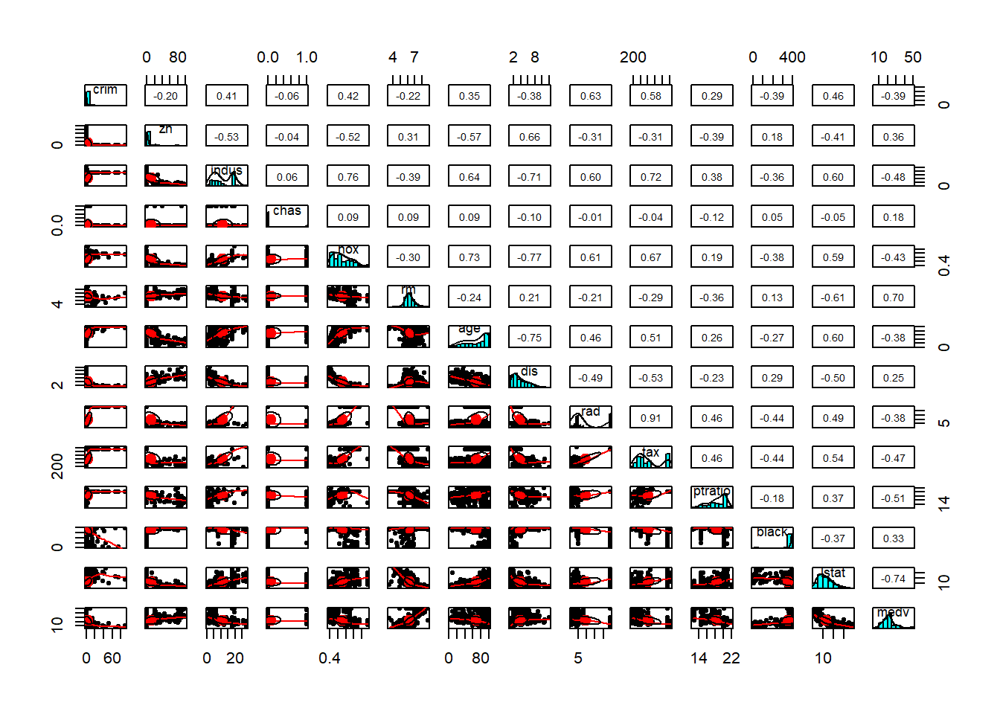
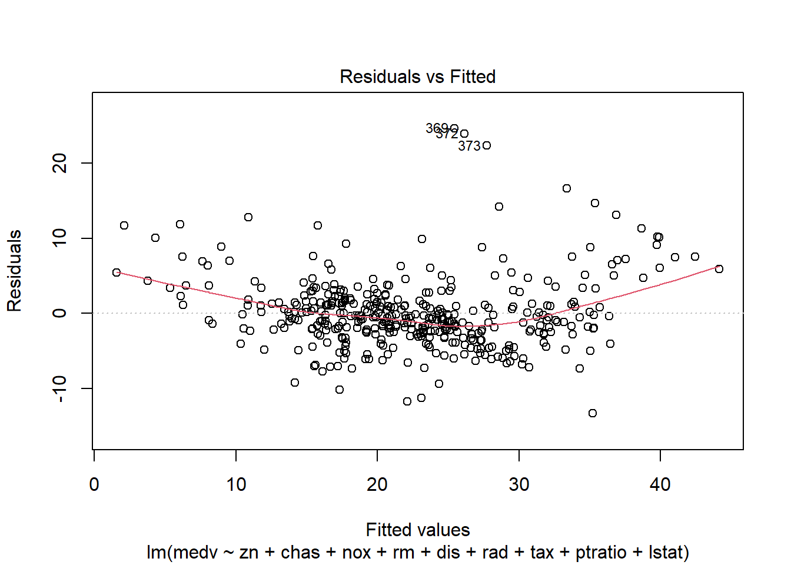
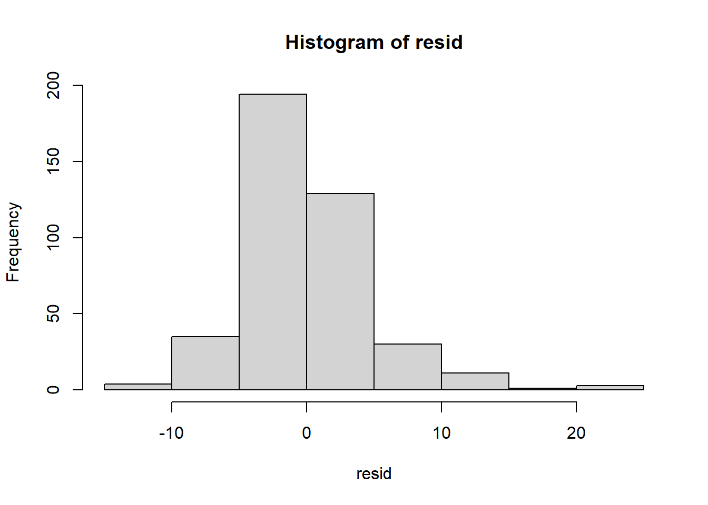
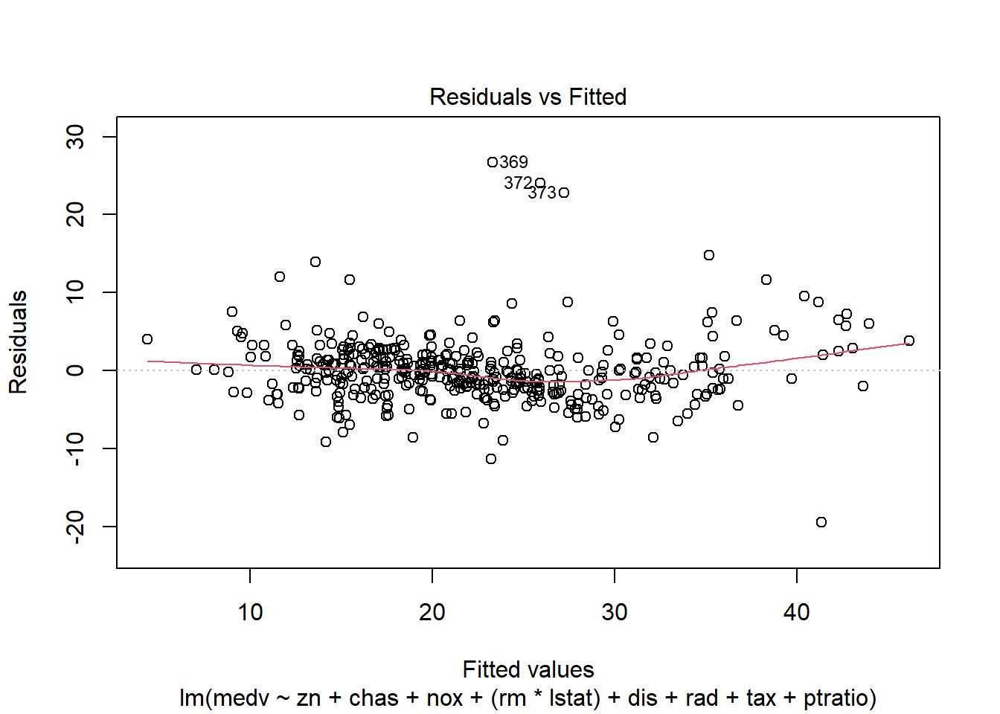
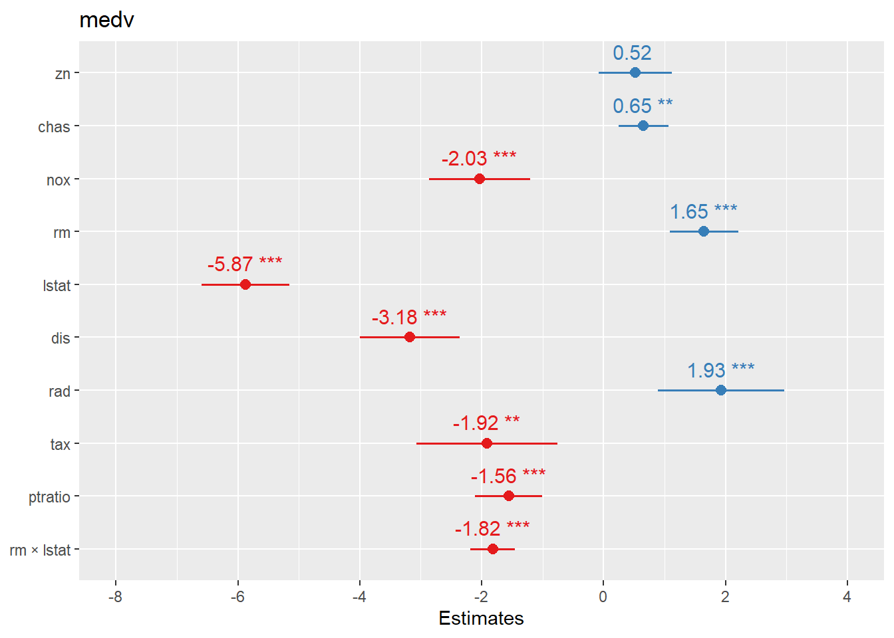
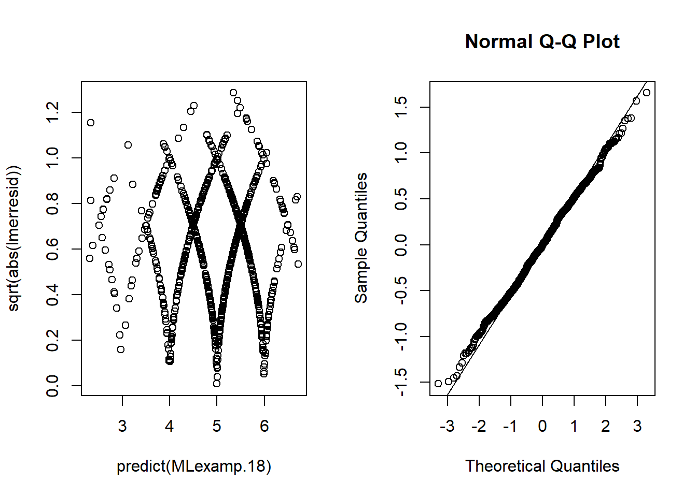
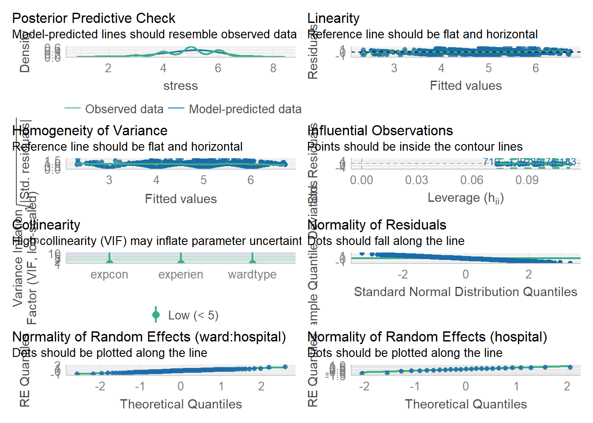
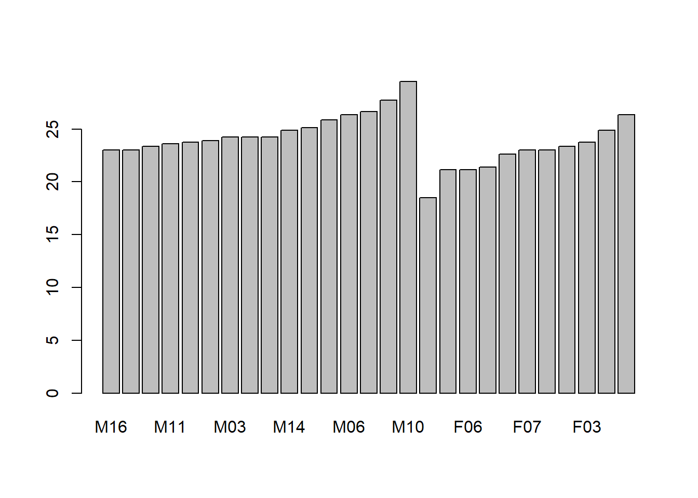
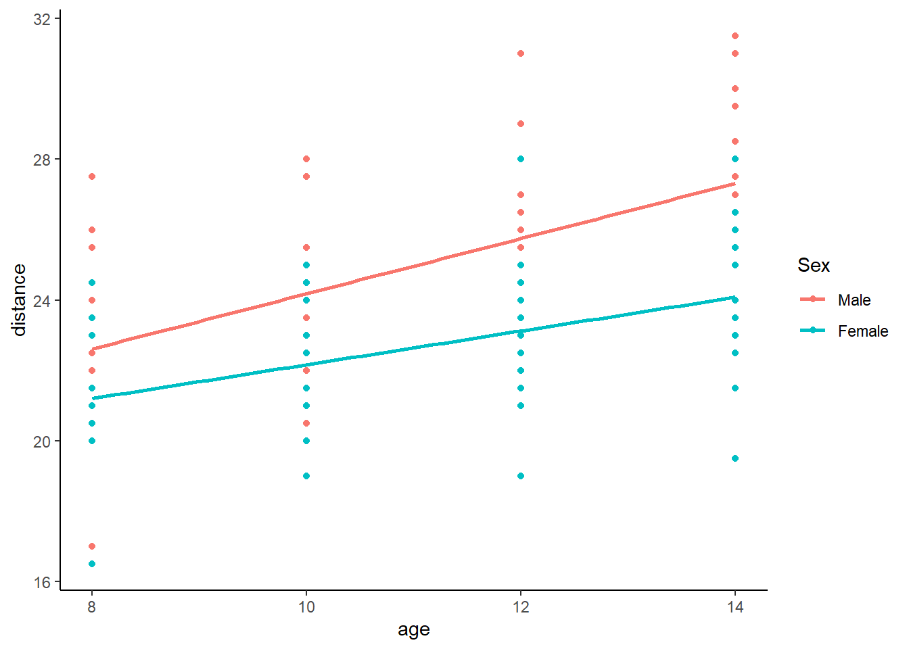
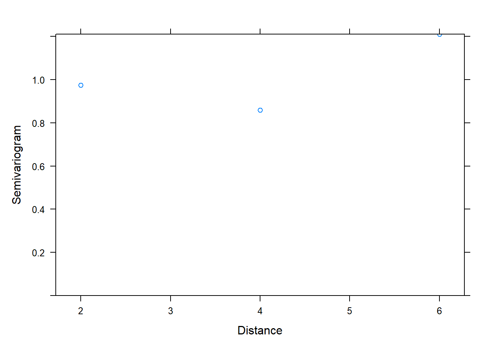

6 Statistical models
6.1 Simple linear regression
6.1.1 Linear regeression assumptions
There are four principal assumptions:
linearity of the relationship between dependent and independent variables.
statistical independence of the errors with y variable.
homoscedasticity (constant variance) of the errors for all x.
normality of the error distribution.
if independent assumption violated, the estimated standard errors tend to underestimate the true standard error. P value associated thus is lower.
only the prediction errors need to be normally distributed. but with extremely asymmetric or long-tailed, it may be hard to fit them (x and y) into a linear model whose errors will be normally distributed.
6.1.2 Population regression function
Regression is to estimate and/or predict the population mean (expectation) of dependent variable (yi) by a known or a set value of explanatory variables (xi). Population regression line (PRL) is the trajectory of the conditional expectation value given Xi.
\[
E(Y|X_i)=f(X_i)=\beta_1+\beta_2X_i
\]
This is an unknown but fixed value (can be estimated).
6.1.3 Population regression model
the errors \(u_i=y_i-\hat{y}_i\) have equal variance \[ Y_i=\beta_1+\beta_2X_i+u_i \]
6.1.4 Sample regression model
(using hat to indicate sample) \[ Y_i=\hat{\beta}_1+\hat{\beta}_2X_i+e_i \]
since
\[
u_i \sim N(0,\sigma^2)
\]
or
\[
e_i \sim N(0,\hat{\sigma} ^2)
\]
and
i.i.d., independent identically distribution, the probability distributions are all the same and variables are independent of each other.
\[ \begin{align} u_i \sim i.i.d \ N(0,\sigma^2) \end{align} \]
then
\[ \begin{align} Y_i- \beta_1+\beta_2X_i (\hat{Y_i}) &\sim i.i.d \ N(0,\sigma^2)\\ \end{align} \]
thence, to minimize Q \(\sum{(Y_i-\hat{Y}_i)^2}\) to solve b0 and b1.
\[ \begin{align} Min(Q) &=\sum{(Y_i-\hat{Y}_i)^2}\\ &=\sum{\left ( Y_i-(\hat{\beta}_1+\hat{\beta}_2X_i) \right )^2}\\ &=f(\hat{\beta}_1,\hat{\beta}_2) \end{align} \]
6.1.5 Solve \(\hat{\beta_1},\hat{\beta_2}\) and variance
\[ \begin{align} \begin{split} \hat{\beta}_2 &=\frac{\sum{x_iy_i}}{\sum{x_i^2}}\\ \hat{\beta_1} &=\bar{Y}_i-\hat{\beta}_2\bar{X}_i \end{split} \\ var(\hat{\beta}_2) =\sigma_{\hat{\beta}_2}^2&=\frac{1}{\sum{x_i^2}}\cdot\sigma^2&&\text{} \\ var(\hat{\beta}_1) =\sigma_{\hat{\beta}_1}^2 &=\frac{\sum{X_i^2}}{n\sum{x_i^2}}\cdot\sigma^2 \end{align} \]
6.1.6 Calculate the variance \(\hat{\sigma}^2\) of error \(e_i\)
(for sample)
\[ \begin{align} \hat{Y}_i &=\hat{\beta}_1+\hat{\beta}_2X_i \\ e_i &=Y_i-\hat{Y}_i \\ \hat{\sigma}^2 &=\frac{\sum{e_i^2}}{n-1}=\frac{\sum{(Y_i-\hat{Y}_i)^2}}{n-1} \end{align} \]
6.1.7 Sum of squares decomposition
\[ \begin{align} (Y_i-\bar{Y_i}) &= (\hat{Y_i}-\bar{Y_i}) +(Y_i-\hat{Y_i}) \\ \sum{y_i^2} &= \sum{\hat{y_i}^2} +\sum{e_i^2} \\ TSS&=ESS+RSS \end{align} \]
6.1.8 Coefficient of determination \(R^2\) and goodness of fit
\[ \begin{align} r^2 &=\frac{ESS}{TSS}=\frac{\sum{(\hat{Y_i}-\bar{Y})^2}}{\sum{(Y_i-\bar{Y})^2}}\\ &=1-\frac{RSS}{TSS}=1-\frac{\sum{(Y_i-\hat{Y_i})^2}}{\sum{(Y_i-\bar{Y})^2}} \end{align} \]
6.1.9 Test of regression coefficients
since
\[
\begin{align}
\hat{\beta_2} &\sim N(\beta_2,\sigma^2_{\hat{\beta_2}}) \\
\hat{\beta_1} &\sim N(\beta_1,\sigma^2_{\hat{\beta_1}})
\end{align}
\]
and \[ \begin{align} S_{\hat{\beta}_2} &=\sqrt{\frac{1}{\sum{x_i^2}}}\cdot\hat{\sigma} \\ S_{\hat{\beta}_1} &=\sqrt{\frac{\sum{X_i^2}}{n\sum{x_i^2}}}\cdot\hat{\sigma} \end{align} \]
therefore
\[
\begin{align}
t_{\hat{\beta_2}}^{\ast}&=\frac{\hat{\beta_2}-\beta_2}{S_{\hat{\beta_2}}}
=\frac{\hat{\beta_2}}{S_{\hat{\beta_2}}}
=\frac{\hat{\beta_2}}{\sqrt{\frac{1}{\sum{x_i^2}}}\cdot\hat{\sigma}}
\sim t(n-2)
\\
t_{\hat{\beta_1}}^{\ast}&=\frac{\hat{\beta_1}-\beta_1}{S_{\hat{\beta_1}}}
=\frac{\hat{\beta_1}}{S_{\hat{\beta_1}}}
=\frac{\hat{\beta_1}}{\sqrt{\frac{\sum{X_i^2}}{n\sum{x_i^2}}}\cdot\hat{\sigma}}
\sim t(n-2)
\end{align}
\]
6.1.10 Statistical test of model
since
\[
\begin{align}
Y_i&\sim i.i.d \ N(\beta_1+\beta_2X_i,\sigma^2)\\
\end{align}
\]
and
\[
\begin{align}
ESS&=\sum{(\hat{Y_i}-\bar{Y})^2} \sim \chi^2(df_{ESS}) \\
RSS&=\sum{(Y_i-\hat{Y_i})^2} \sim \chi^2(df_{RSS})
\end{align}
\]
therefore \[ \begin{align} F^{\ast}&=\frac{ESS/df_{ESS}}{RSS/df_{RSS}}=\frac{MSS_{ESS}}{MSS_{RSS}}\\ &=\frac{\sum{(\hat{Y_i}-\bar{Y})^2}/df_{ESS}}{\sum{(Y_i-\hat{Y_i})^2}/df_{RSS}} \\ &=\frac{\hat{\beta_2}^2\sum{x_i^2}}{\sum{e_i^2}/{(n-2)}}\\ &=\frac{\hat{\beta_2}^2\sum{x_i^2}}{\hat{\sigma}^2} \end{align} \]
6.1.11 Mean prediction
since
\[ \begin{align} \mu_{\hat{Y}_0}&=E(\hat{Y}_0)\\ &=E(\hat{\beta}_1+\hat{\beta}_2X_0)\\ &=\beta_1+\beta_2X_0\\ &=E(Y|X_0) \end{align} \] and \[ \begin{align} var(\hat{Y}_0)&=\sigma^2_{\hat{Y}_0}\\ &=E(\hat{\beta}_1+\hat{\beta}_2X_0)\\ &=\sigma^2 \left( \frac{1}{n}+ \frac{(X_0-\bar{X})^2}{\sum{x_i^2}} \right) \end{align} \] therefore \[ \begin{align} \hat{Y}_0& \sim N(\mu_{\hat{Y}_0},\sigma^2_{\hat{Y}_0})\\ \hat{Y}_0& \sim N \left(E(Y|X_0), \sigma^2 \left( \frac{1}{n}+ \frac{(X_0-\bar{X})^2}{\sum{x_i^2}} \right) \right) \end{align} \]
then construct t statistic to estimate CI
\[
\begin{align}
t_{\hat{Y}_0}& =\frac{\hat{Y}_0-E(Y|X_0)}{S_{\hat{Y}_0}} \sim t(n-2)
\end{align}
\]
\[ \begin{align} \hat{Y}_0-t_{1-\alpha/2}(n-2) \cdot S_{\hat{Y}_0} \leq E(Y|X_0) \leq \hat{Y}_0+t_{1-\alpha/2}(n-2) \cdot S_{\hat{Y}_0} \end{align} \]
6.1.12 Individual prediction
since
\[ \begin{align} (Y_0-\hat{Y}_0)& \sim N \left(\mu_{(Y_0-\hat{Y}_0)},\sigma^2_{(Y_0-\hat{Y}_0)} \right)\\ (Y_0-\hat{Y}_0)& \sim N \left(0, \sigma^2 \left(1+ \frac{1}{n}+ \frac{(X_0-\bar{X})^2}{\sum{x_i^2}} \right) \right) \end{align} \]
and Construct t statistic
\[
\begin{align}
t_{\hat{Y}_0}& =\frac{\hat{Y}_0-E(Y|X_0)}{S_{\hat{Y}_0}} \sim t(n-2)
\end{align}
\]
and \[ \begin{align} S_{\hat{Y}_0}& = \sqrt{\hat{\sigma}^2 \left( \frac{1}{n}+ \frac{(X_0-\bar{X})^2}{\sum{x_i^2}} \right)} \end{align} \] therefore
\[ \begin{align} \hat{Y}_0-t_{1-\alpha/2}(n-2) \cdot S_{\hat{Y}_0} \leq E(Y|X_0) \leq \hat{Y}_0+t_{1-\alpha/2}(n-2) \cdot S_{\hat{Y}_0} \end{align} \]
it is harder to predict your weight based on your age than to predict the mean weight of people who are your age. so, the interval of individual prediction is wider than those of mean prediction.
6.2 Multiple linear regression
6.2.1 Matrix format
\[ \begin{align} Y_i&=\beta_1+\beta_2X_{2i}+\beta_3X_{3i}+\cdots+\beta_kX_{ki}+u_i && \ \end{align} \]
\[ \begin{equation} \begin{bmatrix} Y_1 \\ Y_2 \\ \cdots \\ Y_n \\ \end{bmatrix} = \begin{bmatrix} 1 & X_{21} & X_{31} & \cdots & X_{k1} \\ 1 & X_{22} & X_{32} & \cdots & X_{k2} \\ \cdots & \cdots & \cdots & \cdots & \cdots \\ 1 & X_{2n} & X_{3n} & \cdots & X_{kn} \end{bmatrix} \begin{bmatrix} \beta_1 \\ \beta_2 \\ \vdots \\ \beta_k \\ \end{bmatrix}+ \begin{bmatrix} u_1 \\ u_2 \\ \vdots \\ u_n \\ \end{bmatrix} \end{equation} \]
\[ \begin{alignat}{4} \mathbf{y} &= &\mathbf{X}&\mathbf{\beta}&+&\mathbf{u} \\ (n \times 1) & &{(n \times k)} &{(k \times 1)}&+&{(n \times 1)} \end{alignat} \]
6.2.2 Variance covariance matrix of random errors
because \[ \mathbf{u} \sim N(\mathbf{0},\sigma^2\mathbf{I})\text{ population}\\ \mathbf{e} \sim N(\mathbf{0},\sigma^2\mathbf{I})\text{ sample}\ \]
therefore \[ \begin{align} var-cov(\mathbf{u})&=E(\mathbf{uu'})\\ &= \begin{bmatrix} \sigma_1^2 & \sigma_{12}^2 &\cdots &\sigma_{1n}^2\\ \sigma_{21}^2 & \sigma_2^2 &\cdots &\sigma_{2n}^2\\ \vdots & \vdots &\vdots &\vdots \\ \sigma_{n1}^2 & \sigma_{n2}^2 &\cdots &\sigma_n^2\\ \end{bmatrix} && \leftarrow (E{(u_i)}=0)\\ &= \begin{bmatrix} \sigma^2 & \sigma_{12}^2 &\cdots &\sigma_{1n}^2\\ \sigma_{21}^2 & \sigma^2 &\cdots &\sigma_{2n}^2\\ \vdots & \vdots &\vdots &\vdots \\ \sigma_{n1}^2 & \sigma_{n2}^2 &\cdots &\sigma^2\\ \end{bmatrix} && \leftarrow (var{(u_i)}=\sigma^2)\\ &= \begin{bmatrix} \sigma^2 & 0 &\cdots &0\\ 0 & \sigma^2 &\cdots &0\\ \vdots & \vdots &\vdots &\vdots \\ 0 & 0 &\cdots &\sigma^2\\ \end{bmatrix} && \leftarrow (cov{(u_i,u_j)}=0,i \neq j)\\ &=\sigma^2 \begin{bmatrix} 1 & 0 &\cdots &0\\ 0 & 1 &\cdots &0\\ \vdots & \vdots &\vdots &\vdots \\ 0 & 0 &\cdots &1\\ \end{bmatrix}\\ &=\sigma^2\mathbf{I} \end{align} \]
6.2.3 Minimize Q, \(\sum{(y-\hat{y})^2}\)
\[ \begin{align} Q&=\sum{e_i^2}\\ &=\mathbf{e'e}\\ &=\mathbf{(y-X\hat{\beta})'(y-X\hat{\beta})}\\ &=\mathbf{y'y-2\hat{\beta}'X'y+\hat{\beta}'X'X\hat{\beta}} \end{align} \]
6.2.4 Solve \(\hat{\beta}\) by derivation
(population=sample)
\[ \begin{align} \frac{\partial Q}{\partial \mathbf{\hat{\beta}}}&=0\\ \frac{\partial(\mathbf{y'y-2\hat{\beta}'X'y+\hat{\beta}'X'X\hat{\beta}})}{\partial \mathbf{\hat{\beta}}}&=0\\ -2\mathbf{X'y}+2\mathbf{X'X\hat{\beta}}&=0\\ -\mathbf{X'y}+\mathbf{X'X\hat{\beta}}&=0\\ \mathbf{X'X\hat{\beta}} &=\mathbf{X'y} \end{align} \] \[ \begin{align} \mathbf{\hat{\beta}} &=\mathbf{(X'X)^{-1}X'y} \end{align} \]
6.2.5 Solve \(\hat{\sigma_\beta}^2\)
\[ \begin{align} var-cov(\mathbf{\hat{\beta}}) &=\mathbf{E\left( \left(\hat{\beta}-E(\hat{\beta}) \right) \left( \hat{\beta}-E(\hat{\beta}) \right )' \right)}\\ &=\mathbf{E\left( \left(\hat{\beta}-{\beta} \right) \left( \hat{\beta}-\beta \right )' \right)} \\ &=\mathbf{E\left( \left((X'X)^{-1}X'u \right) \left( (X'X)^{-1}X'u \right )' \right)} \\ &=\mathbf{E\left( (X'X)^{-1}X'uu'X(X'X)^{-1} \right)} \\ &= \mathbf{(X'X)^{-1}X'E(uu')X(X'X)^{-1}} \\ &= \mathbf{(X'X)^{-1}X'}\sigma^2\mathbf{IX(X'X)^{-1}} \\ &= \sigma^2\mathbf{(X'X)^{-1}X'X(X'X)^{-1}} \\ &= \sigma^2\mathbf{(X'X)^{-1}} \\ \end{align} \]
6.2.6 Solve \(S^2(\mathbf{\hat{\beta}})\)
(for sample)
where \[ \begin{align} \hat{\sigma}^2&=\frac{\sum{e_i^2}}{n-k}=\frac{\mathbf{e'e}}{n-k} \\ E(\hat{\sigma}^2)&=\sigma^2 \end{align} \]
therefore
\[
\begin{align}
S^2_{ij}(\mathbf{\hat{\beta}})
&= \hat{\sigma}^2\mathbf{(X'X)^{-1}} \\
&= \frac{\mathbf{e'e}}{n-k}\mathbf{(X'X)^{-1}} \\
\end{align}
\]
which is variance-covariance of coefficients
6.2.7 Sum of squares decomposition (matrix format)
\[ \begin{align} TSS&=\mathbf{y'y}-n\bar{Y}^2 \\ RSS&=\mathbf{ee'}=\mathbf{yy'-\hat{\beta}'X'y} \\ ESS&=\mathbf{\hat{\beta}'X'y}-n\bar{Y}^2 \end{align} \]
6.2.8 Determination coefficient \(R^2\) and goodness of fit
\[ \begin{align} R^2&=\frac{ESS}{TSS}\\ &=\frac{\mathbf{\hat{\beta}'X'y}-n\bar{Y}^2}{\mathbf{y'y}-n\bar{Y}^2} \end{align} \]
6.2.9 Test of regression coefficients
because \[ \begin{align} \mathbf{u}&\sim N(\mathbf{0},\sigma^2\mathbf{I}) \\ \mathbf{\hat{\beta}} &\sim N\left(\mathbf{\beta},\sigma^2\mathbf{X'X}^{-1} \right) \\ \end{align} \] therefore
(for all coefficients test, vector, see above \(S_{\hat{\beta}}^2\) )
\[
\begin{align}
\mathbf{t_{\hat{\beta}}}&=\mathbf{\frac{\hat{\beta}-\beta}{S_{\hat{\beta}}}}
\sim \mathbf{t(n-k)}
\end{align}
\]
(for individual coefficient test)
\[
\begin{align}
\mathbf{t_{\hat{\beta}}^{\ast}}&=\frac{\mathbf{\hat{\beta}}}{\mathbf{\sqrt{S^2_{ij}(\hat{\beta}_{kk})}}}
\end{align}
\]
where
\[
S^2_{ij}(\hat{\beta}_{kk})=[s^2_{\hat{\beta}_1},s^2_{\hat{\beta}_2},\cdots,s^2_{\hat{\beta}_k}]'
\]
they are on diagonal line of the matrix of \(S^2(\mathbf{\hat{\beta}})\)
6.2.10 Test of model
unrestricted model \[ \begin{align} u_i &\sim i.i.d \ N(0,\sigma^2)\\ Y_i&\sim i.i.d \ N(\beta_1+\beta_2X_i+\cdots+\beta_kX_i,\sigma^2)\\ RSS_U&=\sum{(Y_i-\hat{Y_i})^2} \sim \chi^2(n-k) \\ \end{align} \] restricted model \[ \begin{align} u_i &\sim i.i.d \ N(0,\sigma^2)\\ Y_i&\sim i.i.d \ N(\beta_1,\sigma^2)\\ RSS_R&=\sum{(Y_i-\hat{Y_i})^2} \sim \chi^2(n-1) \\ \end{align} \] F test \[ \begin{align} F^{\ast}&=\frac{(RSS_R-RSS_U)/(k-1)}{RSS_U/(n-k)} \\ &=\frac{ESS_U/df_{ESS_U}}{RSS_U/df_{RSS_U}} \\ &\sim F(df_{ESS_U},df_{RSS_U}) \end{align} \]
\[ \begin{align} F^{\ast}&=\frac{ESS_U/df_{ESS_U}}{RSS_U/df_{RSS_U}} =\frac{\left(\mathbf{\hat{\beta}'X'y}-n\bar{Y}^2 \right)/{(k-1)}}{\left(\mathbf{yy'-\hat{\beta}'X'y}\right)/{(n-k)}} \end{align} \]
6.2.11 Mean prediction
since
\[
\begin{align}
E(\hat{Y}_0)&=E\mathbf{(X_0\hat{\beta})}=\mathbf{X_0\beta}=E\mathbf{(Y_0)}\\
var(\hat{Y}_0)&=E\mathbf{(X_0\hat{\beta}-X_0\beta)}^2\\
&=E\mathbf{\left( X_0(\hat{\beta}-\beta)(\hat{\beta}-\beta)'X_0' \right)}\\
&=E\mathbf{X_0\left( (\hat{\beta}-\beta)(\hat{\beta}-\beta)' \right)X_0'}\\
&=\sigma^2\mathbf{X_0\left( X'X \right)^{-1}X_0'}\\
\end{align}
\]
and
\[
\begin{align}
\hat{Y}_0& \sim N(\mu_{\hat{Y}_0},\sigma^2_{\hat{Y}_0})\\
\hat{Y}_0& \sim N\left(E(Y_0|X_0), \sigma^2\mathbf{X_0(X'X)^{-1}X_0'}\right)
\end{align}
\]
construct t statistic
\[
\begin{align}
t_{\hat{Y}_0}& =\frac{\hat{Y}_0-E(Y|X_0)}{S_{\hat{Y}_0}}
&\sim t(n-k)
\end{align}
\]
therefore \[ \begin{align} \hat{Y}_0-t_{1-\alpha/2}(n-2) \cdot S_{\hat{Y}_0} \leq E(Y|X_0) \leq \hat{Y}_0+t_{1-\alpha/2}(n-2) \cdot S_{\hat{Y}_0} \end{align} \]
where \[ \begin{align} \mathbf{S_{\hat{Y}_0}} &=\sqrt{\hat{\sigma}^2X_0(X'X)^{-1}X_0'} \\ \hat{\sigma}^2&=\frac{\mathbf{ee'}}{(n-k)} \end{align} \]
6.2.12 Individual prediction
since \[ \begin{align} e_0&=Y_0-\hat{Y}_0 \end{align} \]
and \[ \begin{align} E(e_0)&=E(Y_0-\hat{Y}_0)\\ &=E(\mathbf{X_0\beta}+u_0-\mathbf{X_0\hat{\beta}})\\ &=E\left(u_0-\mathbf{X_0 (\hat{\beta}- \beta)} \right)\\ &=E\left(u_0-\mathbf{X_0 (X'X)^{-1}X'u} \right)\\ &=0 \end{align} \]
\[ \begin{align} var(e_0)&=E(Y_0-\hat{Y}_0)^2\\ &=E(e_0^2)\\ &=E\left(u_0-\mathbf{X_0 (X'X)^{-1}X'u} \right)^2\\ &=\sigma^2\left( 1+ \mathbf{X_0(X'X)^{-1}X_0'}\right) \end{align} \]
and
\[
\begin{align}
e_0& \sim N(\mu_{e_0},\sigma^2_{e_0})\\
e_0& \sim N\left(0, \sigma^2\left(1+\mathbf{X_0(X'X)^{-1}X_0'}\right)\right)
\end{align}
\]
construct a t statistic
\[
\begin{align}
t_{e_0}& =\frac{\hat{Y}_0-Y_0}{S_{e_0}}
\sim t(n-k)
\end{align}
\]
therefore \[ \begin{align} \hat{Y}_0-t_{1-\alpha/2}(n-2) \cdot S_{Y_0-\hat{Y}_0} \leq (Y_0|X_0) \leq \hat{Y}_0+t_{1-\alpha/2}(n-2) \cdot S_{Y_0-\hat{Y}_0} \end{align} \]
where \[ \begin{align} S_{Y_0-\hat{Y}_0}=S_{e_0} &=\sqrt{\hat{\sigma}^2 \left( 1+X_0(X'X)^{-1}X_0' \right) } \\ \hat{\sigma}^2&=\frac{\mathbf{ee'}}{(n-k)} \end{align} \]
6.3 Multiple linear regression practice
library(car)
library(MASS)
library(psych)6.3.1 Loading and describing data
data(Boston)
data_ori <- Boston
describe(data_ori)| vars | n | mean | sd | median | trimmed | mad | min | max | range | skew | kurtosis | se | |
|---|---|---|---|---|---|---|---|---|---|---|---|---|---|
| crim | 1 | 506 | 3.6135236 | 8.6015451 | 0.25651 | 1.6816300 | 0.3283218 | 0.00632 | 88.9762 | 88.96988 | 5.1922223 | 36.5958159 | 0.3823853 |
| zn | 2 | 506 | 11.3636364 | 23.3224530 | 0.00000 | 5.0800493 | 0.0000000 | 0.00000 | 100.0000 | 100.00000 | 2.2124881 | 3.9523873 | 1.0368095 |
| indus | 3 | 506 | 11.1367787 | 6.8603529 | 9.69000 | 10.9318719 | 9.3700320 | 0.46000 | 27.7400 | 27.28000 | 0.2932747 | -1.2401949 | 0.3049799 |
| chas | 4 | 506 | 0.0691700 | 0.2539940 | 0.00000 | 0.0000000 | 0.0000000 | 0.00000 | 1.0000 | 1.00000 | 3.3857377 | 9.4819703 | 0.0112914 |
| nox | 5 | 506 | 0.5546951 | 0.1158777 | 0.53800 | 0.5450601 | 0.1297275 | 0.38500 | 0.8710 | 0.48600 | 0.7249897 | -0.0874106 | 0.0051514 |
| rm | 6 | 506 | 6.2846344 | 0.7026171 | 6.20850 | 6.2528744 | 0.5122383 | 3.56100 | 8.7800 | 5.21900 | 0.4012223 | 1.8418324 | 0.0312351 |
| age | 7 | 506 | 68.5749012 | 28.1488614 | 77.50000 | 71.1960591 | 28.9848300 | 2.90000 | 100.0000 | 97.10000 | -0.5954162 | -0.9780297 | 1.2513695 |
| dis | 8 | 506 | 3.7950427 | 2.1057101 | 3.20745 | 3.5393786 | 1.9142590 | 1.12960 | 12.1265 | 10.99690 | 1.0057898 | 0.4575916 | 0.0936102 |
| rad | 9 | 506 | 9.5494071 | 8.7072594 | 5.00000 | 8.7339901 | 2.9652000 | 1.00000 | 24.0000 | 23.00000 | 0.9988651 | -0.8789291 | 0.3870849 |
| tax | 10 | 506 | 408.2371542 | 168.5371161 | 330.00000 | 400.0443350 | 108.2298000 | 187.00000 | 711.0000 | 524.00000 | 0.6659891 | -1.1503176 | 7.4923887 |
| ptratio | 11 | 506 | 18.4555336 | 2.1649455 | 19.05000 | 18.6625616 | 1.7049900 | 12.60000 | 22.0000 | 9.40000 | -0.7975743 | -0.3048010 | 0.0962436 |
| black | 12 | 506 | 356.6740316 | 91.2948644 | 391.44000 | 383.1695074 | 8.0949960 | 0.32000 | 396.9000 | 396.58000 | -2.8732597 | 7.1037150 | 4.0585518 |
| lstat | 13 | 506 | 12.6530632 | 7.1410615 | 11.36000 | 11.8990394 | 7.1090670 | 1.73000 | 37.9700 | 36.24000 | 0.9010929 | 0.4628171 | 0.3174589 |
| medv | 14 | 506 | 22.5328063 | 9.1971041 | 21.20000 | 21.5623153 | 5.9304000 | 5.00000 | 50.0000 | 45.00000 | 1.1015373 | 1.4509837 | 0.4088611 |
summary(data_ori)| crim | zn | indus | chas | nox | rm | age | dis | rad | tax | ptratio | black | lstat | medv | |
|---|---|---|---|---|---|---|---|---|---|---|---|---|---|---|
| Min. : 0.00632 | Min. : 0.00 | Min. : 0.46 | Min. :0.00000 | Min. :0.3850 | Min. :3.561 | Min. : 2.90 | Min. : 1.130 | Min. : 1.000 | Min. :187.0 | Min. :12.60 | Min. : 0.32 | Min. : 1.73 | Min. : 5.00 | |
| 1st Qu.: 0.08205 | 1st Qu.: 0.00 | 1st Qu.: 5.19 | 1st Qu.:0.00000 | 1st Qu.:0.4490 | 1st Qu.:5.886 | 1st Qu.: 45.02 | 1st Qu.: 2.100 | 1st Qu.: 4.000 | 1st Qu.:279.0 | 1st Qu.:17.40 | 1st Qu.:375.38 | 1st Qu.: 6.95 | 1st Qu.:17.02 | |
| Median : 0.25651 | Median : 0.00 | Median : 9.69 | Median :0.00000 | Median :0.5380 | Median :6.208 | Median : 77.50 | Median : 3.207 | Median : 5.000 | Median :330.0 | Median :19.05 | Median :391.44 | Median :11.36 | Median :21.20 | |
| Mean : 3.61352 | Mean : 11.36 | Mean :11.14 | Mean :0.06917 | Mean :0.5547 | Mean :6.285 | Mean : 68.57 | Mean : 3.795 | Mean : 9.549 | Mean :408.2 | Mean :18.46 | Mean :356.67 | Mean :12.65 | Mean :22.53 | |
| 3rd Qu.: 3.67708 | 3rd Qu.: 12.50 | 3rd Qu.:18.10 | 3rd Qu.:0.00000 | 3rd Qu.:0.6240 | 3rd Qu.:6.623 | 3rd Qu.: 94.08 | 3rd Qu.: 5.188 | 3rd Qu.:24.000 | 3rd Qu.:666.0 | 3rd Qu.:20.20 | 3rd Qu.:396.23 | 3rd Qu.:16.95 | 3rd Qu.:25.00 | |
| Max. :88.97620 | Max. :100.00 | Max. :27.74 | Max. :1.00000 | Max. :0.8710 | Max. :8.780 | Max. :100.00 | Max. :12.127 | Max. :24.000 | Max. :711.0 | Max. :22.00 | Max. :396.90 | Max. :37.97 | Max. :50.00 |
6.3.2 Create table 1
library(boot)
library(table1)
table1(~ . , data=data_ori)| Overall (N=506) |
|
|---|---|
| crim | |
| Mean (SD) | 3.61 (8.60) |
| Median [Min, Max] | 0.257 [0.00632, 89.0] |
| zn | |
| Mean (SD) | 11.4 (23.3) |
| Median [Min, Max] | 0 [0, 100] |
| indus | |
| Mean (SD) | 11.1 (6.86) |
| Median [Min, Max] | 9.69 [0.460, 27.7] |
| chas | |
| Mean (SD) | 0.0692 (0.254) |
| Median [Min, Max] | 0 [0, 1.00] |
| nox | |
| Mean (SD) | 0.555 (0.116) |
| Median [Min, Max] | 0.538 [0.385, 0.871] |
| rm | |
| Mean (SD) | 6.28 (0.703) |
| Median [Min, Max] | 6.21 [3.56, 8.78] |
| age | |
| Mean (SD) | 68.6 (28.1) |
| Median [Min, Max] | 77.5 [2.90, 100] |
| dis | |
| Mean (SD) | 3.80 (2.11) |
| Median [Min, Max] | 3.21 [1.13, 12.1] |
| rad | |
| Mean (SD) | 9.55 (8.71) |
| Median [Min, Max] | 5.00 [1.00, 24.0] |
| tax | |
| Mean (SD) | 408 (169) |
| Median [Min, Max] | 330 [187, 711] |
| ptratio | |
| Mean (SD) | 18.5 (2.16) |
| Median [Min, Max] | 19.1 [12.6, 22.0] |
| black | |
| Mean (SD) | 357 (91.3) |
| Median [Min, Max] | 391 [0.320, 397] |
| lstat | |
| Mean (SD) | 12.7 (7.14) |
| Median [Min, Max] | 11.4 [1.73, 38.0] |
| medv | |
| Mean (SD) | 22.5 (9.20) |
| Median [Min, Max] | 21.2 [5.00, 50.0] |
6.3.3 Missingness checking
library(mice)
md.pattern(data_ori)## /\ /\
## { `---' }
## { O O }
## ==> V <== No need for mice. This data set is completely observed.
## \ \|/ /
## `-----'| crim | zn | indus | chas | nox | rm | age | dis | rad | tax | ptratio | black | lstat | medv | ||
|---|---|---|---|---|---|---|---|---|---|---|---|---|---|---|---|
| 506 | 1 | 1 | 1 | 1 | 1 | 1 | 1 | 1 | 1 | 1 | 1 | 1 | 1 | 1 | 0 |
| 0 | 0 | 0 | 0 | 0 | 0 | 0 | 0 | 0 | 0 | 0 | 0 | 0 | 0 | 0 |
6.3.4 Exploratory data analysis
-correlation matrix
library(psych)
pairs.panels(data_ori)
- histogram
library(DataExplorer)
plot_histogram(data_ori)6.3.5 Transformations
- transformation (based on the following rule) then histogram
library(tidyverse)
data_trans = data_ori %>% mutate(age= sqrt(max(age)+1-age),
black= log10(max(black)+1-black),
crim= log10(crim),
dis= sqrt(dis) )
plot_histogram(data_trans)# pairs.panels(data2)! How to transform data for normality.
- check linearity between
y and x
attach(data_trans)
plot(medv, rm)plot(medv,lstat)
plot(medv,age)
plot(medv, black)
plot(medv,crim)
6.3.6 Data imputation and normalization
6.3.6.1 For original”data”
- compiling knnimpute model (see machine learning section)
library(caret)
# Create the knn imputation model on the training data
y=data_ori$medv
preProcess_missingdata_model <- preProcess(data_ori , method='knnImpute')
preProcess_missingdata_model## Created from 506 samples and 14 variables
##
## Pre-processing:
## - centered (14)
## - ignored (0)
## - 5 nearest neighbor imputation (14)
## - scaled (14)- check missingness
# Use the imputation model to predict the values of missing data points
library(RANN) # required for knnInpute
data_ori <- predict(preProcess_missingdata_model, newdata = data_ori )
anyNA(data_ori )## [1] FALSEdata_ori$medv <- y6.3.6.2 For transformed “data2”
- compiling knnimpute model (see machine learning section)
library(caret)
y2=data_trans$medv
# Create the knn imputation model on the training data
preProcess_missingdata_model2 <- preProcess(data_trans , method='knnImpute')
preProcess_missingdata_model2## Created from 506 samples and 14 variables
##
## Pre-processing:
## - centered (14)
## - ignored (0)
## - 5 nearest neighbor imputation (14)
## - scaled (14)- check missingness
# Use the imputation model to predict the values of missing data points
library(RANN) # required for knnInpute
data_trans <- predict(preProcess_missingdata_model2, newdata = data_trans )
anyNA(data_trans )## [1] FALSEdata_trans$medv <- y26.3.8 Spliting data into trainning data and test data
- by using
caretpackage (test data for external validation)
# Create the training and test datasets
set.seed(123)
# for original data
# Step 1: Get row numbers for the training data
trainRowNumbers <- createDataPartition(data_ori$medv, p=0.8, list=FALSE)
# Step 2: Create the training dataset
data <- data_ori[trainRowNumbers,]
# Step 3: Create the test dataset
testdata <- data_ori[-trainRowNumbers,]
# for transformed data
# Step 1: Get row numbers for the training data
trainRowNumbers2 <- createDataPartition(data_trans$medv, p=0.8, list=FALSE)
# Step 2: Create the training dataset
data2 <- data_trans[trainRowNumbers2,]
# Step 3: Create the test dataset
testdata2 <- data_trans[-trainRowNumbers2,]6.3.9 Step regression
model_o = lm( medv ~. , data=data2)
step(model_o,direction = "both")## Start: AIC=1281.15
## medv ~ crim + zn + indus + chas + nox + rm + age + dis + rad +
## tax + ptratio + black + lstat
##
## Df Sum of Sq RSS AIC
## - black 1 0.17 8847.0 1279.2
## - age 1 7.07 8853.9 1279.5
## - crim 1 14.36 8861.2 1279.8
## - indus 1 24.08 8870.9 1280.3
## <none> 8846.8 1281.2
## - rad 1 103.22 8950.0 1283.9
## - tax 1 156.33 9003.1 1286.3
## - zn 1 198.34 9045.2 1288.2
## - chas 1 251.31 9098.1 1290.5
## - nox 1 692.00 9538.8 1309.8
## - ptratio 1 840.04 9686.9 1316.1
## - rm 1 965.90 9812.7 1321.3
## - dis 1 1349.41 10196.2 1336.9
## - lstat 1 2766.14 11613.0 1389.9
##
## Step: AIC=1279.16
## medv ~ crim + zn + indus + chas + nox + rm + age + dis + rad +
## tax + ptratio + lstat
##
## Df Sum of Sq RSS AIC
## - age 1 7.15 8854.1 1277.5
## - crim 1 14.32 8861.3 1277.8
## - indus 1 24.52 8871.5 1278.3
## <none> 8847.0 1279.2
## + black 1 0.17 8846.8 1281.2
## - rad 1 103.72 8950.7 1281.9
## - tax 1 157.40 9004.4 1284.3
## - zn 1 198.20 9045.2 1286.2
## - chas 1 251.25 9098.2 1288.6
## - nox 1 695.37 9542.4 1308.0
## - ptratio 1 850.76 9697.7 1314.5
## - rm 1 966.99 9814.0 1319.4
## - dis 1 1375.04 10222.0 1336.0
## - lstat 1 2770.28 11617.3 1388.0
##
## Step: AIC=1277.49
## medv ~ crim + zn + indus + chas + nox + rm + dis + rad + tax +
## ptratio + lstat
##
## Df Sum of Sq RSS AIC
## - crim 1 18.36 8872.5 1276.3
## - indus 1 25.56 8879.7 1276.7
## <none> 8854.1 1277.5
## + age 1 7.15 8847.0 1279.2
## + black 1 0.26 8853.9 1279.5
## - rad 1 97.20 8951.3 1279.9
## - tax 1 152.93 9007.1 1282.5
## - zn 1 196.76 9050.9 1284.4
## - chas 1 255.17 9109.3 1287.0
## - nox 1 694.68 9548.8 1306.2
## - ptratio 1 843.66 9697.8 1312.5
## - rm 1 1023.40 9877.5 1320.0
## - dis 1 1633.60 10487.7 1344.4
## - lstat 1 2978.57 11832.7 1393.5
##
## Step: AIC=1276.33
## medv ~ zn + indus + chas + nox + rm + dis + rad + tax + ptratio +
## lstat
##
## Df Sum of Sq RSS AIC
## - indus 1 21.92 8894.4 1275.3
## <none> 8872.5 1276.3
## + crim 1 18.36 8854.1 1277.5
## + age 1 11.19 8861.3 1277.8
## + black 1 0.13 8872.4 1278.3
## - tax 1 158.39 9030.9 1281.5
## - zn 1 180.19 9052.7 1282.5
## - rad 1 212.19 9084.7 1284.0
## - chas 1 249.50 9122.0 1285.6
## - nox 1 689.33 9561.8 1304.8
## - ptratio 1 873.78 9746.3 1312.6
## - rm 1 1025.43 9897.9 1318.8
## - dis 1 1701.37 10573.9 1345.7
## - lstat 1 2996.77 11869.3 1392.8
##
## Step: AIC=1275.34
## medv ~ zn + chas + nox + rm + dis + rad + tax + ptratio + lstat
##
## Df Sum of Sq RSS AIC
## <none> 8894.4 1275.3
## + indus 1 21.92 8872.5 1276.3
## + crim 1 14.72 8879.7 1276.7
## + age 1 11.89 8882.5 1276.8
## + black 1 0.00 8894.4 1277.3
## - zn 1 206.52 9100.9 1282.7
## - chas 1 237.50 9131.9 1284.1
## - tax 1 281.42 9175.8 1286.0
## - rad 1 293.27 9187.7 1286.5
## - nox 1 800.54 9695.0 1308.4
## - ptratio 1 929.05 9823.5 1313.8
## - rm 1 1083.34 9977.8 1320.1
## - dis 1 1706.94 10601.4 1344.8
## - lstat 1 3024.07 11918.5 1392.5##
## Call:
## lm(formula = medv ~ zn + chas + nox + rm + dis + rad + tax +
## ptratio + lstat, data = data2)
##
## Coefficients:
## (Intercept) zn chas nox rm dis
## 22.509 1.016 0.759 -2.764 2.176 -3.970
## rad tax ptratio lstat
## 2.119 -2.317 -1.991 -4.224# summary(step(model_o,direction = "both"))6.3.10 Create a model after selecting variables
model_trasf <- lm(formula = medv ~ zn + chas + nox + rm + dis + rad + tax +
ptratio + lstat, data = data2)
summary(model_trasf)##
## Call:
## lm(formula = medv ~ zn + chas + nox + rm + dis + rad + tax +
## ptratio + lstat, data = data2)
##
## Residuals:
## Min 1Q Median 3Q Max
## -13.2923 -2.4690 -0.5086 1.6269 24.5813
##
## Coefficients:
## Estimate Std. Error t value Pr(>|t|)
## (Intercept) 22.5090 0.2352 95.718 < 2e-16 ***
## zn 1.0161 0.3347 3.036 0.002554 **
## chas 0.7590 0.2331 3.256 0.001227 **
## nox -2.7640 0.4624 -5.978 5.05e-09 ***
## rm 2.1760 0.3129 6.954 1.47e-11 ***
## dis -3.9697 0.4548 -8.729 < 2e-16 ***
## rad 2.1194 0.5858 3.618 0.000335 ***
## tax -2.3171 0.6538 -3.544 0.000441 ***
## ptratio -1.9909 0.3092 -6.440 3.47e-10 ***
## lstat -4.2244 0.3636 -11.618 < 2e-16 ***
## ---
## Signif. codes: 0 '***' 0.001 '**' 0.01 '*' 0.05 '.' 0.1 ' ' 1
##
## Residual standard error: 4.733 on 397 degrees of freedom
## Multiple R-squared: 0.7187, Adjusted R-squared: 0.7123
## F-statistic: 112.7 on 9 and 397 DF, p-value: < 2.2e-166.3.11 Multicollinearity checking
vif(model_trasf)## zn chas nox rm dis rad tax ptratio
## 2.024269 1.044796 4.074241 1.721080 3.759267 6.008751 7.469414 1.743359
## lstat
## 2.3721256.3.12 Plot model to check assumptions
plot(model_trasf)
- histogram of residuals
resid<- model_trasf$residuals
hist(resid)
- F test of model
anova(model_trasf)| Df | Sum Sq | Mean Sq | F value | Pr(>F) | |
|---|---|---|---|---|---|
| zn | 1 | 4019.0308 | 4019.03076 | 179.38831 | 0e+00 |
| chas | 1 | 1011.5766 | 1011.57663 | 45.15144 | 0e+00 |
| nox | 1 | 2785.8086 | 2785.80857 | 124.34378 | 0e+00 |
| rm | 1 | 8487.0727 | 8487.07268 | 378.81810 | 0e+00 |
| dis | 1 | 951.7774 | 951.77743 | 42.48232 | 0e+00 |
| rad | 1 | 558.8550 | 558.85503 | 24.94434 | 9e-07 |
| tax | 1 | 767.8718 | 767.87176 | 34.27374 | 0e+00 |
| ptratio | 1 | 1119.3945 | 1119.39453 | 49.96386 | 0e+00 |
| lstat | 1 | 3024.0665 | 3024.06652 | 134.97836 | 0e+00 |
| Residuals | 397 | 8894.4215 | 22.40408 | NA | NA |
- coefficients
coef(summary(model_trasf))| Estimate | Std. Error | t value | Pr(>|t|) | |
|---|---|---|---|---|
| (Intercept) | 22.5089571 | 0.2351584 | 95.718273 | 0.0000000 |
| zn | 1.0160975 | 0.3346703 | 3.036115 | 0.0025545 |
| chas | 0.7589909 | 0.2331142 | 3.255876 | 0.0012275 |
| nox | -2.7639762 | 0.4623875 | -5.977619 | 0.0000000 |
| rm | 2.1760130 | 0.3129267 | 6.953747 | 0.0000000 |
| dis | -3.9697228 | 0.4547944 | -8.728609 | 0.0000000 |
| rad | 2.1193795 | 0.5857829 | 3.618029 | 0.0003352 |
| tax | -2.3171470 | 0.6537962 | -3.544143 | 0.0004408 |
| ptratio | -1.9908948 | 0.3091666 | -6.439552 | 0.0000000 |
| lstat | -4.2244121 | 0.3636086 | -11.618019 | 0.0000000 |
- confidence interval
confint(model_trasf)| 2.5 % | 97.5 % | |
|---|---|---|
| (Intercept) | 22.0466457 | 22.971269 |
| zn | 0.3581500 | 1.674045 |
| chas | 0.3006983 | 1.217283 |
| nox | -3.6730103 | -1.854942 |
| rm | 1.5608125 | 2.791214 |
| dis | -4.8638292 | -3.075616 |
| rad | 0.9677553 | 3.271004 |
| tax | -3.6024824 | -1.031812 |
| ptratio | -2.5987032 | -1.383086 |
| lstat | -4.9392512 | -3.509573 |
6.3.13 Add polynomial of quadratic term
rm and lstat
model_trasf_poly <- lm(formula = medv ~ zn + chas + nox + I(rm^2) + dis + rad + tax +
ptratio + I(lstat^2), data = data2)
summary(model_trasf_poly)##
## Call:
## lm(formula = medv ~ zn + chas + nox + I(rm^2) + dis + rad + tax +
## ptratio + I(lstat^2), data = data2)
##
## Residuals:
## Min 1Q Median 3Q Max
## -19.0736 -3.4029 -0.6212 2.8340 29.4942
##
## Coefficients:
## Estimate Std. Error t value Pr(>|t|)
## (Intercept) 22.2859 0.3526 63.212 < 2e-16 ***
## zn 1.5524 0.4096 3.790 0.000174 ***
## chas 0.9570 0.2834 3.377 0.000805 ***
## nox -4.4962 0.5455 -8.242 2.50e-15 ***
## I(rm^2) 1.5313 0.1589 9.637 < 2e-16 ***
## dis -3.3186 0.5644 -5.880 8.69e-09 ***
## rad 3.0529 0.7024 4.346 1.76e-05 ***
## tax -3.6647 0.7861 -4.662 4.28e-06 ***
## ptratio -2.6800 0.3706 -7.232 2.47e-12 ***
## I(lstat^2) -1.3170 0.1918 -6.865 2.56e-11 ***
## ---
## Signif. codes: 0 '***' 0.001 '**' 0.01 '*' 0.05 '.' 0.1 ' ' 1
##
## Residual standard error: 5.763 on 397 degrees of freedom
## Multiple R-squared: 0.583, Adjusted R-squared: 0.5735
## F-statistic: 61.67 on 9 and 397 DF, p-value: < 2.2e-166.3.14 Add interaction terms
rm and lstat- R2 >0.7 indicates a good fit of the model
model_trasf_term <- lm(formula = medv ~ zn + chas + nox + (rm* lstat) + dis + rad + tax +
ptratio , data = data2)
summary(model_trasf_term)##
## Call:
## lm(formula = medv ~ zn + chas + nox + (rm * lstat) + dis + rad +
## tax + ptratio, data = data2)
##
## Residuals:
## Min 1Q Median 3Q Max
## -19.4595 -2.3458 -0.2389 1.7950 26.6992
##
## Coefficients:
## Estimate Std. Error t value Pr(>|t|)
## (Intercept) 21.4297 0.2379 90.060 < 2e-16 ***
## zn 0.5221 0.3046 1.714 0.087296 .
## chas 0.6538 0.2095 3.120 0.001941 **
## nox -2.0295 0.4218 -4.812 2.13e-06 ***
## rm 1.6459 0.2860 5.754 1.75e-08 ***
## lstat -5.8715 0.3669 -16.002 < 2e-16 ***
## dis -3.1810 0.4161 -7.645 1.60e-13 ***
## rad 1.9251 0.5262 3.658 0.000288 ***
## tax -1.9187 0.5883 -3.261 0.001205 **
## ptratio -1.5554 0.2811 -5.534 5.70e-08 ***
## rm:lstat -1.8202 0.1852 -9.830 < 2e-16 ***
## ---
## Signif. codes: 0 '***' 0.001 '**' 0.01 '*' 0.05 '.' 0.1 ' ' 1
##
## Residual standard error: 4.249 on 396 degrees of freedom
## Multiple R-squared: 0.7739, Adjusted R-squared: 0.7682
## F-statistic: 135.5 on 10 and 396 DF, p-value: < 2.2e-16plot(model_trasf_term)
6.3.15 Robust regression
robust_model_term <- rlm(medv ~ zn + chas + nox + (rm* lstat) + dis + rad + tax +
ptratio , data = data2)
summary(robust_model_term)##
## Call: rlm(formula = medv ~ zn + chas + nox + (rm * lstat) + dis + rad +
## tax + ptratio, data = data2)
## Residuals:
## Min 1Q Median 3Q Max
## -20.90999 -1.74873 -0.09845 1.92931 33.87244
##
## Coefficients:
## Value Std. Error t value
## (Intercept) 20.9624 0.1656 126.5763
## zn 0.1998 0.2120 0.9424
## chas 0.5198 0.1458 3.5643
## nox -1.3458 0.2935 -4.5846
## rm 2.8773 0.1991 14.4524
## lstat -4.5706 0.2554 -17.8979
## dis -1.9208 0.2896 -6.6326
## rad 0.9005 0.3663 2.4586
## tax -1.7199 0.4095 -4.2004
## ptratio -1.2451 0.1956 -6.3652
## rm:lstat -1.9899 0.1289 -15.4398
##
## Residual standard error: 2.698 on 396 degrees of freedom6.3.16 Create a model before transforming data
model_trasf_orig <- lm(formula = medv ~ zn + chas + nox + rm + dis + rad + tax +
ptratio + lstat, data = data)
summary(model_trasf_orig)##
## Call:
## lm(formula = medv ~ zn + chas + nox + rm + dis + rad + tax +
## ptratio + lstat, data = data)
##
## Residuals:
## Min 1Q Median 3Q Max
## -14.219 -2.729 -0.463 1.920 25.992
##
## Coefficients:
## Estimate Std. Error t value Pr(>|t|)
## (Intercept) 22.5094 0.2430 92.619 < 2e-16 ***
## zn 0.8232 0.3754 2.193 0.028904 *
## chas 0.6582 0.2412 2.728 0.006652 **
## nox -1.9351 0.4727 -4.093 5.15e-05 ***
## rm 2.3985 0.3128 7.668 1.36e-13 ***
## dis -2.9289 0.4565 -6.416 3.99e-10 ***
## rad 2.2109 0.6348 3.483 0.000551 ***
## tax -2.1880 0.6896 -3.173 0.001627 **
## ptratio -2.0274 0.3254 -6.230 1.19e-09 ***
## lstat -4.3534 0.3844 -11.325 < 2e-16 ***
## ---
## Signif. codes: 0 '***' 0.001 '**' 0.01 '*' 0.05 '.' 0.1 ' ' 1
##
## Residual standard error: 4.895 on 397 degrees of freedom
## Multiple R-squared: 0.7212, Adjusted R-squared: 0.7149
## F-statistic: 114.1 on 9 and 397 DF, p-value: < 2.2e-16- non nest models comparisons
AIC(model_trasf,model_trasf_orig)| df | AIC | |
|---|---|---|
| model_trasf | 11 | 2432.353 |
| model_trasf_orig | 11 | 2459.780 |
6.3.17 K-fold cross validation
- to make sure which model is better
# install.packages("DAAG")
library(DAAG)
set.seed(123)
model_trasf_term_cv <- glm( medv ~ zn + chas + nox + (rm* lstat) + dis + rad + tax +
ptratio , data = data2)
cv.err <- cv.glm(data2, model_trasf_term_cv, K = 10)$delta
cv.err ## [1] 19.24588 19.154006.3.18 Nonnest models comparisons
AIC(model_trasf_term,model_trasf,model_trasf_orig,model_trasf_poly)| df | AIC | |
|---|---|---|
| model_trasf_term | 12 | 2345.492 |
| model_trasf | 11 | 2432.353 |
| model_trasf_orig | 11 | 2459.780 |
| model_trasf_poly | 11 | 2592.584 |
# interaction, transformation, original, polynomial by order (`data` has been normalized but not `data2`)- plot the final model and check the model assumption
posterior predictive check, linearity, homogeneity of variance, influential points, colinearity, and normality of residuals
# install.packages("performance")
library(performance)
check_model(model_trasf_term)6.3.19 Create forest plot for coefficients
library(sjPlot)
plot_model(model_trasf_term, show.values = TRUE, value.offset = 0.4) 
6.3.20 Relative Importance
- provides measures of relative importance
library(relaimpo)
# calc.relimp(fit,type=c("lmg","last","first","pratt"),
# rela=TRUE)
# Bootstrap Measures of Relative Importance (1000 samples)
boot <- boot.relimp(model_trasf_term, b = 10, type =c("lmg" ), rank = TRUE,
# type =c("lmg","last","first","pratt")
diff = TRUE, rela = TRUE)
booteval.relimp(boot) # print result## Response variable: medv
## Total response variance: 77.88147
## Analysis based on 407 observations
##
## 10 Regressors:
## zn chas nox rm lstat dis rad tax ptratio rm:lstat
## Proportion of variance explained by model: 77.39%
## Metrics are normalized to sum to 100% (rela=TRUE).
##
## Relative importance metrics:
##
## lmg
## zn 0.03220843
## chas 0.01925573
## nox 0.05753222
## rm 0.24841214
## lstat 0.32582422
## dis 0.04647715
## rad 0.03216196
## tax 0.05940953
## ptratio 0.09003437
## rm:lstat 0.08868423
##
## Average coefficients for different model sizes:
##
## 1X 2Xs 3Xs 4Xs 5Xs 6Xs
## zn 3.1505046 2.1309586 1.5419108 1.1885764 0.9622432 0.8066737
## chas 1.4317561 1.3828980 1.2922217 1.1827563 1.0710746 0.9666952
## nox -3.6683140 -2.8590532 -2.3987148 -2.1635246 -2.0628637 -2.0336275
## rm 5.8715576 5.1812470 4.6686609 4.2214027 3.7902531 3.3584729
## lstat -6.3961998 -6.2413211 -6.1543204 -6.0962610 -6.0505503 -6.0111059
## dis 2.3495853 0.6106749 -0.5986185 -1.4554886 -2.0655023 -2.4944977
## rad -3.2090101 -1.5469225 -0.4505596 0.2850626 0.7884232 1.1408255
## tax -4.1727995 -3.6061521 -3.1776467 -2.8413999 -2.5683300 -2.3434564
## ptratio -4.2048171 -3.4233285 -2.9476391 -2.6199136 -2.3633992 -2.1469790
## rm:lstat -0.7386853 -1.0072327 -1.1975350 -1.3430505 -1.4610987 -1.5602846
## 7Xs 8Xs 9Xs 10Xs
## zn 0.6942682 0.6122971 0.5558327 0.5221292
## chas 0.8734919 0.7916003 0.7191770 0.6537613
## nox -2.0351844 -2.0434312 -2.0444974 -2.0294702
## rm 2.9235837 2.4886854 2.0599352 1.6458985
## lstat -5.9756419 -5.9424093 -5.9088868 -5.8714971
## dis -2.7882468 -2.9825750 -3.1064663 -3.1809633
## rad 1.3969994 1.5963587 1.7666711 1.9250667
## tax -2.1625306 -2.0281734 -1.9455332 -1.9186629
## ptratio -1.9610124 -1.8027959 -1.6694147 -1.5553973
## rm:lstat -1.6447082 -1.7160362 -1.7745576 -1.8202278
##
##
## Confidence interval information ( 10 bootstrap replicates, bty= perc ):
## Relative Contributions with confidence intervals:
##
## Lower Upper
## percentage 0.95 0.95 0.95
## zn.lmg 0.0322 _______HIJ 0.0204 0.0357
## chas.lmg 0.0193 ______GHIJ 0.0016 0.0501
## nox.lmg 0.0575 ____EFG___ 0.0430 0.0708
## rm.lmg 0.2484 AB________ 0.1916 0.3284
## lstat.lmg 0.3258 AB________ 0.2617 0.3836
## dis.lmg 0.0465 _____FGHIJ 0.0286 0.0548
## rad.lmg 0.0322 ______GHIJ 0.0215 0.0465
## tax.lmg 0.0594 ___DEF____ 0.0479 0.0796
## ptratio.lmg 0.0900 __CD______ 0.0711 0.1202
## rm:lstat.lmg 0.0887 __CDE_____ 0.0606 0.1037
##
## Letters indicate the ranks covered by bootstrap CIs.
## (Rank bootstrap confidence intervals always obtained by percentile method)
## CAUTION: Bootstrap confidence intervals can be somewhat liberal.
##
##
## Differences between Relative Contributions:
##
## Lower Upper
## difference 0.95 0.95 0.95
## zn-chas.lmg 0.0130 -0.0192 0.0276
## zn-nox.lmg -0.0253 * -0.0504 -0.0137
## zn-rm.lmg -0.2162 * -0.3028 -0.1559
## zn-lstat.lmg -0.2936 * -0.3478 -0.2274
## zn-dis.lmg -0.0143 -0.0235 0.0019
## zn-rad.lmg 0.0000 -0.0221 0.0084
## zn-tax.lmg -0.0272 * -0.0532 -0.0166
## zn-ptratio.lmg -0.0578 * -0.0911 -0.0377
## zn-rm:lstat.lmg -0.0565 * -0.0746 -0.0305
## chas-nox.lmg -0.0383 * -0.0584 -0.0033
## chas-rm.lmg -0.2292 * -0.3144 -0.1753
## chas-lstat.lmg -0.3066 * -0.3672 -0.2117
## chas-dis.lmg -0.0272 -0.0385 0.0137
## chas-rad.lmg -0.0129 -0.0449 0.0201
## chas-tax.lmg -0.0402 * -0.0781 -0.0008
## chas-ptratio.lmg -0.0708 * -0.1187 -0.0260
## chas-rm:lstat.lmg -0.0694 * -0.1021 -0.0338
## nox-rm.lmg -0.1909 * -0.2781 -0.1378
## nox-lstat.lmg -0.2683 * -0.3298 -0.2047
## nox-dis.lmg 0.0111 -0.0010 0.0275
## nox-rad.lmg 0.0254 * 0.0048 0.0288
## nox-tax.lmg -0.0019 -0.0283 0.0061
## nox-ptratio.lmg -0.0325 * -0.0689 -0.0130
## nox-rm:lstat.lmg -0.0312 * -0.0525 -0.0008
## rm-lstat.lmg -0.0774 -0.1920 0.0488
## rm-dis.lmg 0.2019 * 0.1368 0.2922
## rm-rad.lmg 0.2163 * 0.1599 0.3069
## rm-tax.lmg 0.1890 * 0.1310 0.2806
## rm-ptratio.lmg 0.1584 * 0.1065 0.2525
## rm-rm:lstat.lmg 0.1597 * 0.1047 0.2605
## lstat-dis.lmg 0.2793 * 0.2253 0.3288
## lstat-rad.lmg 0.2937 * 0.2231 0.3519
## lstat-tax.lmg 0.2664 * 0.1899 0.3229
## lstat-ptratio.lmg 0.2358 * 0.1493 0.2985
## lstat-rm:lstat.lmg 0.2371 * 0.1658 0.3018
## dis-rad.lmg 0.0143 -0.0088 0.0231
## dis-tax.lmg -0.0129 * -0.0419 -0.0043
## dis-ptratio.lmg -0.0436 * -0.0825 -0.0303
## dis-rm:lstat.lmg -0.0422 * -0.0660 -0.0071
## rad-tax.lmg -0.0272 * -0.0331 -0.0205
## rad-ptratio.lmg -0.0579 * -0.0737 -0.0367
## rad-rm:lstat.lmg -0.0565 * -0.0714 -0.0240
## tax-ptratio.lmg -0.0306 * -0.0462 -0.0123
## tax-rm:lstat.lmg -0.0293 -0.0453 0.0050
## ptratio-rm:lstat.lmg 0.0014 -0.0253 0.0346
##
## * indicates that CI for difference does not include 0.
## CAUTION: Bootstrap confidence intervals can be somewhat liberal.plot(booteval.relimp(boot,sort=TRUE)) # plot result6.3.21 Model prediction
- prediction
ciand meanci
library(dplyr)
data_pred <- dplyr::select(data2 , zn , chas , nox , rm , dis , rad , tax ,
ptratio , lstat)
data_pred[1:10,]| zn | chas | nox | rm | dis | rad | tax | ptratio | lstat | |
|---|---|---|---|---|---|---|---|---|---|
| 1 | 0.2845483 | -0.2723291 | -0.1440749 | 0.4132629 | 0.2785465 | -0.9818712 | -0.6659492 | -1.4575580 | -1.0744990 |
| 2 | -0.4872402 | -0.2723291 | -0.7395304 | 0.1940824 | 0.6786919 | -0.8670245 | -0.9863534 | -0.3027945 | -0.4919525 |
| 4 | -0.4872402 | -0.2723291 | -0.8344581 | 1.0152978 | 1.1314532 | -0.7521778 | -1.1050216 | 0.1129203 | -1.3601708 |
| 5 | -0.4872402 | -0.2723291 | -0.8344581 | 1.2273620 | 1.1314532 | -0.7521778 | -1.1050216 | 0.1129203 | -1.0254866 |
| 6 | -0.4872402 | -0.2723291 | -0.8344581 | 0.2068916 | 1.1314532 | -0.7521778 | -1.1050216 | 0.1129203 | -1.0422909 |
| 7 | 0.0487240 | -0.2723291 | -0.2648919 | -0.3880270 | 0.9295961 | -0.5224844 | -0.5769480 | -1.5037485 | -0.0312367 |
| 8 | 0.0487240 | -0.2723291 | -0.2648919 | -0.1603069 | 1.0872565 | -0.5224844 | -0.5769480 | -1.5037485 | 0.9097999 |
| 9 | 0.0487240 | -0.2723291 | -0.2648919 | -0.9302853 | 1.1392843 | -0.5224844 | -0.5769480 | -1.5037485 | 2.4193794 |
| 10 | 0.0487240 | -0.2723291 | -0.2648919 | -0.3994130 | 1.3357787 | -0.5224844 | -0.5769480 | -1.5037485 | 0.6227277 |
| 11 | 0.0487240 | -0.2723291 | -0.2648919 | 0.1314594 | 1.2422167 | -0.5224844 | -0.5769480 | -1.5037485 | 1.0918456 |
predy <- predict(model_trasf_term, data_pred[1:10,], interval="predict")
predy| fit | lwr | upr | |
|---|---|---|---|
| 1 | 30.258620 | 21.8534712 | 38.66377 |
| 2 | 24.415330 | 16.0263022 | 32.80436 |
| 4 | 31.759215 | 23.3073401 | 40.21109 |
| 5 | 29.920476 | 21.4789966 | 38.36196 |
| 6 | 26.441050 | 18.0254500 | 34.85665 |
| 7 | 20.820462 | 12.3963513 | 29.24457 |
| 8 | 15.455998 | 6.9807773 | 23.93122 |
| 9 | 8.991037 | 0.4048231 | 17.57725 |
| 10 | 16.144719 | 7.6745761 | 24.61486 |
| 11 | 13.847673 | 5.3305253 | 22.36482 |
confy <- predict(model_trasf_term, data_pred[1:10,], interval="confidence")
confy| fit | lwr | upr | |
|---|---|---|---|
| 1 | 30.258620 | 29.329961 | 31.18728 |
| 2 | 24.415330 | 23.646134 | 25.18452 |
| 4 | 31.759215 | 30.474666 | 33.04376 |
| 5 | 29.920476 | 28.706202 | 31.13475 |
| 6 | 26.441050 | 25.422125 | 27.45998 |
| 7 | 20.820462 | 19.733484 | 21.90744 |
| 8 | 15.455998 | 14.025877 | 16.88612 |
| 9 | 8.991037 | 7.006358 | 10.97572 |
| 10 | 16.144719 | 14.745003 | 17.54443 |
| 11 | 13.847673 | 12.187044 | 15.50830 |
ciwidth (the lower and upper bonds)
confy %*% c(0, -1, 1)| 1 | 1.857318 |
| 2 | 1.538391 |
| 4 | 2.569097 |
| 5 | 2.428550 |
| 6 | 2.037850 |
| 7 | 2.173956 |
| 8 | 2.860241 |
| 9 | 3.969358 |
| 10 | 2.799431 |
| 11 | 3.321259 |
predy %*% c(0, -1, 1)| 1 | 16.81030 |
| 2 | 16.77805 |
| 4 | 16.90375 |
| 5 | 16.88296 |
| 6 | 16.83120 |
| 7 | 16.84822 |
| 8 | 16.95044 |
| 9 | 17.17243 |
| 10 | 16.94029 |
| 11 | 17.03430 |
- plot the differences of predictions and actual values
plot(data2$medv,predict(model_trasf_term) )
fit <- lm(predict(model_trasf_term)~data2$medv)
abline(fit)
- compute y hat and confidence interval
data_ci <- dplyr::select(data2, zn ,chas ,tax , medv)
model_ci <- lm(formula = medv ~ zn + chas +tax , data = data_ci)
summary(model_ci)##
## Call:
## lm(formula = medv ~ zn + chas + tax, data = data_ci)
##
## Residuals:
## Min 1Q Median 3Q Max
## -13.182 -4.715 -1.305 2.345 34.377
##
## Coefficients:
## Estimate Std. Error t value Pr(>|t|)
## (Intercept) 22.3073 0.3699 60.307 < 2e-16 ***
## zn 2.1080 0.3919 5.379 1.27e-07 ***
## chas 1.4174 0.3599 3.939 9.66e-05 ***
## tax -3.4463 0.3985 -8.649 < 2e-16 ***
## ---
## Signif. codes: 0 '***' 0.001 '**' 0.01 '*' 0.05 '.' 0.1 ' ' 1
##
## Residual standard error: 7.46 on 403 degrees of freedom
## Multiple R-squared: 0.2907, Adjusted R-squared: 0.2855
## F-statistic: 55.07 on 3 and 403 DF, p-value: < 2.2e-16compute y hat and compare with y predict and actual y
XCI <- data.frame(intercept=1, data_ci[,1:3])
comp_y <- as.matrix(XCI)%*%as.numeric(model_ci$coefficients)
head(cbind(comp_y,predict(model_ci, XCI), data_ci[,4]))| 1 | 24.81617 | 24.81617 | 24.0 |
| 2 | 24.29345 | 24.29345 | 21.6 |
| 4 | 24.70242 | 24.70242 | 33.4 |
| 5 | 24.70242 | 24.70242 | 36.2 |
| 6 | 24.70242 | 24.70242 | 28.7 |
| 7 | 24.01233 | 24.01233 | 22.9 |
compute ci
library(matlib)##
## Attaching package: 'matlib'## The following object is masked from 'package:psych':
##
## trvar.yhat <- sigma(model_ci)**2* as.matrix(XCI[1 ,]) %*% inv(t(as.matrix(XCI)) %*% as.matrix (XCI))%*%t(as.matrix(XCI[1 ,]))
# var.yhat
cbind(
(predict(model_ci, XCI[1 ,])-1.96 * sqrt(var.yhat)),
(predict(model_ci, XCI[1 ,]) ),
(predict(model_ci, XCI[1 ,])+1.96 * sqrt(var.yhat))
)| 1 | 1 | |
|---|---|---|
| 23.91998 | 24.81617 | 25.71237 |
predict(model_ci, XCI[1 ,], interval="confidence")| fit | lwr | upr |
|---|---|---|
| 24.81617 | 23.9173 | 25.71505 |
\[ E(\hat{Y}_0)=\sigma^2\mathbf{X_0\left( X'X\right)^{-1}X_0'} \]
6.3.22 External data validation
- this is not ture external validation (just for demonstration)
- Split the data randomly into a training set and a test set by using
caretpackage.
library(caret)
testdata2_pred <- dplyr::select(testdata2, zn , chas , nox , rm , dis , rad , tax ,
ptratio , lstat)
R_sq <- R2(testdata2$medv,predict(model_trasf_term,testdata2_pred))
RMSE <- RMSE(testdata2$medv,predict(model_trasf_term,testdata2_pred))
MAE <- MAE(testdata2$medv,predict(model_trasf_term,testdata2_pred))
print(c(R_sq, RMSE, MAE))## [1] 0.8465718 4.1960036 3.43526116.5 Linear mixed model theory
6.5.1 Matrix format
Linear mixed models is to analyze data that are independent, longitudinal, repeated, multilevel. LMMs allows both fixed and random effects.
\[ \mathbf{y} = \boldsymbol{X\beta} + \boldsymbol{Zu} + \boldsymbol{\varepsilon} \]
Where y is a Nx1 column vector for the dependent variable; x is a Nxr design matrix of independent variables ;\(\beta\) is a rx1 column vector of the fixed-effects regression coefficients ; z is the Nxm design matrix for the random effects ; u is a mx1 vector of random effects ; and e is a Nx1 column vector of the residuals. \(xb\) is the fixed effect and \(zu\) is the random effect.
\[ \overbrace{\mathbf{y}}^{\mbox{N x 1}} \quad = \quad \overbrace{\underbrace{\mathbf{X}}_{\mbox{N x r}} \quad \underbrace{\boldsymbol{\beta}}_{\mbox{r x 1}}}^{\mbox{N x 1}} \quad + \quad \overbrace{\underbrace{\mathbf{Z}}_{\mbox{N x m}} \quad \underbrace{\boldsymbol{u}}_{\mbox{m x 1}}}^{\mbox{N x 1}} \quad + \quad \overbrace{\boldsymbol{\varepsilon}}^{\mbox{N x 1}} \]
6.5.2 Exmaple: reducing the work stress of nurses
For a study, it is to evaluate whether an intervention reduces the work stress for nurses, 1000 nurses were investigated from 25 hospitals. y is the work stress score, and independent variables are age, gender, age of experience, ward type, and intervention. there, only random intercepts (hospital) is considered.
\[ \overbrace{\mathbf{y}}^{ 1000 \times 1} \quad = \quad \overbrace{\underbrace{\mathbf{X}}_{ 1000 \times 5} \quad \underbrace{\boldsymbol{\beta}}_{5 \times 1}}^{ 1000 \times 1} \quad + \quad \overbrace{\underbrace{\mathbf{Z}}_{ 1000 \times 25} \quad \underbrace{\boldsymbol{u}}_{ 25 \times 1}}^{ 1000 \times 1} \quad + \quad \overbrace{\boldsymbol{\varepsilon}}^{ 1000 \times 1} \]
6.5.3 Dependent variable, \(y\)
\[ \mathbf{y} = \left[ \begin{array}{l} \text{stress} \\ 7 \\ 7 \\ \ldots \\ 6 \end{array} \right] \begin{array}{l} n_{ij} \\ 1 \\ 2 \\ \ldots \\ 1000 \end{array} \]
6.5.4 Independent variables (fixed effects), \(Xs\)
\[ \quad \mathbf{X} = \left[ \begin{array}{llllll} \text{Intercept} & \text{Age} & \text{Gender} & \text{Ward type} & \text{Age of exper} & \text{Intervention} \\ 1 & 34.97 & 0 & 1 & 60 & 1 \\ 1 & 33.92 & 0 & 0 & 67 & 1 \\ \ldots & \ldots & \ldots & \ldots & \ldots & \ldots \\ 1 & 26.07 & 0 & 1 & 64 & 0 \\ \end{array} \right] \begin{array}{l} n_{ij} \\ 1 \\ 2 \\ \ldots \\ 1000 \end{array} \]
6.5.5 Fixed effect coefficients, \(\hat{\beta}\)
\[ \boldsymbol{\hat{\beta}} = \left[ \begin{array}{l} \text{beta} \\ 72.1 \\ 135.6 \\ \ldots \\ 37.8 \end{array} \right] \begin{array}{l} n_{} \\ intercept \\ 1 \\ \ldots \\ 5 \end{array} \]
6.5.5.1 How to solve \(\hat{\beta}\)
minimize \(\ell\) the likelihood function by letting the derivation = 0 \[\ell=-\log L\]
\[ \begin{aligned} \ell(\mathbf{y}, \beta, \gamma) &=\frac{1}{2}\left\{n \log (2 \pi)+\log |\mathbf{V}(\gamma)|+(\mathbf{y}-\mathbf{X} \beta)^{\prime}(\mathbf{V}(\gamma))^{-1}(\mathbf{y}-\mathbf{X} \beta)\right\} \\ & \propto \frac{1}{2}\left\{\log |\mathbf{V}(\gamma)|+(\mathbf{y}-\mathbf{X} \beta)^{\prime}(\mathbf{V}(\gamma))^{-1}(\mathbf{y}-\mathbf{X} \beta)\right\} \end{aligned} \] or (using restricted likelihood for adjust)
\[ \frac{1}{2}\left\{\log |\mathbf{V}(\gamma)|+(\mathbf{y}-\mathbf{X} \beta)^{\prime}(\mathbf{V}(\gamma))^{-1}(\mathbf{y}-\mathbf{X} \beta)+\log \left|\mathbf{X}^{\prime}(\mathbf{V}(\gamma))^{-1} \mathbf{X}\right|\right\} \]
where \(\gamma\) derived from \(R=\sigma^{2} \mathbf{I}\).
\[ (\hat{\beta}, \hat{\gamma})=\underset{(\beta, \gamma)}{\operatorname{argmin}} \ell(\mathbf{y}, \beta, \gamma) \]
minimization by three steps
- The estimate of the fixed effect parameters \(\beta\) is expressed as a function of the random effect parameters \(\gamma\), \[ \hat{\beta}(\gamma) = \left(\mathbf{X}^{\prime}(\mathbf{V}(\gamma))^{-1} \mathbf{X}\right)^{-1}\mathbf{X}^{\prime}(\mathbf{V}(\gamma))^{-1} \mathbf{y} \]
- Minimizing \(\ell(\mathbf{y}, \hat{\beta}(\gamma), \gamma)\) as a function of \(\gamma\) to calculate the random effect parameters. \[\ell(\mathbf{y}, \hat{\beta}(\gamma), \gamma)\]
- Go back to solve the fixed effect parameters \(\hat{\beta}=\hat{\beta}(\hat{\gamma})\).
6.5.6 Variance- covariance matrix of \(\hat{\beta}\)
\[ \boldsymbol{\hat{\beta}} \sim \mathcal{N}(\mathbf{\beta}, \mathbf{\sigma^2_{\beta}}) \]
where \(\sigma^2_{\hat{\beta}}\) is a rxr (6x6) variance-covariance matrix of the fixed effects \(\boldsymbol{\hat{\beta}}\).
therefore
\[ \quad \mathbf{\sigma^2_{\hat{\beta}}} = \left[ \begin{array}{llllll} \text{_1} & \text{_2} & \text{_3} & \text{... } & \text{_5} \\ \sigma^2_{1,1} & \sigma^2_{1,2} & ... & ... & ... \\ \sigma^2_{2,1} & \sigma^2_{2,2} & ... & ... & ... \\ \ldots & \ldots & \ldots & \ldots & \ldots \\ ... & ... & \sigma^2_{3,3} & ... & ... \\ \\ ... & ... & ... & \sigma^2_{...} & ... \\ ... & ... & ... & ... & \sigma^2_{5,5} \\ \end{array} \right] \begin{array}{l} n_{ij} \\ 1 \\ 2 \\ ... \\ 4 \\ 5 \end{array} \]
6.5.7 Random effects, \(Z\)
\[
\quad \mathbf{Z} = \left[ \begin{array}{llllll} \text{h_1} & \text{h_2} & \text{h_3} & \text{... } & \text{h_24} & \text{h_25} \\ 1 & 0 & 0 & 0 & 0 & 0 \\ 0 & 1 & 0 & 0 & 0 & 0 \\ \ldots & \ldots & \ldots & \ldots & \ldots & \ldots \\ 0 & 0 & 1 & 0 & 0 & 0 \\ \\ 0 & 0 & 0 & 1 & 0 & 0 \\ 0 & 0 & 0 & 0 & 1 & 0 \\ \ldots & \ldots & \ldots & \ldots & \ldots & \ldots \\ 0 & 0 & 0 & 0 & 0 & 1 \\ \end{array} \right] \begin{array}{l} n_{ij} \\ 1 \\ 2 \\ ... \\ 4 \\ 5 \\ 6 \\ 7 \\ \ldots \\ 1000 \end{array}
\]
h_ represents hospital
6.5.8 Random effects coefficients, \(u\)
\[
\boldsymbol{u} = \left[ \begin{array}{l} \boldsymbol{u} \\ 7.1 \\ 15.6 \\ \ldots \\ 33.8 \end{array} \right] \begin{array}{l} n_{} \\ 1 \\ 2 \\ \ldots \\ 25 \end{array}
\]
if there are two random effect variables, a intercept and a slope
\[
\boldsymbol{u} = \left[ \begin{array}{l} \boldsymbol{u} \\ 7.1 \\ 15.6 \\ \ldots \\ 33.8 \\ slope \end{array} \right] \begin{array}{l} n_{} \\ 1 \\ 2 \\ \ldots \\ 25\\ ... \end{array}
\]
- How to calculate \(\hat{\mathbf{u}}\)
\[ \hat{\mathbf{u}}=\mathrm{G}\mathrm{Z}^{\prime} \mathbf{V}^{-1}(\mathbf{y}-\mathbf{X} \hat{\beta}) \]
e.g. (with one random intercept) \[ \begin{aligned} \hat{\mathbf{u}}_{i} &=\left(\sigma_{B}^{2}, \sigma_{B}^{2}\right) U^{-1}\left(\begin{array}{l} y_{i 1}-\bar{y} \\ y_{i 2}-\bar{y} \end{array}\right) \\ &=\left(\sigma^{2} \sigma_{B}^{2}, \sigma^{2} \sigma_{B}^{2}\right)\left(\begin{array}{l} y_{i 1}-\bar{y} \\ y_{i 2}-\bar{y} \end{array}\right) / \sigma^{2}\left(\sigma^{2}+2 \sigma_{B}^{2}\right) \\ &=\frac{\overline{y_{i}}-\bar{y}}{\frac{\sigma^{2}}{2 \sigma_{B}^{2}}+1} \end{aligned} \]
6.5.9 Variance-covariance matrix of the random effects, \(\boldsymbol{u}\)
since \[ \boldsymbol{u} \sim \mathcal{N}(\mathbf{0}, \mathbf{G}) \]
where G is a mxm (25x25) diagonal variance-covariance matrix of the random effects \(\boldsymbol{u}\).
therefore
\[
\quad \mathbf{G} = \left[ \begin{array}{llllll} \text{_1} & \text{_2} & \text{_3} & \text{... } & \text{_25} & \text{_25} \\ \sigma^2_{1,1} & ... & ... & ... & ... & ... \\ ... & \sigma^2_{2,2} & ... & ... & ... & ... \\ \ldots & \ldots & \ldots & \ldots & \ldots & \ldots \\ ... & ... & \sigma^2_{3,3} & ... & ... & ... \\ \\ ... & ... & ... & \sigma^2_{...} & ... & ... \\ ... & ... & ... & ... & \sigma^2_{24,24} & ... \\ \ldots & \ldots & \ldots & \ldots & \ldots & \ldots \\ ... & ... & ... & ... & ... & \sigma^2_{25,25} \\ \end{array} \right] \begin{array}{l} n_{ij} \\ 1 \\ 2 \\ ... \\ 4 \\ 5 \\ 6 \\ 7 \\ \ldots \\ 25 \end{array}
\]
Typically G has a very simple diagonal structure. (random intercept)
\[ \begin{bmatrix} \sigma^{2}_{u} \end{bmatrix}=\mathbf{\boldsymbol{I\sigma^2_{u}}} = \left[ \begin{array}{llllll} \text{_1} & \text{_2} & \text{_3} & \text{... } & \text{_24} & \text{_25} \\ \sigma^2_{u} & 0 & 0 & 0 & 0 & 0 \\ 0 & \sigma^2_{u} & 0 & 0 & 0 & 0 \\ \ldots & \ldots & \ldots & \ldots & \ldots & \ldots \\ 0 & 0 & \sigma^2_{u} & 0 & 0 & 0 \\ \\ 0 & 0 & 0 & \sigma^2_{u} & 0 & 0 \\ 0 & 0 & 0 & 0 & \sigma^2_{u} & 0 \\ \ldots & \ldots & \ldots & \ldots & \ldots & \ldots \\ 0 & 0 & 0 & 0 & 0 & \sigma^2_{u} \\ \end{array} \right] \begin{array}{l} n_{ij} \\ 1 \\ 2 \\ ... \\ 4 \\ 5 \\ 6 \\ 7 \\ \ldots \\ 25 \end{array} \]
we know \[ \mathbf{G} = \begin{bmatrix} \sigma^{2}_{int} \end{bmatrix}= \begin{bmatrix} \sigma^{2}_{u} \end{bmatrix} \]
if there are two random effect variables, a intercept and a slope
\[ \mathbf{G} = \begin{bmatrix} \sigma^{2}_{int} & \sigma^{2}_{int,slope} \\ \sigma^{2}_{int,slope} & \sigma^{2}_{slope} \end{bmatrix} \]
6.5.10 How to solve \(\sigma^{2}\) and \(\sigma_{u(B)}^{2}\)
we know \[ \mathbf{\mu} = E(\boldsymbol{X\beta} + \boldsymbol{Zu} + \boldsymbol{\varepsilon}) =\boldsymbol{X\beta} \quad \text{other terms have mean zero} \ \]
\[ \begin{aligned} \mathbf{V} &=\operatorname{var}(\mathbf{y})=\operatorname{var}(\mathbf{X} \beta+\mathbf{Z} \mathbf{u}+\varepsilon) \quad \text{[from model ]}\\ &=\operatorname{var}(\mathbf{X} \beta)+\operatorname{var}(\mathbf{Z u})+\operatorname{var}(\varepsilon) \quad \text{[all terms are independent]}\\ &=\operatorname{var}(\mathbf{Z u})+\operatorname{var}(\varepsilon) \quad \text{[variance of fixed effects is zero]}\\ &=Z \operatorname{var}(\mathbf{u}) Z^{\prime}+\operatorname{var}(\varepsilon) \quad \text{[ Z is constant ]}\\ &=\mathrm{ZGZ}^{\prime}+\mathrm{R} \quad \text{[from model ]}\\ \end{aligned} \]
e.g. the covariance matrix \(\mathbf{V}\) can be calculated in some conditions (with 3 random coefficients).
\[ \begin{aligned} \mathbf{V}=& \operatorname{var}(\mathbf{y})=\mathbf{Z G Z}^{\prime}+\sigma^{2} \mathbf{I} \\ =&\left(\begin{array}{llllll} \sigma^{2}+\sigma_{B}^{2} & \sigma_{B}^{2} & 0 & 0 & 0 & 0 \\ \sigma_{B}^{2} & \sigma^{2}+\sigma_{B}^{2} & 0 & 0 & 0 & 0 \\ 0 & 0 & \sigma^{2}+\sigma_{B}^{2} & \sigma_{B}^{2} & 0 & 0 \\ 0 & 0 & \sigma_{B}^{2} & \sigma^{2}+\sigma_{B}^{2} & 0 & 0 \\ 0 & 0 & 0 & 0 & \sigma^{2}+\sigma_{B}^{2} & \sigma_{B}^{2} \\ 0 & 0 & 0 & 0 & \sigma_{B}^{2} & \sigma^{2}+\sigma_{B}^{2} \end{array}\right) \end{aligned} \]
Remark,
\[
\operatorname{var}(\mathbf{A x})=\operatorname{Avar}(\mathbf{x}) \mathbf{A}^{\prime}
\]
Remark,
\[ \operatorname{var}(\mathbf{x}+\mathbf{y})=\operatorname{var}(\mathbf{x})+\operatorname{var}(\mathbf{y}) \] generally \[ \begin{align} Var(X+Y) &= Cov(X+Y,X+Y) \\ &= E((X+Y)^2)-E(X+Y)E(X+Y) \\ &\text{by expanding,} \\ &= E(X^2) - (E(X))^2 + E(Y^2) - (E(Y))^2 + 2(E(XY) - E(X)E(Y)) \\ &= Var(X) + Var(Y) + 2(E(XY)) - E(X)E(Y)) \\ &= Var(X) + Var(Y) + 2Cov(X,Y) \end{align} \]
therefore,
\[ \begin{aligned} \log |\mathbf{V}(\gamma)| &=3 \log \left(\sigma^{2}\right)+3 \log \left(\sigma^{2}+2 \sigma_{B}^{2}\right) \\ \log \left|\mathbf{X}^{\prime}(\mathbf{V}(\gamma))^{-1} \mathbf{X}\right| &=\log (n)-\log \left(\sigma^{2}+2 \sigma_{B}^{2}\right) \\ (\mathbf{y}-\mathbf{X} \beta)^{\prime}(\mathbf{V}(\gamma))^{-1}(\mathbf{y}-\mathbf{X} \beta)=& \frac{1}{\sigma^{2}\left(\sigma^{2}+2 \sigma_{B}^{2}\right)} \times \\ &\left(\left(\sigma^{2}+\sigma_{B}^{2}\right) \sum_{i=1}^{3} \sum_{j=1}^{2}\left(y_{i j}-\mu\right)^{2}-2 \sigma_{B}^{2} \sum_{i=1}^{3}\left(y_{i 1}-\mu\right)\left(y_{i 2}-\mu\right)\right) \end{aligned} \] Here, \(r\) represents \(\sigma_{B}^{2}\) and \(\sigma^{2}\)
Using profile likelihood
\[
\begin{aligned}
\ell_{R E}\left(\mu, \sigma^{2}, \sigma_{B}^{2}\right) \propto & 3 \log \left(\sigma^{2}\right)+3 \log \left(\sigma^{2}+2 \sigma_{B}^{2}\right)-\log \left(\sigma^{2}+2 \sigma_{B}^{2}\right) \\
&+\frac{1}{\sigma^{2}\left(\sigma^{2}+2 \sigma_{B}^{2}\right)}\left(\left(\sigma^{2}+\sigma_{B}^{2}\right) \sum_{i=1}^{3} \sum_{j=1}^{2}\left(y_{i j}-\mu\right)^{2}-2 \sigma_{B}^{2} \sum_{i=1}^{3}\left(y_{i 1}-\mu\right)\left(y_{i 2}-\mu\right)\right)
\end{aligned}
\]
then take the derivative with respect to the two variance parameters, equate with zero and solve.
\[
\begin{aligned}
\hat{\sigma}^{2} &=M S E \\
\hat{\sigma}_{B}^{2} &=\frac{M S E-M S_{B}}{2}
\end{aligned}
\]
the REML approach gives the same results as the moments method
variance of random effect (in level) < mean square of errors < mean square between levels
6.5.11 Residuals (errors) and their variance- covariance matrix
\[
\boldsymbol{\varepsilon} = \left[ \begin{array}{l} \boldsymbol{\varepsilon} \\ \varepsilon_{1} \\ \varepsilon_{2} \\ \ldots \\ \varepsilon_{1000} \end{array} \right] \begin{array}{l} n_{} \\ 1 \\ 2 \\ \ldots \\ 1000 \end{array}
\]
which is independent and identically distributed
\[ \boldsymbol{\varepsilon} \sim \mathcal{N}(\mathbf{0}, \mathbf{\boldsymbol{I\sigma^2_{\varepsilon}}}) \] where \[ \mathbf{R}=\mathbf{\boldsymbol{I\sigma^2_{\varepsilon}}} = \left[ \begin{array}{llllll} \text{_1} & \text{_2} & \text{_3} & \text{... } & \text{_999} & \text{_1000} \\ \sigma^2_{\varepsilon} & 0 & 0 & 0 & 0 & 0 \\ 0 & \sigma^2_{\varepsilon} & 0 & 0 & 0 & 0 \\ \ldots & \ldots & \ldots & \ldots & \ldots & \ldots \\ 0 & 0 & \sigma^2_{\varepsilon} & 0 & 0 & 0 \\ \\ 0 & 0 & 0 & \sigma^2_{\varepsilon} & 0 & 0 \\ 0 & 0 & 0 & 0 & \sigma^2_{\varepsilon} & 0 \\ \ldots & \ldots & \ldots & \ldots & \ldots & \ldots \\ 0 & 0 & 0 & 0 & 0 & \sigma^2_{\varepsilon} \\ \end{array} \right] \begin{array}{l} n_{ij} \\ 1 \\ 2 \\ ... \\ 4 \\ 5 \\ 6 \\ 7 \\ \ldots \\ 1000 \end{array} \]
6.5.12 Estimated parameters
So the final estimated elements are \(\beta\), \(u\), and \(R\). The final distribution of the model is: \[ (\mathbf{y} | \boldsymbol{\beta}; \boldsymbol{u} = u) \sim \mathcal{N}(\boldsymbol{X\beta} + \boldsymbol{Z}u, \mathbf{R}) \] we can not estimate \(\varepsilon\) but its variance \(\sigma^2_{\varepsilon}\quad or \quad R\).
6.5.13 LMM equation
\[ Y_{ij} = (\gamma_{00} + u_{0j}) + \gamma_{10}Age_{ij} + \gamma_{20}Married_{ij} + \gamma_{30}SEX_{ij} + \gamma_{40}WBC_{ij} + \gamma_{50}RBC_{ij} + e_{ij} \]
In this equation for the i-th patient for the j-th doctor, a specific intercept is given to a particular doctor.
6.5.14 Testing of models (also suitable for fixed effect coefficients)
test \(A \rightarrow B\) if \(B\) is a sub-model of \(A\). \[ G_{A \rightarrow B}=2 \ell_{r e}^{(B)}-2 \ell_{r e}^{(A)} \]
where \(G_{A \rightarrow B}\) is asymptotically \(\chi_{f}^{2}\) distributed, k=number of tested parameters.
Additionally, can choose the smallest AIC or BIC when non nested models
\[
\begin{aligned}
&\mathrm{AIC}=-2 \cdot \log L(\hat{\theta_i})+2 \cdot p \\
&\mathrm{BIC}=-2 \cdot \log L(\hat{\theta_i})+\log (n) p
\end{aligned}
\]
p is the number of parameters
6.5.15 Testing of fixed effect coefficients (only ML)
A linear hypothesis
\[ \mathbf{L}^{\prime} \beta=c \]
e.g. \[ \underbrace{\left(\begin{array}{llll} 0 & 1 & 0 & 0 \end{array}\right)}_{\mathbf{L}^{\prime}}\left(\begin{array}{c} \mu \\ \alpha_{1} \\ \alpha_{2} \\ \alpha_{3} \end{array}\right)=0 \] we know
\[ \mathbf{L}^{\prime} \hat{\beta}=\mathbf{L}^{\prime}\left(\mathbf{X}^{\prime} \mathbf{V}^{-1} \mathbf{X}\right)^{-1} \mathbf{X}^{\prime} \mathbf{V}^{-1} \mathbf{y} \]
\[ \mathbf{L}^{\prime} \hat{\beta} \sim N\left(\mathbf{L}^{\prime} \beta, \mathbf{L}^{\prime}\left(\mathbf{X}^{\prime} \mathbf{V}^{-1} \mathbf{X}\right)^{-1} \mathbf{L}\right) \] \[ \left(\mathbf{L}^{\prime} \hat{\beta}-c\right) \sim N\left(0, \mathbf{L}^{\prime}\left(\mathbf{X}^{\prime} \mathbf{V}^{-1} \mathbf{X}\right)^{-1} \mathbf{L}\right) \] therefore, using Wald test
\[ W=\left(\mathbf{L}^{\prime} \hat{\beta}-c\right)^{\prime}\left(\mathbf{L}^{\prime}\left(\mathbf{X}^{\prime} \mathbf{V}^{-1} \mathbf{X}\right)^{-1} \mathbf{L}\right)^{-1}\left(\mathbf{L}^{\prime} \hat{\beta}-c\right)^{\prime} \] \(W\) is approximately \(\chi_{\operatorname{rank}(\mathrm{L})^{2}}\) distributed.
But, better approximation: Wald F–test (& Satterthwaite’s)
6.5.16 The \(95 \%\) confidence interval of fixed effect coefficients
\[ \mathbf{}^{} \hat{\beta} \pm t_{0.975, d f} \sqrt{\mathbf{}\left(\mathbf{X}^{\prime} \mathbf{V}^{-1} \mathbf{X}\right)^{-1} \mathbf{}} \]
6.5.17 Testing of random effect coefficients (typically variances, REML)
test \(A \rightarrow B\) if \(B\) is a sub-model of \(A\). \[ G_{A \rightarrow B}=2 \ell_{r e}^{(B)}-2 \ell_{r e}^{(A)} \]
where \(G_{A \rightarrow B}\) is asymptotically \(\chi_{0}^{2}\) and \(\chi_{1}^{2}\) mixture distribution.
therefore, p value is
\(P(\chi_{1}^{2}>=G_{A \rightarrow B}) \quad /2\)
6.5.18 Confidence intervals for random effects parameters (variances)
Use a \(\chi^{2}\)-based (Satterthwaite) approximation approach.
- assuming asymptotically
\[\quad \hat{\sigma}_{b}^{2} \sim \frac{\sigma^{2}}{d f} \chi_{d f}^{2}\] - The \(95 \%\) confidence interval
\[\frac{d f \hat{\sigma}_{b}^{2}}{\chi_{0.025 ; d f}^{2}}<\sigma_{b}^{2}<\frac{d f \hat{\sigma}_{b}^{2}}{\chi_{0.975 ; d f}^{2}}\]
- \(d f\)
\[ \hat{d f}=\frac{2 \hat{\sigma}_{b}^{4}}{\operatorname{var}\left(\hat{\sigma}_{b}^{2}\right)} \] ### Specified covariance structures, 12 lecture)
mixed model can be expressed as \[ \mathbf{y} \sim N\left(\mathbf{X} \beta, \mathbf{Z G Z}^{\prime}+\mathbf{R}\right), \]
The total covariance of all observations \[ \mathbf{V}=\mathbf{Z G Z}{ }^{\prime}+\mathbf{R} \]
The ZGZ’ part is specified through the random effects of the model. for the \(\mathbf{R}\) part, we will put some structure into \(\mathrm{R}\)
the structure known from the random effects model
#### compound symmetry
\(\operatorname{cov}\left(y_{i_{1}}, y_{i_{2}}\right)= \begin{cases}0 & , \text { if individual } i_{1} \neq \text { individual }_{i_{2}} \text { and } i_{1} \neq i_{2} \\ \sigma_{\text {individual }}^{2} & , \text { if individual } i_{1}=\text { individual }_{i_{2}} \text { and } i_{1} \neq i_{2} \\ \sigma_{\text {individual }}^{2}+\sigma^{2} & , \text { if } i_{1}=i_{2}\end{cases}\)
6.5.18.1 Guassian model of spatial correlation
depending on “how far” observations are apart are known as spatial.
\[ V_{i_{1}, i_{2}}= \begin{cases}0 & , \text { if individual } i_{1} \neq \text { individual } i_{2} \text { and } i_{1} \neq i_{2} \\ \nu^{2}+\tau^{2} \exp \left\{\frac{-\left(t_{i_{1}}-t_{i_{2}}\right)^{2}}{\rho^{2}}\right\} & , \text { if individual } i_{1}=\text { individual } i_{2} \text { and } i_{1} \neq i_{2} \\ \nu^{2}+\tau^{2}+\sigma^{2} & , \text { if } i_{1}=i_{2}\end{cases} \] #### \(\mathrm{R}\) has several build-in correlation structures:
\[
\begin{array}{ccc}
\text { Write in R } & \text { Name } & \text { Correlation term } \\
\hline \text { corGaus } & \text { Gaussian } & \tau^{2} \exp \left\{\frac{-\left(t_{i_{1}}-t_{i_{2}}\right)^{2}}{\rho^{2}}\right\} \\
\text { corExp } & \text { exponential } & \tau^{2} \exp \left\{\frac{-\left|t_{i_{1}}-t_{i_{2}}\right|}{\rho \rho}\right\} \\
\text { corAR1 } & \text { autoregressive(1) } & \tau^{2} \rho^{\left|i_{1}-i_{2}\right|} \\
\text { corSymm } & \text { unstructured } & \tau_{i_{1}, i_{2}}^{2} \\
\hline
\end{array}
\]
Notice:
- Keep it simple
- Graphical methods
- Information criteria: AIC or BIC
- Try to cross-validate
6.5.19 Model diagnostics
since
\[
\hat{\epsilon}_{i}=y_{i}-\hat{y}_{i}
\]
and
\[
\operatorname{Var}\left(\hat{\epsilon}_{i}\right)=\sigma^{2}\left(1-h_{i}\right)^{2}
\]
where $h_{i}$ is the so-called leverage for observation $i$.
therefore,
Standardized residuals \[ \hat{\epsilon}_{i}=\frac{y_{i}-\hat{y}_{i}}{\hat{\sigma}\left(1-h_{i}\right)} \]
Studentized residuals \[ \hat{\epsilon}_{i}=\frac{y_{i}-\hat{y}_{i}}{\hat{\sigma}_{(i)}\left(1-h_{i}\right)} \]
6.6 Linear mixed model practice
6.6.1 Loading data and library
library(lme4) # load library
library(arm) # convenience functions for regression in R##
## arm (Version 1.13-1, built: 2022-8-25)## Working directory is C:/Users/hed2/Downloads/mybook2/mybook2##
## Attaching package: 'arm'## The following object is masked from 'package:performance':
##
## display## The following object is masked from 'package:boot':
##
## logit## The following object is masked from 'package:car':
##
## logit## The following object is masked from 'package:scales':
##
## rescale## The following objects are masked from 'package:psych':
##
## logit, rescale, sim## The following object is masked from 'package:plotrix':
##
## rescale## The following object is masked from 'package:corrplot':
##
## corrplotlmm.data <- read.table("http://bayes.acs.unt.edu:8083/BayesContent/class/Jon/R_SC/Module9/lmm.data.txt",
header=TRUE, sep=",", na.strings="NA", dec=".", strip.white=TRUE)
#summary(lmm.data)
head(lmm.data)| id | extro | open | agree | social | class | school |
|---|---|---|---|---|---|---|
| 1 | 63.69356 | 43.43306 | 38.02668 | 75.05811 | d | IV |
| 2 | 69.48244 | 46.86979 | 31.48957 | 98.12560 | a | VI |
| 3 | 79.74006 | 32.27013 | 40.20866 | 116.33897 | d | VI |
| 4 | 62.96674 | 44.40790 | 30.50866 | 90.46888 | c | IV |
| 5 | 64.24582 | 36.86337 | 37.43949 | 98.51873 | d | IV |
| 6 | 50.97107 | 46.25627 | 38.83196 | 75.21992 | d | I |
6.6.2 General linear regression
OLSexamp <- lm(extro ~ open + agree + social, data = lmm.data)
display(OLSexamp)## lm(formula = extro ~ open + agree + social, data = lmm.data)
## coef.est coef.se
## (Intercept) 57.84 3.15
## open 0.02 0.05
## agree 0.03 0.05
## social 0.01 0.02
## ---
## n = 1200, k = 4
## residual sd = 9.34, R-Squared = 0.006.6.3 Generalized linear regression
MLexamp <- glm(extro ~ open + agree + social, data=lmm.data)
display(MLexamp)## glm(formula = extro ~ open + agree + social, data = lmm.data)
## coef.est coef.se
## (Intercept) 57.84 3.15
## open 0.02 0.05
## agree 0.03 0.05
## social 0.01 0.02
## ---
## n = 1200, k = 4
## residual deviance = 104378.2, null deviance = 104432.7 (difference = 54.5)
## overdispersion parameter = 87.3
## residual sd is sqrt(overdispersion) = 9.346.6.4 Varying intercept by adding a stratum variable as fixed effect (glm)
MLexamp.2 <- glm(extro ~ open + agree + social + class, data=lmm.data )
display(MLexamp.2)## glm(formula = extro ~ open + agree + social + class, data = lmm.data)
## coef.est coef.se
## (Intercept) 56.05 3.09
## open 0.03 0.05
## agree -0.01 0.05
## social 0.01 0.02
## classb 2.06 0.75
## classc 3.70 0.75
## classd 5.67 0.75
## ---
## n = 1200, k = 7
## residual deviance = 99187.7, null deviance = 104432.7 (difference = 5245.0)
## overdispersion parameter = 83.1
## residual sd is sqrt(overdispersion) = 9.126.6.5 Comparisions of models
- add class as fixed effect
AIC(MLexamp)## [1] 8774.291AIC(MLexamp.2)## [1] 8719.083anova(MLexamp, MLexamp.2, test="F")| Resid. Df | Resid. Dev | Df | Deviance | F | Pr(>F) |
|---|---|---|---|---|---|
| 1196 | 104378.15 | NA | NA | NA | NA |
| 1193 | 99187.68 | 3 | 5190.471 | 20.80982 | 0 |
6.6.6 Adding class and school as fixed effects (glm)
MLexamp.4 <- glm(extro ~ open + agree + social + school:class, data=lmm.data )
display(MLexamp.4)## glm(formula = extro ~ open + agree + social + school:class, data = lmm.data)
## coef.est coef.se
## (Intercept) 80.36 0.37
## open 0.01 0.00
## agree -0.01 0.01
## social 0.00 0.00
## schoolI:classa -40.39 0.20
## schoolII:classa -28.15 0.20
## schoolIII:classa -23.58 0.20
## schoolIV:classa -19.76 0.20
## schoolV:classa -15.50 0.20
## schoolVI:classa -10.46 0.20
## schoolI:classb -34.60 0.20
## schoolII:classb -26.76 0.20
## schoolIII:classb -22.59 0.20
## schoolIV:classb -18.71 0.20
## schoolV:classb -14.31 0.20
## schoolVI:classb -8.54 0.20
## schoolI:classc -31.86 0.20
## schoolII:classc -25.64 0.20
## schoolIII:classc -21.58 0.20
## schoolIV:classc -17.58 0.20
## schoolV:classc -13.38 0.20
## schoolVI:classc -5.58 0.20
## schoolI:classd -30.00 0.20
## schoolII:classd -24.57 0.20
## schoolIII:classd -20.64 0.20
## schoolIV:classd -16.60 0.20
## schoolV:classd -12.04 0.20
## ---
## n = 1200, k = 27
## residual deviance = 1135.9, null deviance = 104432.7 (difference = 103296.8)
## overdispersion parameter = 1.0
## residual sd is sqrt(overdispersion) = 0.98AIC(MLexamp)## [1] 8774.291AIC(MLexamp.4)## [1] 3395.573anova(MLexamp, MLexamp.4, test="F")| Resid. Df | Resid. Dev | Df | Deviance | F | Pr(>F) |
|---|---|---|---|---|---|
| 1196 | 104378.151 | NA | NA | NA | NA |
| 1173 | 1135.896 | 23 | 103242.3 | 4635.419 | 0 |
6.6.7 Considering different slopes by stratum (glm)
require(plyr)
modellist <- dlply(lmm.data, .(school, class), function(x)
glm(extro~ open + agree + social, data=x))
strat1 <- display(modellist[[1]])## glm(formula = extro ~ open + agree + social, data = x)
## coef.est coef.se
## (Intercept) 35.87 5.90
## open 0.05 0.09
## agree 0.02 0.10
## social 0.01 0.03
## ---
## n = 50, k = 4
## residual deviance = 500.2, null deviance = 506.2 (difference = 5.9)
## overdispersion parameter = 10.9
## residual sd is sqrt(overdispersion) = 3.30strat2 <- display(modellist[[2]])## glm(formula = extro ~ open + agree + social, data = x)
## coef.est coef.se
## (Intercept) 47.96 2.16
## open -0.01 0.03
## agree -0.03 0.03
## social -0.01 0.01
## ---
## n = 50, k = 4
## residual deviance = 47.9, null deviance = 49.1 (difference = 1.2)
## overdispersion parameter = 1.0
## residual sd is sqrt(overdispersion) = 1.02strat24 <- display(modellist[[24]])## glm(formula = extro ~ open + agree + social, data = x)
## coef.est coef.se
## (Intercept) 80.36 4.10
## open 0.12 0.07
## agree -0.12 0.06
## social -0.01 0.02
## ---
## n = 50, k = 4
## residual deviance = 323.1, null deviance = 363.1 (difference = 40.0)
## overdispersion parameter = 7.0
## residual sd is sqrt(overdispersion) = 2.65AIC(MLexamp)## [1] 8774.291# AIC(strat1)
# AIC(strat2)
# AIC(strat24)how to combine these models?
6.6.8 Varying intercept with LMM
- add class as random effect
MLexamp.6 <- lmer(extro ~ open + agree + social + (1|class), data=lmm.data)
display(MLexamp.6)## lmer(formula = extro ~ open + agree + social + (1 | class), data = lmm.data)
## coef.est coef.se
## (Intercept) 58.86 3.29
## open 0.03 0.05
## agree 0.00 0.05
## social 0.01 0.02
##
## Error terms:
## Groups Name Std.Dev.
## class (Intercept) 2.35
## Residual 9.12
## ---
## number of obs: 1200, groups: class, 4
## AIC = 8742.8, DIC = 8705.4
## deviance = 8718.1AIC(MLexamp.2)## [1] 8719.083AIC(MLexamp.6)## [1] 8742.792- add class and school as random effects
MLexamp.7 <- lmer(extro ~ open + agree + social + (1|school) + (1|class), data=lmm.data)
display(MLexamp.7)## lmer(formula = extro ~ open + agree + social + (1 | school) +
## (1 | class), data = lmm.data)
## coef.est coef.se
## (Intercept) 60.20 4.21
## open 0.01 0.01
## agree -0.01 0.01
## social 0.00 0.00
##
## Error terms:
## Groups Name Std.Dev.
## school (Intercept) 9.79
## class (Intercept) 2.41
## Residual 1.67
## ---
## number of obs: 1200, groups: school, 6; class, 4
## AIC = 4737.9, DIC = 4683.3
## deviance = 4703.6- fit nested terms
school/class
MLexamp.8 <- lmer(extro ~ open + agree + social + (1|school/class), data=lmm.data)
display(MLexamp.8)## lmer(formula = extro ~ open + agree + social + (1 | school/class),
## data = lmm.data)
## coef.est coef.se
## (Intercept) 60.24 4.01
## open 0.01 0.00
## agree -0.01 0.01
## social 0.00 0.00
##
## Error terms:
## Groups Name Std.Dev.
## class:school (Intercept) 2.86
## school (Intercept) 9.69
## Residual 0.98
## ---
## number of obs: 1200, groups: class:school, 24; school, 6
## AIC = 3568.6, DIC = 3507.6
## deviance = 3531.16.6.9 Varying slope with LMM
MLexamp.9 <- lmer(extro ~ open + agree + social + (1+open|school/class), data=lmm.data)## boundary (singular) fit: see help('isSingular')display(MLexamp.9)## lmer(formula = extro ~ open + agree + social + (1 + open | school/class),
## data = lmm.data)
## coef.est coef.se
## (Intercept) 60.26 3.81
## open 0.01 0.01
## agree -0.01 0.01
## social 0.00 0.00
##
## Error terms:
## Groups Name Std.Dev. Corr
## class:school (Intercept) 2.67
## open 0.01 1.00
## school (Intercept) 9.20
## open 0.00 1.00
## Residual 0.98
## ---
## number of obs: 1200, groups: class:school, 24; school, 6
## AIC = 3574.8, DIC = 3505.8
## deviance = 3529.3AIC(MLexamp.4) #using the interaction of class and school as fixed effect## [1] 3395.573AIC(MLexamp.7) #using class and school as random intercepts## [1] 4737.868AIC(MLexamp.8) #using nested term of class and school as random intercepts## [1] 3568.571AIC(MLexamp.9) #adding open as random slope based on MLexamp.8## [1] 3574.7546.6.10 Summary the model 8
summary(MLexamp.8)## Linear mixed model fit by REML ['lmerMod']
## Formula: extro ~ open + agree + social + (1 | school/class)
## Data: lmm.data
##
## REML criterion at convergence: 3554.6
##
## Scaled residuals:
## Min 1Q Median 3Q Max
## -9.9949 -0.3348 0.0057 0.3394 10.6476
##
## Random effects:
## Groups Name Variance Std.Dev.
## class:school (Intercept) 8.2043 2.8643
## school (Intercept) 93.8419 9.6872
## Residual 0.9684 0.9841
## Number of obs: 1200, groups: class:school, 24; school, 6
##
## Fixed effects:
## Estimate Std. Error t value
## (Intercept) 60.2378227 4.0117874 15.015
## open 0.0061065 0.0049636 1.230
## agree -0.0076659 0.0056986 -1.345
## social 0.0005404 0.0018524 0.292
##
## Correlation of Fixed Effects:
## (Intr) open agree
## open -0.049
## agree -0.049 -0.012
## social -0.045 -0.006 -0.009in random effect variances, the nested effect of class within the higher level variable and the random effect of the higher level variable. If all the percentages for each random effect (each part/ the total) are very small, then the random effects are not present and linear mixed modeling is not appropriate.
- testing random effect
# W2 will have to build the test statistic by hand because we cannot rely on asymptotics
L_Model= logLik(MLexamp.8)[1]
L_Model1=logLik(MLexamp.9)[1]
LRT_statistic=-2*(L_Model1-L_Model)
# Model has 3 parameters associated with the Random Effects
# Model1 has 1 parameter associated with the Random Effects
# DF=2
# We will look at a mixture of chi-squared distributions with 1 and 2 degrees of freedom
0.5*pchisq(LRT_statistic,df=2,lower.tail = F)+0.5*pchisq(LRT_statistic,df=1,lower.tail = F)## [1] 1- plot a x and y by grouping variables
library(ggplot2)
ggplot(lmm.data,aes(x= open,y=extro ,group=school,color= school))+geom_line() - Plot of Residuals by grouping variables
plot(MLexamp.8, school~resid(.))plot(MLexamp.8, class~resid(.))- Plot Residuals by explanatory variables
plot(MLexamp.8, resid(.)~open)# plot(MLexamp.8,resid(.,type="p")~fitted(.) | BMIGRP_fm002)- QQ plot of residuals
qqnorm(resid(MLexamp.8) )- Random effect coefficients normality
test= ((ranef(MLexamp.8)[1])[["class:school"]])
qqnorm ((test$`(Intercept)`) )
6.6.11 Extracting elements (parameters)
- fixed effect coefficients
fixef(MLexamp.8) ## (Intercept) open agree social
## 60.2378227199 0.0061065139 -0.0076659234 0.0005404066- random effect coefficients
ranef(MLexamp.8) ## $`class:school`
## (Intercept)
## a:I -6.4667512
## a:II -1.9994013
## a:III -1.5196312
## a:IV -1.5496936
## a:V -1.5551474
## a:VI -4.0069544
## b:I -0.6892956
## b:II -0.6113909
## b:III -0.5356311
## b:IV -0.5050668
## b:V -0.3674627
## b:VI -2.0891795
## c:I 2.0467886
## c:II 0.5096079
## c:III 0.4718805
## c:IV 0.6227982
## c:V 0.5644201
## c:VI 0.8638052
## d:I 3.9033142
## d:II 1.5740706
## d:III 1.4138302
## d:IV 1.5992023
## d:V 1.8981080
## d:VI 6.4277799
##
## $school
## (Intercept)
## I -13.793761
## II -6.029202
## III -1.939355
## IV 1.912916
## V 6.175660
## VI 13.673742
##
## with conditional variances for "class:school" "school"- total coefficients for model (random + fixed)
coef(MLexamp.8)## $`class:school`
## (Intercept) open agree social
## a:I 53.77107 0.006106514 -0.007665923 0.0005404066
## a:II 58.23842 0.006106514 -0.007665923 0.0005404066
## a:III 58.71819 0.006106514 -0.007665923 0.0005404066
## a:IV 58.68813 0.006106514 -0.007665923 0.0005404066
## a:V 58.68268 0.006106514 -0.007665923 0.0005404066
## a:VI 56.23087 0.006106514 -0.007665923 0.0005404066
## b:I 59.54853 0.006106514 -0.007665923 0.0005404066
## b:II 59.62643 0.006106514 -0.007665923 0.0005404066
## b:III 59.70219 0.006106514 -0.007665923 0.0005404066
## b:IV 59.73276 0.006106514 -0.007665923 0.0005404066
## b:V 59.87036 0.006106514 -0.007665923 0.0005404066
## b:VI 58.14864 0.006106514 -0.007665923 0.0005404066
## c:I 62.28461 0.006106514 -0.007665923 0.0005404066
## c:II 60.74743 0.006106514 -0.007665923 0.0005404066
## c:III 60.70970 0.006106514 -0.007665923 0.0005404066
## c:IV 60.86062 0.006106514 -0.007665923 0.0005404066
## c:V 60.80224 0.006106514 -0.007665923 0.0005404066
## c:VI 61.10163 0.006106514 -0.007665923 0.0005404066
## d:I 64.14114 0.006106514 -0.007665923 0.0005404066
## d:II 61.81189 0.006106514 -0.007665923 0.0005404066
## d:III 61.65165 0.006106514 -0.007665923 0.0005404066
## d:IV 61.83702 0.006106514 -0.007665923 0.0005404066
## d:V 62.13593 0.006106514 -0.007665923 0.0005404066
## d:VI 66.66560 0.006106514 -0.007665923 0.0005404066
##
## $school
## (Intercept) open agree social
## I 46.44406 0.006106514 -0.007665923 0.0005404066
## II 54.20862 0.006106514 -0.007665923 0.0005404066
## III 58.29847 0.006106514 -0.007665923 0.0005404066
## IV 62.15074 0.006106514 -0.007665923 0.0005404066
## V 66.41348 0.006106514 -0.007665923 0.0005404066
## VI 73.91157 0.006106514 -0.007665923 0.0005404066
##
## attr(,"class")
## [1] "coef.mer"- predicted values based on the model
yhat <- fitted(MLexamp.8)
head(yhat)## 1 2 3 4 5 6
## 63.76422 70.00245 80.29104 62.85973 63.74128 50.37281summary(yhat) | Min. | 1st Qu. | Median | Mean | 3rd Qu. | Max. |
|---|---|---|---|---|---|
| 39.90131 | 54.42539 | 60.16062 | 60.26744 | 66.35197 | 80.4983 |
- residuals of model
residuals <- resid(MLexamp.8)
head(residuals)## 1 2 3 4 5 6
## -0.0706615 -0.5200163 -0.5509793 0.1070113 0.5045414 0.5982642summary(residuals) | Min. | 1st Qu. | Median | Mean | 3rd Qu. | Max. |
|---|---|---|---|---|---|
| -9.835528 | -0.3294215 | 0.0056099 | 0 | 0.3340266 | 10.47782 |
hist(residuals,50) - Fitted lines (less variation)
lmm.data$Fitted=predict(MLexamp.8)
# subjects=unique(lmm.data$school) #Taking the identifiers and saving it
# sam="V" # Taking a random sample of 10 Subjects
ggplot(lmm.data ,aes(x=open ,y=Fitted,group=school,color=school ) )+geom_line(se=F)
6.6.12 Model diagnostics
6.6.12.1 Residuals normality
library(haven)
nurse <- read_sav(file="https://github.com/MultiLevelAnalysis/Datasets-third-edition-Multilevel-book/blob/master/chapter%202/Nurses/SPSS/Nurses.sav?raw=true")MLexamp.18 <- lmer(stress ~ experien+ wardtype+ expcon + (1|hospital/ward), data=nurse)
summary(MLexamp.18)## Linear mixed model fit by REML ['lmerMod']
## Formula: stress ~ experien + wardtype + expcon + (1 | hospital/ward)
## Data: nurse
##
## REML criterion at convergence: 1865.7
##
## Scaled residuals:
## Min 1Q Median 3Q Max
## -2.85886 -0.69376 -0.01469 0.68749 3.12171
##
## Random effects:
## Groups Name Variance Std.Dev.
## ward:hospital (Intercept) 0.3272 0.5720
## hospital (Intercept) 0.2129 0.4614
## Residual 0.2811 0.5302
## Number of obs: 1000, groups: ward:hospital, 100; hospital, 25
##
## Fixed effects:
## Estimate Std. Error t value
## (Intercept) 5.738157 0.147508 38.901
## experien -0.024015 0.002932 -8.190
## wardtype 0.055586 0.119280 0.466
## expcon -0.711551 0.119281 -5.965
##
## Correlation of Fixed Effects:
## (Intr) expern wrdtyp
## experien -0.343
## wardtype -0.406 0.005
## expcon -0.407 0.007 0.000outcome is ordinal variable
residual vs. fitted values
lmerresid <- resid(MLexamp.18)
par(mfrow = c(1,2))
plot(sqrt(abs(lmerresid)) ~ predict(MLexamp.18))
qqnorm(lmerresid)
qqline(lmerresid)
6.6.12.2 Checking for variance homogeneity
residual vs. explanatory variables
par(mfrow = c(2,2))
plot(lmerresid ~ fitted(MLexamp.18))
with(nurse, plot(lmerresid ~ experien , col = heat.colors(20)))
with(nurse, plot(lmerresid ~ wardtype , col = rainbow(3)))
with(nurse, plot(lmerresid ~ expcon , col = rainbow(5)))# with(lmm.data, plot(lmerresid ~ class, col = rainbow(5)))6.6.12.3 Influence points
Cook’s distance
library(influence.ME)##
## Attaching package: 'influence.ME'## The following object is masked from 'package:arm':
##
## se.fixef## The following object is masked from 'package:stats':
##
## influencelmer3.infl <- influence(MLexamp.18, obs = TRUE)
par(mfrow = c(1,1))
plot(cooks.distance(lmer3.infl), type = "p", pch = 20)6.6.12.4 Random effect normality
par(mfrow = c(1,3))
qqnorm(ranef(MLexamp.18)$`ward:hospital`$`(Intercept)`)6.6.12.5 Post hoc analysis
ci: sd of random effect coeffcient
confint(MLexamp.18, parm = 1:4, oldNames = FALSE)## Computing profile confidence intervals ...| 2.5 % | 97.5 % | |
|---|---|---|
| sd_(Intercept)|ward:hospital | 0.4761842 | 0.6761929 |
| sd_(Intercept)|hospital | 0.2874774 | 0.6693897 |
| sigma | 0.5063298 | 0.5553624 |
| (Intercept) | 5.4497316 | 6.0266362 |
lsmeans (ideally means) plot
mylsmeans <- emmeans::emmeans(MLexamp.18, c("wardtype", "expcon" ))
sum_mylsmeans <- summary(mylsmeans)
with(sum_mylsmeans, interaction.plot(wardtype , expcon ,emmean, col = 2:4))paired lsmeans
sum_difflsmeans <- summary(pairs(mylsmeans))
head(sum_difflsmeans)| contrast | estimate | SE | df | t.ratio | p.value |
|---|---|---|---|---|---|
| wardtype0 expcon0 - wardtype1 expcon0 | -0.0555860 | 0.1192798 | 72.98116 | -0.4660131 | 0.9662337 |
| wardtype0 expcon0 - wardtype0 expcon1 | 0.7115505 | 0.1192816 | 72.98594 | 5.9652983 | 0.0000005 |
| wardtype0 expcon0 - wardtype1 expcon1 | 0.6559646 | 0.1687026 | 73.00821 | 3.8882899 | 0.0012380 |
| wardtype1 expcon0 - wardtype0 expcon1 | 0.7671365 | 0.1686743 | 72.95889 | 4.5480350 | 0.0001222 |
| wardtype1 expcon0 - wardtype1 expcon1 | 0.7115505 | 0.1192816 | 72.98594 | 5.9652983 | 0.0000005 |
| wardtype0 expcon1 - wardtype1 expcon1 | -0.0555860 | 0.1192798 | 72.98116 | -0.4660131 | 0.9662337 |
barplot(sum_difflsmeans$SE)
barplot(sum_difflsmeans$estimate)A plot function
performance::check_model(MLexamp.18)
6.6.12.6 Intra class correlation
It allows us to assess whether or not the random effect is present in the data.
lmm.null <- lmer(extro ~ 1 + (1|school), data = lmm.data)
summary(lmm.null) ## Linear mixed model fit by REML ['lmerMod']
## Formula: extro ~ 1 + (1 | school)
## Data: lmm.data
##
## REML criterion at convergence: 5806.1
##
## Scaled residuals:
## Min 1Q Median 3Q Max
## -5.9773 -0.5315 0.0059 0.5298 6.2109
##
## Random effects:
## Groups Name Variance Std.Dev.
## school (Intercept) 95.87 9.791
## Residual 7.14 2.672
## Number of obs: 1200, groups: school, 6
##
## Fixed effects:
## Estimate Std. Error t value
## (Intercept) 60.267 3.998 15.07indicates that 93.07% (95.8720 / 103.0119 ) of the variance in 'extro' can be "explained" by school group membership.
6.7 Linear mixed model covariance decomposition with random intercept- lme4
6.7.1 Load data
data(Orthodont, package="nlme")
Data <- Orthodontplot means and variances by higher level variable (grouping)
barplot(with(Data, tapply(distance, list(subject = Subject), mean)))
barplot(with(Data, tapply(distance, list(subject = Subject), var)))6.7.2 Using glm
fit.lm <- lm(distance ~ age+ Sex + Subject, data = Data)
anova(fit.lm)| Df | Sum Sq | Mean Sq | F value | Pr(>F) | |
|---|---|---|---|---|---|
| age | 1 | 235.3560 | 235.356019 | 114.838287 | 0 |
| Sex | 1 | 140.4649 | 140.464857 | 68.537629 | 0 |
| Subject | 25 | 377.9148 | 15.116591 | 7.375904 | 0 |
| Residuals | 80 | 163.9565 | 2.049456 | NA | NA |
6.7.3 Using glm with random slopes
fit.aov <- aov(distance ~ age+ Sex + Error(Subject), data = Data)
summary(fit.aov)##
## Error: Subject
## Df Sum Sq Mean Sq F value Pr(>F)
## Sex 1 140.5 140.46 9.292 0.00538 **
## Residuals 25 377.9 15.12
## ---
## Signif. codes: 0 '***' 0.001 '**' 0.01 '*' 0.05 '.' 0.1 ' ' 1
##
## Error: Within
## Df Sum Sq Mean Sq F value Pr(>F)
## age 1 235.4 235.36 114.8 <2e-16 ***
## Residuals 80 164.0 2.05
## ---
## Signif. codes: 0 '***' 0.001 '**' 0.01 '*' 0.05 '.' 0.1 ' ' 1how can we compute \(σ^2\) a from this output? note that \(σ^2\)= MSE , and E(MSA) = \((σ_a)^2\) +n·\(σ^2\) ,therefore\((σ_a)^2\) = (MSA−MSE)/n
6.7.4 Using lmm
library(lme4)
fit.lmer <- lmer(distance ~ age + Sex +(1 | Subject), data = Data)
summary(fit.lmer)## Linear mixed model fit by REML ['lmerMod']
## Formula: distance ~ age + Sex + (1 | Subject)
## Data: Data
##
## REML criterion at convergence: 437.5
##
## Scaled residuals:
## Min 1Q Median 3Q Max
## -3.7489 -0.5503 -0.0252 0.4534 3.6575
##
## Random effects:
## Groups Name Variance Std.Dev.
## Subject (Intercept) 3.267 1.807
## Residual 2.049 1.432
## Number of obs: 108, groups: Subject, 27
##
## Fixed effects:
## Estimate Std. Error t value
## (Intercept) 17.70671 0.83392 21.233
## age 0.66019 0.06161 10.716
## SexFemale -2.32102 0.76142 -3.048
##
## Correlation of Fixed Effects:
## (Intr) age
## age -0.813
## SexFemale -0.372 0.000default is compound symmetry
6.7.5 Get x,y,z
X=(getME(fit.lmer, "X"))
head(X)| (Intercept) | age | SexFemale |
|---|---|---|
| 1 | 8 | 0 |
| 1 | 10 | 0 |
| 1 | 12 | 0 |
| 1 | 14 | 0 |
| 1 | 8 | 0 |
| 1 | 10 | 0 |
y=getME(fit.lmer, "y")
head(y)## [1] 26.0 25.0 29.0 31.0 21.5 22.5Z <- getME(fit.lmer, "Z")
head(Z)## 6 x 27 sparse Matrix of class "dgCMatrix"## [[ suppressing 27 column names 'M16', 'M05', 'M02' ... ]]##
## 1 . . . . . . . . . . . . . . 1 . . . . . . . . . . . .
## 2 . . . . . . . . . . . . . . 1 . . . . . . . . . . . .
## 3 . . . . . . . . . . . . . . 1 . . . . . . . . . . . .
## 4 . . . . . . . . . . . . . . 1 . . . . . . . . . . . .
## 5 . . 1 . . . . . . . . . . . . . . . . . . . . . . . .
## 6 . . 1 . . . . . . . . . . . . . . . . . . . . . . . .6.7.6 Get fixed effect and random effect coefficients
bhat <- getME(fit.lmer, "fixef") #getME(fit.lmer, "beta") # fixef(fit.lmer)
bhat ## (Intercept) age SexFemale
## 17.7067130 0.6601852 -2.3210227uhat <- ranef(fit.lmer)
uhat## $Subject
## (Intercept)
## M16 -1.70183357
## M05 -1.70183357
## M02 -1.37767479
## M11 -1.16156894
## M07 -1.05351602
## M08 -0.94546309
## M03 -0.62130432
## M12 -0.62130432
## M13 -0.62130432
## M14 -0.08103969
## M09 0.13506616
## M15 0.78338371
## M06 1.21559540
## M04 1.43170125
## M01 2.40417758
## M10 3.91691853
## F10 -3.58539251
## F09 -1.31628108
## F06 -1.31628108
## F01 -1.10017524
## F05 -0.01964599
## F07 0.30451279
## F02 0.30451279
## F08 0.62867156
## F03 0.95283034
## F04 1.92530666
## F11 3.22194176
##
## with conditional variances for "Subject"coef(fit.lmer)## $Subject
## (Intercept) age SexFemale
## M16 16.00488 0.6601852 -2.321023
## M05 16.00488 0.6601852 -2.321023
## M02 16.32904 0.6601852 -2.321023
## M11 16.54514 0.6601852 -2.321023
## M07 16.65320 0.6601852 -2.321023
## M08 16.76125 0.6601852 -2.321023
## M03 17.08541 0.6601852 -2.321023
## M12 17.08541 0.6601852 -2.321023
## M13 17.08541 0.6601852 -2.321023
## M14 17.62567 0.6601852 -2.321023
## M09 17.84178 0.6601852 -2.321023
## M15 18.49010 0.6601852 -2.321023
## M06 18.92231 0.6601852 -2.321023
## M04 19.13841 0.6601852 -2.321023
## M01 20.11089 0.6601852 -2.321023
## M10 21.62363 0.6601852 -2.321023
## F10 14.12132 0.6601852 -2.321023
## F09 16.39043 0.6601852 -2.321023
## F06 16.39043 0.6601852 -2.321023
## F01 16.60654 0.6601852 -2.321023
## F05 17.68707 0.6601852 -2.321023
## F07 18.01123 0.6601852 -2.321023
## F02 18.01123 0.6601852 -2.321023
## F08 18.33538 0.6601852 -2.321023
## F03 18.65954 0.6601852 -2.321023
## F04 19.63202 0.6601852 -2.321023
## F11 20.92865 0.6601852 -2.321023
##
## attr(,"class")
## [1] "coef.mer"6.7.7 Get random effect covariance structure (covariance matrix expandation)
# theta <- getME(fit.lmer, "theta") # $r$
# theta**2+ getME(fit.lmer, "sigma")**2
#
# theta**2
# lwr <- getME(fit.lmer, "lower")
# lwr
# Lambda <- getME(fit.lmer, "Lambda") # matrix
# # head(Lambda)
# # dim(Lambda)
# Lambda%*%t(Lambda)the relationship $\Sigma = TSST'$
the relationship of theta and covariance
$$
= (
\[\begin{array}{cc}
\theta_1 & 0 \\
\theta_2 & \theta_3
\end{array}\]
)
(
\[\begin{array}{cc}
\theta_1 & \theta_2 \\
0 & \theta_3
\end{array}\]
) =
(
\[\begin{array}{cc}
\theta_1^2 & \theta_1 \theta_2 \\
\theta_1 \theta_2 & \theta_2^2 + \theta_3^2
\end{array}\]
) =
(
\[\begin{array}{cc}
\sigma_1^2 & \sigma_{12} \\
\sigma_{12} & \sigma_2^2
\end{array}\]
)
$$
we can equate θ1 with σ1 (the standard deviation of the intercept), θ2 with σ12/σ1 (the covariance scaled by the SD) ... θ3 is a little more complicated. in particular, in a model with only random-intercept terms, the θ vector is just the vector of RE standard deviations.
The way lme4 works is that, given a value of θ, we can determine Σ
vc <- VarCorr(fit.lmer)
Lambda_new <-vc[["Subject"]][1]*diag(length(levels(Data$Subject)))
head(Lambda_new)| 3.266784 | 0.000000 | 0.000000 | 0.000000 | 0.000000 | 0.000000 | 0 | 0 | 0 | 0 | 0 | 0 | 0 | 0 | 0 | 0 | 0 | 0 | 0 | 0 | 0 | 0 | 0 | 0 | 0 | 0 | 0 |
| 0.000000 | 3.266784 | 0.000000 | 0.000000 | 0.000000 | 0.000000 | 0 | 0 | 0 | 0 | 0 | 0 | 0 | 0 | 0 | 0 | 0 | 0 | 0 | 0 | 0 | 0 | 0 | 0 | 0 | 0 | 0 |
| 0.000000 | 0.000000 | 3.266784 | 0.000000 | 0.000000 | 0.000000 | 0 | 0 | 0 | 0 | 0 | 0 | 0 | 0 | 0 | 0 | 0 | 0 | 0 | 0 | 0 | 0 | 0 | 0 | 0 | 0 | 0 |
| 0.000000 | 0.000000 | 0.000000 | 3.266784 | 0.000000 | 0.000000 | 0 | 0 | 0 | 0 | 0 | 0 | 0 | 0 | 0 | 0 | 0 | 0 | 0 | 0 | 0 | 0 | 0 | 0 | 0 | 0 | 0 |
| 0.000000 | 0.000000 | 0.000000 | 0.000000 | 3.266784 | 0.000000 | 0 | 0 | 0 | 0 | 0 | 0 | 0 | 0 | 0 | 0 | 0 | 0 | 0 | 0 | 0 | 0 | 0 | 0 | 0 | 0 | 0 |
| 0.000000 | 0.000000 | 0.000000 | 0.000000 | 0.000000 | 3.266784 | 0 | 0 | 0 | 0 | 0 | 0 | 0 | 0 | 0 | 0 | 0 | 0 | 0 | 0 | 0 | 0 | 0 | 0 | 0 | 0 | 0 |
dim(Lambda_new)## [1] 27 27“theta”: random-effects parameter estimates: these are parameterized as the relative Cholesky factors of each random effect term
use other cov structure by nlme
lme4 does not allow to specify it, and it can only fit LMMs with independent residual errors. However, the range of available variance-covariance matrices for the random effects are restricted to diagonal or general matrices.
6.7.8 Get residual variance and its identity matrix
sigma <- getME(fit.lmer, "sigma")**2
sigma## [1] 2.049456head(sigma*diag(nrow(Data)))| 2.049456 | 0.000000 | 0.000000 | 0.000000 | 0.000000 | 0.000000 | 0 | 0 | 0 | 0 | 0 | 0 | 0 | 0 | 0 | 0 | 0 | 0 | 0 | 0 | 0 | 0 | 0 | 0 | 0 | 0 | 0 | 0 | 0 | 0 | 0 | 0 | 0 | 0 | 0 | 0 | 0 | 0 | 0 | 0 | 0 | 0 | 0 | 0 | 0 | 0 | 0 | 0 | 0 | 0 | 0 | 0 | 0 | 0 | 0 | 0 | 0 | 0 | 0 | 0 | 0 | 0 | 0 | 0 | 0 | 0 | 0 | 0 | 0 | 0 | 0 | 0 | 0 | 0 | 0 | 0 | 0 | 0 | 0 | 0 | 0 | 0 | 0 | 0 | 0 | 0 | 0 | 0 | 0 | 0 | 0 | 0 | 0 | 0 | 0 | 0 | 0 | 0 | 0 | 0 | 0 | 0 | 0 | 0 | 0 | 0 | 0 | 0 |
| 0.000000 | 2.049456 | 0.000000 | 0.000000 | 0.000000 | 0.000000 | 0 | 0 | 0 | 0 | 0 | 0 | 0 | 0 | 0 | 0 | 0 | 0 | 0 | 0 | 0 | 0 | 0 | 0 | 0 | 0 | 0 | 0 | 0 | 0 | 0 | 0 | 0 | 0 | 0 | 0 | 0 | 0 | 0 | 0 | 0 | 0 | 0 | 0 | 0 | 0 | 0 | 0 | 0 | 0 | 0 | 0 | 0 | 0 | 0 | 0 | 0 | 0 | 0 | 0 | 0 | 0 | 0 | 0 | 0 | 0 | 0 | 0 | 0 | 0 | 0 | 0 | 0 | 0 | 0 | 0 | 0 | 0 | 0 | 0 | 0 | 0 | 0 | 0 | 0 | 0 | 0 | 0 | 0 | 0 | 0 | 0 | 0 | 0 | 0 | 0 | 0 | 0 | 0 | 0 | 0 | 0 | 0 | 0 | 0 | 0 | 0 | 0 |
| 0.000000 | 0.000000 | 2.049456 | 0.000000 | 0.000000 | 0.000000 | 0 | 0 | 0 | 0 | 0 | 0 | 0 | 0 | 0 | 0 | 0 | 0 | 0 | 0 | 0 | 0 | 0 | 0 | 0 | 0 | 0 | 0 | 0 | 0 | 0 | 0 | 0 | 0 | 0 | 0 | 0 | 0 | 0 | 0 | 0 | 0 | 0 | 0 | 0 | 0 | 0 | 0 | 0 | 0 | 0 | 0 | 0 | 0 | 0 | 0 | 0 | 0 | 0 | 0 | 0 | 0 | 0 | 0 | 0 | 0 | 0 | 0 | 0 | 0 | 0 | 0 | 0 | 0 | 0 | 0 | 0 | 0 | 0 | 0 | 0 | 0 | 0 | 0 | 0 | 0 | 0 | 0 | 0 | 0 | 0 | 0 | 0 | 0 | 0 | 0 | 0 | 0 | 0 | 0 | 0 | 0 | 0 | 0 | 0 | 0 | 0 | 0 |
| 0.000000 | 0.000000 | 0.000000 | 2.049456 | 0.000000 | 0.000000 | 0 | 0 | 0 | 0 | 0 | 0 | 0 | 0 | 0 | 0 | 0 | 0 | 0 | 0 | 0 | 0 | 0 | 0 | 0 | 0 | 0 | 0 | 0 | 0 | 0 | 0 | 0 | 0 | 0 | 0 | 0 | 0 | 0 | 0 | 0 | 0 | 0 | 0 | 0 | 0 | 0 | 0 | 0 | 0 | 0 | 0 | 0 | 0 | 0 | 0 | 0 | 0 | 0 | 0 | 0 | 0 | 0 | 0 | 0 | 0 | 0 | 0 | 0 | 0 | 0 | 0 | 0 | 0 | 0 | 0 | 0 | 0 | 0 | 0 | 0 | 0 | 0 | 0 | 0 | 0 | 0 | 0 | 0 | 0 | 0 | 0 | 0 | 0 | 0 | 0 | 0 | 0 | 0 | 0 | 0 | 0 | 0 | 0 | 0 | 0 | 0 | 0 |
| 0.000000 | 0.000000 | 0.000000 | 0.000000 | 2.049456 | 0.000000 | 0 | 0 | 0 | 0 | 0 | 0 | 0 | 0 | 0 | 0 | 0 | 0 | 0 | 0 | 0 | 0 | 0 | 0 | 0 | 0 | 0 | 0 | 0 | 0 | 0 | 0 | 0 | 0 | 0 | 0 | 0 | 0 | 0 | 0 | 0 | 0 | 0 | 0 | 0 | 0 | 0 | 0 | 0 | 0 | 0 | 0 | 0 | 0 | 0 | 0 | 0 | 0 | 0 | 0 | 0 | 0 | 0 | 0 | 0 | 0 | 0 | 0 | 0 | 0 | 0 | 0 | 0 | 0 | 0 | 0 | 0 | 0 | 0 | 0 | 0 | 0 | 0 | 0 | 0 | 0 | 0 | 0 | 0 | 0 | 0 | 0 | 0 | 0 | 0 | 0 | 0 | 0 | 0 | 0 | 0 | 0 | 0 | 0 | 0 | 0 | 0 | 0 |
| 0.000000 | 0.000000 | 0.000000 | 0.000000 | 0.000000 | 2.049456 | 0 | 0 | 0 | 0 | 0 | 0 | 0 | 0 | 0 | 0 | 0 | 0 | 0 | 0 | 0 | 0 | 0 | 0 | 0 | 0 | 0 | 0 | 0 | 0 | 0 | 0 | 0 | 0 | 0 | 0 | 0 | 0 | 0 | 0 | 0 | 0 | 0 | 0 | 0 | 0 | 0 | 0 | 0 | 0 | 0 | 0 | 0 | 0 | 0 | 0 | 0 | 0 | 0 | 0 | 0 | 0 | 0 | 0 | 0 | 0 | 0 | 0 | 0 | 0 | 0 | 0 | 0 | 0 | 0 | 0 | 0 | 0 | 0 | 0 | 0 | 0 | 0 | 0 | 0 | 0 | 0 | 0 | 0 | 0 | 0 | 0 | 0 | 0 | 0 | 0 | 0 | 0 | 0 | 0 | 0 | 0 | 0 | 0 | 0 | 0 | 0 | 0 |
6.7.9 Get y covariance matrix
VM <- Z%*%Lambda_new%*%t(Z)+sigma*diag(nrow(Data))
head(VM)## 6 x 108 sparse Matrix of class "dgCMatrix"## [[ suppressing 108 column names '1', '2', '3' ... ]]##
## 1 5.316240 3.266784 3.266784 3.266784 . . . . . . .
## 2 3.266784 5.316240 3.266784 3.266784 . . . . . . .
## 3 3.266784 3.266784 5.316240 3.266784 . . . . . . .
## 4 3.266784 3.266784 3.266784 5.316240 . . . . . . .
## 5 . . . . 5.316240 3.266784 3.266784 3.266784 . . .
## 6 . . . . 3.266784 5.316240 3.266784 3.266784 . . .
##
## 1 . . . . . . . . . . . . . . . . . . . . . . . . . . . . . . . . . . . . . . .
## 2 . . . . . . . . . . . . . . . . . . . . . . . . . . . . . . . . . . . . . . .
## 3 . . . . . . . . . . . . . . . . . . . . . . . . . . . . . . . . . . . . . . .
## 4 . . . . . . . . . . . . . . . . . . . . . . . . . . . . . . . . . . . . . . .
## 5 . . . . . . . . . . . . . . . . . . . . . . . . . . . . . . . . . . . . . . .
## 6 . . . . . . . . . . . . . . . . . . . . . . . . . . . . . . . . . . . . . . .
##
## 1 . . . . . . . . . . . . . . . . . . . . . . . . . . . . . . . . . . . . . . .
## 2 . . . . . . . . . . . . . . . . . . . . . . . . . . . . . . . . . . . . . . .
## 3 . . . . . . . . . . . . . . . . . . . . . . . . . . . . . . . . . . . . . . .
## 4 . . . . . . . . . . . . . . . . . . . . . . . . . . . . . . . . . . . . . . .
## 5 . . . . . . . . . . . . . . . . . . . . . . . . . . . . . . . . . . . . . . .
## 6 . . . . . . . . . . . . . . . . . . . . . . . . . . . . . . . . . . . . . . .
##
## 1 . . . . . . . . . . . . . . . . . . .
## 2 . . . . . . . . . . . . . . . . . . .
## 3 . . . . . . . . . . . . . . . . . . .
## 4 . . . . . . . . . . . . . . . . . . .
## 5 . . . . . . . . . . . . . . . . . . .
## 6 . . . . . . . . . . . . . . . . . . .dim(VM)## [1] 108 1086.7.10 Get fixed effect coefficients covariance matrix
vcov <- vcov(fit.lmer) #fixed cov
vcov## 3 x 3 Matrix of class "dpoMatrix"
## (Intercept) age SexFemale
## (Intercept) 0.69542669 -4.174818e-02 -2.361967e-01
## age -0.04174818 3.795289e-03 -3.051416e-17
## SexFemale -0.23619673 -3.051416e-17 5.797556e-01# computer correlation coefficients
vcov@x[2]/prod(sqrt( diag(vcov(fit.lmer))[-3] ))## [1] -0.81262366.7.11 Get random effect coefficients covariance matrix (standard deviation)
vc <- VarCorr(fit.lmer)
vc ## default print method: standard dev and corr## Groups Name Std.Dev.
## Subject (Intercept) 1.8074
## Residual 1.4316as.matrix(Matrix::bdiag(vc)) #random effect covariance matrix| (Intercept) | |
|---|---|
| (Intercept) | 3.266784 |
# https://stackoverflow.com/questions/47307340/extracting-the-i-estimated-variance-covariance-matrix-of-random-effects-and-or
# https://support.sas.com/documentation/cdl/en/statug/63033/HTML/default/viewer.htm#statug_mixed_sect022.htmapproximate above sd
uintercept <- (uhat[["Subject"]])
sd(uintercept[,1])## [1] 1.6478096.7.12 Computer fixed effect coefficients
library(matlib)
inv(t(as.matrix(X))%*%inv(as.matrix(VM))%*%as.matrix(X))%*%t(as.matrix(X))%*%inv(as.matrix(VM))%*%y| 17.7067076 |
| 0.6601871 |
| -2.3210230 |
bhat## (Intercept) age SexFemale
## 17.7067130 0.6601852 -2.32102276.7.13 Computer covariance of fixed efffect coefficients
inv(t(as.matrix(X))%*%inv(as.matrix(VM))%*%as.matrix(X))| 0.6954267 | -0.0417482 | -0.2361967 |
| -0.0417482 | 0.0037953 | 0.0000000 |
| -0.2361967 | 0.0000000 | 0.5797556 |
# standard error
sqrt(inv(t(as.matrix(X))%*%inv(as.matrix(VM))%*%as.matrix(X)))| 0.8339225 | NaN | NaN |
| NaN | 0.0616059 | 0.0000000 |
| NaN | 0.0000000 | 0.7614169 |
# the following equals lmm summary
vcov(fit.lmer) ## 3 x 3 Matrix of class "dpoMatrix"
## (Intercept) age SexFemale
## (Intercept) 0.69542669 -4.174818e-02 -2.361967e-01
## age -0.04174818 3.795289e-03 -3.051416e-17
## SexFemale -0.23619673 -3.051416e-17 5.797556e-01sqrt(vcov(fit.lmer))## 3 x 3 Matrix of class "dsyMatrix"
## (Intercept) age SexFemale
## (Intercept) 0.8339225 NaN NaN
## age NaN 0.06160592 NaN
## SexFemale NaN NaN 0.7614168default is compound symmetry
6.7.14 Computer random effect coefficients
comput_uhat <- (as.matrix(Lambda_new))%*%t(Z)%*%inv(as.matrix(VM))%*%(y-as.matrix(X)%*%(bhat))
cbind((comput_uhat@x),(uhat[["Subject"]]))| (comput_uhat@x) | (Intercept) | |
|---|---|---|
| M16 | -1.7018335 | -1.7018336 |
| M05 | -1.7018335 | -1.7018336 |
| M02 | -1.3776748 | -1.3776748 |
| M11 | -1.1615689 | -1.1615689 |
| M07 | -1.0535160 | -1.0535160 |
| M08 | -0.9454631 | -0.9454631 |
| M03 | -0.6213043 | -0.6213043 |
| M12 | -0.6213043 | -0.6213043 |
| M13 | -0.6213043 | -0.6213043 |
| M14 | -0.0810397 | -0.0810397 |
| M09 | 0.1350662 | 0.1350662 |
| M15 | 0.7833837 | 0.7833837 |
| M06 | 1.2155954 | 1.2155954 |
| M04 | 1.4317012 | 1.4317013 |
| M01 | 2.4041775 | 2.4041776 |
| M10 | 3.9169184 | 3.9169185 |
| F10 | -3.5853924 | -3.5853925 |
| F09 | -1.3162811 | -1.3162811 |
| F06 | -1.3162811 | -1.3162811 |
| F01 | -1.1001752 | -1.1001752 |
| F05 | -0.0196460 | -0.0196460 |
| F07 | 0.3045128 | 0.3045128 |
| F02 | 0.3045128 | 0.3045128 |
| F08 | 0.6286716 | 0.6286716 |
| F03 | 0.9528303 | 0.9528303 |
| F04 | 1.9253066 | 1.9253067 |
| F11 | 3.2219417 | 3.2219418 |
- covariance matrix of random effect coefficients
head(Lambda_new)| 3.266784 | 0.000000 | 0.000000 | 0.000000 | 0.000000 | 0.000000 | 0 | 0 | 0 | 0 | 0 | 0 | 0 | 0 | 0 | 0 | 0 | 0 | 0 | 0 | 0 | 0 | 0 | 0 | 0 | 0 | 0 |
| 0.000000 | 3.266784 | 0.000000 | 0.000000 | 0.000000 | 0.000000 | 0 | 0 | 0 | 0 | 0 | 0 | 0 | 0 | 0 | 0 | 0 | 0 | 0 | 0 | 0 | 0 | 0 | 0 | 0 | 0 | 0 |
| 0.000000 | 0.000000 | 3.266784 | 0.000000 | 0.000000 | 0.000000 | 0 | 0 | 0 | 0 | 0 | 0 | 0 | 0 | 0 | 0 | 0 | 0 | 0 | 0 | 0 | 0 | 0 | 0 | 0 | 0 | 0 |
| 0.000000 | 0.000000 | 0.000000 | 3.266784 | 0.000000 | 0.000000 | 0 | 0 | 0 | 0 | 0 | 0 | 0 | 0 | 0 | 0 | 0 | 0 | 0 | 0 | 0 | 0 | 0 | 0 | 0 | 0 | 0 |
| 0.000000 | 0.000000 | 0.000000 | 0.000000 | 3.266784 | 0.000000 | 0 | 0 | 0 | 0 | 0 | 0 | 0 | 0 | 0 | 0 | 0 | 0 | 0 | 0 | 0 | 0 | 0 | 0 | 0 | 0 | 0 |
| 0.000000 | 0.000000 | 0.000000 | 0.000000 | 0.000000 | 3.266784 | 0 | 0 | 0 | 0 | 0 | 0 | 0 | 0 | 0 | 0 | 0 | 0 | 0 | 0 | 0 | 0 | 0 | 0 | 0 | 0 | 0 |
6.7.15 Computer predicted values
yhat <- X%*%(bhat)+Z%*%(uhat[["Subject"]][["(Intercept)"]])
head(yhat)## 6 x 1 Matrix of class "dgeMatrix"
## [,1]
## 1 25.39237
## 2 26.71274
## 3 28.03311
## 4 29.35348
## 5 21.61052
## 6 22.93089head(fitted(fit.lmer))## 1 2 3 4 5 6
## 25.39237 26.71274 28.03311 29.35348 21.61052 22.930896.8 Linear mixed model covariance decomposition with random slopes- lme4
6.8.2 Using lmm
library(lme4)
fit.lmer.slope <- lmer(distance ~ age + Sex +(1+ age | Subject), data = Data)
summary(fit.lmer.slope)## Linear mixed model fit by REML ['lmerMod']
## Formula: distance ~ age + Sex + (1 + age | Subject)
## Data: Data
##
## REML criterion at convergence: 435.2
##
## Scaled residuals:
## Min 1Q Median 3Q Max
## -3.0815 -0.4568 0.0155 0.4471 3.8944
##
## Random effects:
## Groups Name Variance Std.Dev. Corr
## Subject (Intercept) 7.82249 2.7969
## age 0.05126 0.2264 -0.77
## Residual 1.71621 1.3100
## Number of obs: 108, groups: Subject, 27
##
## Fixed effects:
## Estimate Std. Error t value
## (Intercept) 17.63518 0.88623 19.899
## age 0.66019 0.07125 9.265
## SexFemale -2.14544 0.75746 -2.832
##
## Correlation of Fixed Effects:
## (Intr) age
## age -0.838
## SexFemale -0.348 0.000default is compound symmetry
6.8.3 Get x,y,z
X=(getME(fit.lmer.slope, "X"))
head(X)| (Intercept) | age | SexFemale |
|---|---|---|
| 1 | 8 | 0 |
| 1 | 10 | 0 |
| 1 | 12 | 0 |
| 1 | 14 | 0 |
| 1 | 8 | 0 |
| 1 | 10 | 0 |
y=getME(fit.lmer.slope, "y")
head(y)## [1] 26.0 25.0 29.0 31.0 21.5 22.5Z <- getME(fit.lmer.slope, "Z")
head(Z)## 6 x 54 sparse Matrix of class "dgCMatrix"## [[ suppressing 54 column names 'M16', 'M16', 'M05' ... ]]##
## 1 . . . . . . . . . . . . . . . . . . . . . . . . . . . . 1 8 . . . . . . . .
## 2 . . . . . . . . . . . . . . . . . . . . . . . . . . . . 1 10 . . . . . . . .
## 3 . . . . . . . . . . . . . . . . . . . . . . . . . . . . 1 12 . . . . . . . .
## 4 . . . . . . . . . . . . . . . . . . . . . . . . . . . . 1 14 . . . . . . . .
## 5 . . . . 1 8 . . . . . . . . . . . . . . . . . . . . . . . . . . . . . . . .
## 6 . . . . 1 10 . . . . . . . . . . . . . . . . . . . . . . . . . . . . . . . .
##
## 1 . . . . . . . . . . . . . . . .
## 2 . . . . . . . . . . . . . . . .
## 3 . . . . . . . . . . . . . . . .
## 4 . . . . . . . . . . . . . . . .
## 5 . . . . . . . . . . . . . . . .
## 6 . . . . . . . . . . . . . . . .dim(Z)## [1] 108 546.8.4 Get fixed effect and random effect coefficients
bhat <- getME(fit.lmer.slope, "fixef") #getME(fit.lmer, "beta") # fixef(fit.lmer)
bhat ## (Intercept) age SexFemale
## 17.6351805 0.6601852 -2.1454431uhat <- ranef(fit.lmer.slope)
uhat## $Subject
## (Intercept) age
## M16 -0.96698456 -0.06544230
## M05 -2.15621081 0.04447130
## M02 -1.58143839 0.02194874
## M11 0.38737823 -0.13961777
## M07 -1.40307472 0.03606404
## M08 0.37415109 -0.11799495
## M03 -0.83491587 0.02435289
## M12 -1.82593774 0.11594755
## M13 -5.59182087 0.46400729
## M14 0.51944692 -0.04982259
## M09 -1.07941522 0.11835170
## M15 -1.11909663 0.18322017
## M06 1.03469722 0.02495756
## M04 3.20171821 -0.15492789
## M01 0.96194797 0.14388309
## M10 3.04960613 0.09373458
## F10 -2.31273350 -0.13319695
## F09 0.32324282 -0.16262237
## F06 -0.07316594 -0.12598450
## F01 0.11181130 -0.12268061
## F05 1.43310624 -0.14279903
## F07 0.62044804 -0.03708906
## F02 -0.37057384 0.05450561
## F08 2.38444671 -0.16952522
## F03 -0.01384650 0.08273621
## F04 2.30508388 -0.03978828
## F11 2.62212981 0.05331079
##
## with conditional variances for "Subject"6.8.5 Get random effect covariance structure (covariance matrix expandation)
notice z matrix structure
vc <- VarCorr(fit.lmer.slope)
Lambda_new <- bdiag(replicate(length(levels(Data$Subject)), vc[["Subject"]], simplify = FALSE))
head(Lambda_new)## 6 x 54 sparse Matrix of class "dgCMatrix"
##
## [1,] 7.822487 -0.48495997 . . . . . . . .
## [2,] -0.484960 0.05126495 . . . . . . . .
## [3,] . . 7.822487 -0.48495997 . . . . . .
## [4,] . . -0.484960 0.05126495 . . . . . .
## [5,] . . . . 7.822487 -0.48495997 . . . .
## [6,] . . . . -0.484960 0.05126495 . . . .
##
## [1,] . . . . . . . . . . . . . . . . . . . . . . . . . . . . . . . . . . . . .
## [2,] . . . . . . . . . . . . . . . . . . . . . . . . . . . . . . . . . . . . .
## [3,] . . . . . . . . . . . . . . . . . . . . . . . . . . . . . . . . . . . . .
## [4,] . . . . . . . . . . . . . . . . . . . . . . . . . . . . . . . . . . . . .
## [5,] . . . . . . . . . . . . . . . . . . . . . . . . . . . . . . . . . . . . .
## [6,] . . . . . . . . . . . . . . . . . . . . . . . . . . . . . . . . . . . . .
##
## [1,] . . . . . . .
## [2,] . . . . . . .
## [3,] . . . . . . .
## [4,] . . . . . . .
## [5,] . . . . . . .
## [6,] . . . . . . .dim(Lambda_new)## [1] 54 54“theta”: random-effects parameter estimates: these are parameterized as the relative Cholesky factors of each random effect term
use other cov structure by nlme
lme4 does not allow to specify it, and it can only fit LMMs with independent residual errors. However, the range of available variance-covariance matrices for the random effects are restricted to diagonal or general matrices.
6.8.6 Get residual variance and its identity matrix
sigma <- getME(fit.lmer.slope, "sigma")**2
sigma## [1] 1.71621head(sigma*diag(nrow(Data)))| 1.71621 | 0.00000 | 0.00000 | 0.00000 | 0.00000 | 0.00000 | 0 | 0 | 0 | 0 | 0 | 0 | 0 | 0 | 0 | 0 | 0 | 0 | 0 | 0 | 0 | 0 | 0 | 0 | 0 | 0 | 0 | 0 | 0 | 0 | 0 | 0 | 0 | 0 | 0 | 0 | 0 | 0 | 0 | 0 | 0 | 0 | 0 | 0 | 0 | 0 | 0 | 0 | 0 | 0 | 0 | 0 | 0 | 0 | 0 | 0 | 0 | 0 | 0 | 0 | 0 | 0 | 0 | 0 | 0 | 0 | 0 | 0 | 0 | 0 | 0 | 0 | 0 | 0 | 0 | 0 | 0 | 0 | 0 | 0 | 0 | 0 | 0 | 0 | 0 | 0 | 0 | 0 | 0 | 0 | 0 | 0 | 0 | 0 | 0 | 0 | 0 | 0 | 0 | 0 | 0 | 0 | 0 | 0 | 0 | 0 | 0 | 0 |
| 0.00000 | 1.71621 | 0.00000 | 0.00000 | 0.00000 | 0.00000 | 0 | 0 | 0 | 0 | 0 | 0 | 0 | 0 | 0 | 0 | 0 | 0 | 0 | 0 | 0 | 0 | 0 | 0 | 0 | 0 | 0 | 0 | 0 | 0 | 0 | 0 | 0 | 0 | 0 | 0 | 0 | 0 | 0 | 0 | 0 | 0 | 0 | 0 | 0 | 0 | 0 | 0 | 0 | 0 | 0 | 0 | 0 | 0 | 0 | 0 | 0 | 0 | 0 | 0 | 0 | 0 | 0 | 0 | 0 | 0 | 0 | 0 | 0 | 0 | 0 | 0 | 0 | 0 | 0 | 0 | 0 | 0 | 0 | 0 | 0 | 0 | 0 | 0 | 0 | 0 | 0 | 0 | 0 | 0 | 0 | 0 | 0 | 0 | 0 | 0 | 0 | 0 | 0 | 0 | 0 | 0 | 0 | 0 | 0 | 0 | 0 | 0 |
| 0.00000 | 0.00000 | 1.71621 | 0.00000 | 0.00000 | 0.00000 | 0 | 0 | 0 | 0 | 0 | 0 | 0 | 0 | 0 | 0 | 0 | 0 | 0 | 0 | 0 | 0 | 0 | 0 | 0 | 0 | 0 | 0 | 0 | 0 | 0 | 0 | 0 | 0 | 0 | 0 | 0 | 0 | 0 | 0 | 0 | 0 | 0 | 0 | 0 | 0 | 0 | 0 | 0 | 0 | 0 | 0 | 0 | 0 | 0 | 0 | 0 | 0 | 0 | 0 | 0 | 0 | 0 | 0 | 0 | 0 | 0 | 0 | 0 | 0 | 0 | 0 | 0 | 0 | 0 | 0 | 0 | 0 | 0 | 0 | 0 | 0 | 0 | 0 | 0 | 0 | 0 | 0 | 0 | 0 | 0 | 0 | 0 | 0 | 0 | 0 | 0 | 0 | 0 | 0 | 0 | 0 | 0 | 0 | 0 | 0 | 0 | 0 |
| 0.00000 | 0.00000 | 0.00000 | 1.71621 | 0.00000 | 0.00000 | 0 | 0 | 0 | 0 | 0 | 0 | 0 | 0 | 0 | 0 | 0 | 0 | 0 | 0 | 0 | 0 | 0 | 0 | 0 | 0 | 0 | 0 | 0 | 0 | 0 | 0 | 0 | 0 | 0 | 0 | 0 | 0 | 0 | 0 | 0 | 0 | 0 | 0 | 0 | 0 | 0 | 0 | 0 | 0 | 0 | 0 | 0 | 0 | 0 | 0 | 0 | 0 | 0 | 0 | 0 | 0 | 0 | 0 | 0 | 0 | 0 | 0 | 0 | 0 | 0 | 0 | 0 | 0 | 0 | 0 | 0 | 0 | 0 | 0 | 0 | 0 | 0 | 0 | 0 | 0 | 0 | 0 | 0 | 0 | 0 | 0 | 0 | 0 | 0 | 0 | 0 | 0 | 0 | 0 | 0 | 0 | 0 | 0 | 0 | 0 | 0 | 0 |
| 0.00000 | 0.00000 | 0.00000 | 0.00000 | 1.71621 | 0.00000 | 0 | 0 | 0 | 0 | 0 | 0 | 0 | 0 | 0 | 0 | 0 | 0 | 0 | 0 | 0 | 0 | 0 | 0 | 0 | 0 | 0 | 0 | 0 | 0 | 0 | 0 | 0 | 0 | 0 | 0 | 0 | 0 | 0 | 0 | 0 | 0 | 0 | 0 | 0 | 0 | 0 | 0 | 0 | 0 | 0 | 0 | 0 | 0 | 0 | 0 | 0 | 0 | 0 | 0 | 0 | 0 | 0 | 0 | 0 | 0 | 0 | 0 | 0 | 0 | 0 | 0 | 0 | 0 | 0 | 0 | 0 | 0 | 0 | 0 | 0 | 0 | 0 | 0 | 0 | 0 | 0 | 0 | 0 | 0 | 0 | 0 | 0 | 0 | 0 | 0 | 0 | 0 | 0 | 0 | 0 | 0 | 0 | 0 | 0 | 0 | 0 | 0 |
| 0.00000 | 0.00000 | 0.00000 | 0.00000 | 0.00000 | 1.71621 | 0 | 0 | 0 | 0 | 0 | 0 | 0 | 0 | 0 | 0 | 0 | 0 | 0 | 0 | 0 | 0 | 0 | 0 | 0 | 0 | 0 | 0 | 0 | 0 | 0 | 0 | 0 | 0 | 0 | 0 | 0 | 0 | 0 | 0 | 0 | 0 | 0 | 0 | 0 | 0 | 0 | 0 | 0 | 0 | 0 | 0 | 0 | 0 | 0 | 0 | 0 | 0 | 0 | 0 | 0 | 0 | 0 | 0 | 0 | 0 | 0 | 0 | 0 | 0 | 0 | 0 | 0 | 0 | 0 | 0 | 0 | 0 | 0 | 0 | 0 | 0 | 0 | 0 | 0 | 0 | 0 | 0 | 0 | 0 | 0 | 0 | 0 | 0 | 0 | 0 | 0 | 0 | 0 | 0 | 0 | 0 | 0 | 0 | 0 | 0 | 0 | 0 |
6.8.7 Get y covariance matrix
VM <- Z%*%Lambda_new%*%t(Z)+sigma*diag(nrow(Data))
head(VM)## 6 x 108 sparse Matrix of class "dgCMatrix"## [[ suppressing 108 column names '1', '2', '3' ... ]]##
## 1 5.060294 3.194403 3.044722 2.895042 . . . . . . .
## 2 3.194403 4.965992 3.305161 3.360540 . . . . . . .
## 3 3.044722 3.305161 5.281810 3.826039 . . . . . . .
## 4 2.895042 3.360540 3.826039 6.007747 . . . . . . .
## 5 . . . . 5.060294 3.194403 3.044722 2.895042 . . .
## 6 . . . . 3.194403 4.965992 3.305161 3.360540 . . .
##
## 1 . . . . . . . . . . . . . . . . . . . . . . . . . . . . . . . . . . . . . . .
## 2 . . . . . . . . . . . . . . . . . . . . . . . . . . . . . . . . . . . . . . .
## 3 . . . . . . . . . . . . . . . . . . . . . . . . . . . . . . . . . . . . . . .
## 4 . . . . . . . . . . . . . . . . . . . . . . . . . . . . . . . . . . . . . . .
## 5 . . . . . . . . . . . . . . . . . . . . . . . . . . . . . . . . . . . . . . .
## 6 . . . . . . . . . . . . . . . . . . . . . . . . . . . . . . . . . . . . . . .
##
## 1 . . . . . . . . . . . . . . . . . . . . . . . . . . . . . . . . . . . . . . .
## 2 . . . . . . . . . . . . . . . . . . . . . . . . . . . . . . . . . . . . . . .
## 3 . . . . . . . . . . . . . . . . . . . . . . . . . . . . . . . . . . . . . . .
## 4 . . . . . . . . . . . . . . . . . . . . . . . . . . . . . . . . . . . . . . .
## 5 . . . . . . . . . . . . . . . . . . . . . . . . . . . . . . . . . . . . . . .
## 6 . . . . . . . . . . . . . . . . . . . . . . . . . . . . . . . . . . . . . . .
##
## 1 . . . . . . . . . . . . . . . . . . .
## 2 . . . . . . . . . . . . . . . . . . .
## 3 . . . . . . . . . . . . . . . . . . .
## 4 . . . . . . . . . . . . . . . . . . .
## 5 . . . . . . . . . . . . . . . . . . .
## 6 . . . . . . . . . . . . . . . . . . .dim(VM)## [1] 108 1086.8.8 Get fixed effect coefficients covariance matrix
vcov <- vcov(fit.lmer.slope) #fixed cov
vcov## 3 x 3 Matrix of class "dpoMatrix"
## (Intercept) age SexFemale
## (Intercept) 0.78540227 -5.292131e-02 -2.337501e-01
## age -0.05292131 5.076869e-03 -5.668086e-16
## SexFemale -0.23375009 -5.668086e-16 5.737502e-01# computer correlation coefficients
vcov@x[2]/prod(sqrt( diag(vcov(fit.lmer.slope))[-3] ))## [1] -0.83808226.8.9 Get random effect coefficients covariance matrix (standard deviation)
vc <- VarCorr(fit.lmer.slope)
vc ## default print method: standard dev and corr## Groups Name Std.Dev. Corr
## Subject (Intercept) 2.79687
## age 0.22642 -0.766
## Residual 1.31004as.matrix(Matrix::bdiag(vc)) #random effect covariance matrix| (Intercept) | age | |
|---|---|---|
| (Intercept) | 7.822487 | -0.4849600 |
| age | -0.484960 | 0.0512649 |
# https://stackoverflow.com/questions/47307340/extracting-the-i-estimated-variance-covariance-matrix-of-random-effects-and-or
# https://support.sas.com/documentation/cdl/en/statug/63033/HTML/default/viewer.htm#statug_mixed_sect022.htm6.8.10 Computer fixed effect coefficients
library(matlib)
inv(t(as.matrix(X))%*%inv(as.matrix(VM))%*%as.matrix(X))%*%t(as.matrix(X))%*%inv(as.matrix(VM))%*%y| 17.635190 |
| 0.660189 |
| -2.145444 |
bhat## (Intercept) age SexFemale
## 17.6351805 0.6601852 -2.14544316.8.11 Computer covariance of fixed efffect coefficients
inv(t(as.matrix(X))%*%inv(as.matrix(VM))%*%as.matrix(X))| 0.7854023 | -0.0529213 | -0.2337501 |
| -0.0529213 | 0.0050769 | 0.0000000 |
| -0.2337501 | 0.0000000 | 0.5737502 |
# standard error
sqrt(inv(t(as.matrix(X))%*%inv(as.matrix(VM))%*%as.matrix(X)))| 0.8862292 | NaN | NaN |
| NaN | 0.0712522 | 0.000000 |
| NaN | 0.0000000 | 0.757463 |
# the following equals lmm summary
vcov(fit.lmer.slope) ## 3 x 3 Matrix of class "dpoMatrix"
## (Intercept) age SexFemale
## (Intercept) 0.78540227 -5.292131e-02 -2.337501e-01
## age -0.05292131 5.076869e-03 -5.668086e-16
## SexFemale -0.23375009 -5.668086e-16 5.737502e-01sqrt(vcov(fit.lmer.slope))## 3 x 3 Matrix of class "dsyMatrix"
## (Intercept) age SexFemale
## (Intercept) 0.8862292 NaN NaN
## age NaN 0.07125215 NaN
## SexFemale NaN NaN 0.757463default is compound symmetry
6.8.12 Computer random effect coefficients
comput_uhat <- (as.matrix(Lambda_new))%*%t(Z)%*%inv(as.matrix(VM))%*%(y-as.matrix(X)%*%(bhat))
cbind((comput_uhat@x),(uhat[["Subject"]]))| (comput_uhat@x) | (Intercept) | age |
|---|---|---|
| -0.9669845 | -0.9669846 | -0.0654423 |
| -0.0654423 | -2.1562108 | 0.0444713 |
| -2.1562108 | -1.5814384 | 0.0219487 |
| 0.0444713 | 0.3873782 | -0.1396178 |
| -1.5814383 | -1.4030747 | 0.0360640 |
| 0.0219487 | 0.3741511 | -0.1179949 |
| 0.3873782 | -0.8349159 | 0.0243529 |
| -0.1396178 | -1.8259377 | 0.1159476 |
| -1.4030747 | -5.5918209 | 0.4640073 |
| 0.0360640 | 0.5194469 | -0.0498226 |
| 0.3741511 | -1.0794152 | 0.1183517 |
| -0.1179950 | -1.1190966 | 0.1832202 |
| -0.8349158 | 1.0346972 | 0.0249576 |
| 0.0243529 | 3.2017182 | -0.1549279 |
| -1.8259377 | 0.9619480 | 0.1438831 |
| 0.1159476 | 3.0496061 | 0.0937346 |
| -5.5918208 | -2.3127335 | -0.1331970 |
| 0.4640073 | 0.3232428 | -0.1626224 |
| 0.5194469 | -0.0731659 | -0.1259845 |
| -0.0498226 | 0.1118113 | -0.1226806 |
| -1.0794152 | 1.4331062 | -0.1427990 |
| 0.1183517 | 0.6204480 | -0.0370891 |
| -1.1190966 | -0.3705738 | 0.0545056 |
| 0.1832202 | 2.3844467 | -0.1695252 |
| 1.0346972 | -0.0138465 | 0.0827362 |
| 0.0249576 | 2.3050839 | -0.0397883 |
| 3.2017181 | 2.6221298 | 0.0533108 |
| -0.1549279 | -0.9669846 | -0.0654423 |
| 0.9619480 | -2.1562108 | 0.0444713 |
| 0.1438831 | -1.5814384 | 0.0219487 |
| 3.0496061 | 0.3873782 | -0.1396178 |
| 0.0937346 | -1.4030747 | 0.0360640 |
| -2.3127334 | 0.3741511 | -0.1179949 |
| -0.1331970 | -0.8349159 | 0.0243529 |
| 0.3232428 | -1.8259377 | 0.1159476 |
| -0.1626224 | -5.5918209 | 0.4640073 |
| -0.0731659 | 0.5194469 | -0.0498226 |
| -0.1259845 | -1.0794152 | 0.1183517 |
| 0.1118113 | -1.1190966 | 0.1832202 |
| -0.1226806 | 1.0346972 | 0.0249576 |
| 1.4331062 | 3.2017182 | -0.1549279 |
| -0.1427990 | 0.9619480 | 0.1438831 |
| 0.6204480 | 3.0496061 | 0.0937346 |
| -0.0370891 | -2.3127335 | -0.1331970 |
| -0.3705738 | 0.3232428 | -0.1626224 |
| 0.0545056 | -0.0731659 | -0.1259845 |
| 2.3844467 | 0.1118113 | -0.1226806 |
| -0.1695252 | 1.4331062 | -0.1427990 |
| -0.0138465 | 0.6204480 | -0.0370891 |
| 0.0827362 | -0.3705738 | 0.0545056 |
| 2.3050838 | 2.3844467 | -0.1695252 |
| -0.0397883 | -0.0138465 | 0.0827362 |
| 2.6221297 | 2.3050839 | -0.0397883 |
| 0.0533108 | 2.6221298 | 0.0533108 |
- covariance matrix of random effect coefficients
head(Lambda_new)## 6 x 54 sparse Matrix of class "dgCMatrix"
##
## [1,] 7.822487 -0.48495997 . . . . . . . .
## [2,] -0.484960 0.05126495 . . . . . . . .
## [3,] . . 7.822487 -0.48495997 . . . . . .
## [4,] . . -0.484960 0.05126495 . . . . . .
## [5,] . . . . 7.822487 -0.48495997 . . . .
## [6,] . . . . -0.484960 0.05126495 . . . .
##
## [1,] . . . . . . . . . . . . . . . . . . . . . . . . . . . . . . . . . . . . .
## [2,] . . . . . . . . . . . . . . . . . . . . . . . . . . . . . . . . . . . . .
## [3,] . . . . . . . . . . . . . . . . . . . . . . . . . . . . . . . . . . . . .
## [4,] . . . . . . . . . . . . . . . . . . . . . . . . . . . . . . . . . . . . .
## [5,] . . . . . . . . . . . . . . . . . . . . . . . . . . . . . . . . . . . . .
## [6,] . . . . . . . . . . . . . . . . . . . . . . . . . . . . . . . . . . . . .
##
## [1,] . . . . . . .
## [2,] . . . . . . .
## [3,] . . . . . . .
## [4,] . . . . . . .
## [5,] . . . . . . .
## [6,] . . . . . . .6.8.13 Computer predicted values
yhat <- X%*%(bhat)+Z%*%comput_uhat
# comput_uhat= uhat
head(yhat)## 6 x 1 Matrix of class "dgeMatrix"
## [,1]
## 1 25.02967
## 2 26.63781
## 3 28.24595
## 4 29.85408
## 5 21.51081
## 6 22.87508head(fitted(fit.lmer.slope))## 1 2 3 4 5 6
## 25.02967 26.63781 28.24595 29.85408 21.51081 22.875086.8.14 Using lmm with two grouping factors
library(lme4)
fit.lmer.slope2 <- lmer(distance ~ age + Sex +(1+ age | Subject)+ (1 | age), data = Data) ## boundary (singular) fit: see help('isSingular')summary(fit.lmer.slope2)## Linear mixed model fit by REML ['lmerMod']
## Formula: distance ~ age + Sex + (1 + age | Subject) + (1 | age)
## Data: Data
##
## REML criterion at convergence: 435.2
##
## Scaled residuals:
## Min 1Q Median 3Q Max
## -3.0821 -0.4568 0.0154 0.4471 3.8942
##
## Random effects:
## Groups Name Variance Std.Dev. Corr
## Subject (Intercept) 7.81589 2.7957
## age 0.05122 0.2263 -0.77
## age (Intercept) 0.00000 0.0000
## Residual 1.71643 1.3101
## Number of obs: 108, groups: Subject, 27; age, 4
##
## Fixed effects:
## Estimate Std. Error t value
## (Intercept) 17.63511 0.88612 19.902
## age 0.66019 0.07124 9.267
## SexFemale -2.14527 0.75745 -2.832
##
## Correlation of Fixed Effects:
## (Intr) age
## age -0.838
## SexFemale -0.348 0.000
## optimizer (nloptwrap) convergence code: 0 (OK)
## boundary (singular) fit: see help('isSingular')6.8.15 Get z2
58= 54+4 ages
Z2 <- getME(fit.lmer.slope2, "Z")
head(Z2,10)## 10 x 58 sparse Matrix of class "dgCMatrix"## [[ suppressing 58 column names 'M16', 'M16', 'M05' ... ]]##
## 1 . . . . . . . . . . . . . . . . . . . . . . . . . . . . 1 8 . . . . . . .
## 2 . . . . . . . . . . . . . . . . . . . . . . . . . . . . 1 10 . . . . . . .
## 3 . . . . . . . . . . . . . . . . . . . . . . . . . . . . 1 12 . . . . . . .
## 4 . . . . . . . . . . . . . . . . . . . . . . . . . . . . 1 14 . . . . . . .
## 5 . . . . 1 8 . . . . . . . . . . . . . . . . . . . . . . . . . . . . . . .
## 6 . . . . 1 10 . . . . . . . . . . . . . . . . . . . . . . . . . . . . . . .
## 7 . . . . 1 12 . . . . . . . . . . . . . . . . . . . . . . . . . . . . . . .
## 8 . . . . 1 14 . . . . . . . . . . . . . . . . . . . . . . . . . . . . . . .
## 9 . . . . . . . . . . . . 1 8 . . . . . . . . . . . . . . . . . . . . . . .
## 10 . . . . . . . . . . . . 1 10 . . . . . . . . . . . . . . . . . . . . . . .
##
## 1 . . . . . . . . . . . . . . . . . 1 . . .
## 2 . . . . . . . . . . . . . . . . . . 1 . .
## 3 . . . . . . . . . . . . . . . . . . . 1 .
## 4 . . . . . . . . . . . . . . . . . . . . 1
## 5 . . . . . . . . . . . . . . . . . 1 . . .
## 6 . . . . . . . . . . . . . . . . . . 1 . .
## 7 . . . . . . . . . . . . . . . . . . . 1 .
## 8 . . . . . . . . . . . . . . . . . . . . 1
## 9 . . . . . . . . . . . . . . . . . 1 . . .
## 10 . . . . . . . . . . . . . . . . . . 1 . .dim(Z2)## [1] 108 586.8.16 Using lmm with nested or crossed random effects
library(lme4)
fit.lmer.slope3 <- lmer(distance ~ age + Sex +(1 | Sex/Subject), data = Data)
summary(fit.lmer.slope3)## Linear mixed model fit by REML ['lmerMod']
## Formula: distance ~ age + Sex + (1 | Sex/Subject)
## Data: Data
##
## REML criterion at convergence: 437.5
##
## Scaled residuals:
## Min 1Q Median 3Q Max
## -3.7489 -0.5503 -0.0252 0.4534 3.6575
##
## Random effects:
## Groups Name Variance Std.Dev.
## Subject:Sex (Intercept) 3.2668 1.8074
## Sex (Intercept) 0.9392 0.9691
## Residual 2.0495 1.4316
## Number of obs: 108, groups: Subject:Sex, 27; Sex, 2
##
## Fixed effects:
## Estimate Std. Error t value
## (Intercept) 17.70671 1.27852 13.85
## age 0.66019 0.06161 10.72
## SexFemale -2.32102 1.56785 -1.48
##
## Correlation of Fixed Effects:
## (Intr) age
## age -0.530
## SexFemale -0.586 0.000
## optimizer (nloptwrap) convergence code: 0 (OK)
## Model is nearly unidentifiable: large eigenvalue ratio
## - Rescale variables?6.8.17 Get z3
29= 27+2 ages
Z3 <- getME(fit.lmer.slope3, "Z")
head(Z3,10)## 10 x 29 sparse Matrix of class "dgCMatrix"## [[ suppressing 29 column names 'M16:Male', 'M05:Male', 'M02:Male' ... ]]##
## 1 . . . . . . . . . . . . . . 1 . . . . . . . . . . . . 1 .
## 2 . . . . . . . . . . . . . . 1 . . . . . . . . . . . . 1 .
## 3 . . . . . . . . . . . . . . 1 . . . . . . . . . . . . 1 .
## 4 . . . . . . . . . . . . . . 1 . . . . . . . . . . . . 1 .
## 5 . . 1 . . . . . . . . . . . . . . . . . . . . . . . . 1 .
## 6 . . 1 . . . . . . . . . . . . . . . . . . . . . . . . 1 .
## 7 . . 1 . . . . . . . . . . . . . . . . . . . . . . . . 1 .
## 8 . . 1 . . . . . . . . . . . . . . . . . . . . . . . . 1 .
## 9 . . . . . . 1 . . . . . . . . . . . . . . . . . . . . 1 .
## 10 . . . . . . 1 . . . . . . . . . . . . . . . . . . . . 1 .dim(Z3)## [1] 108 29Remark
nested random effects occur when one factor (grouping variable) appears only within a particular level of another factor (grouping variable).
lmer
(1|group1/group2)
Crossed random effects are simply: not nested. individual observations are nested separately within the two or more factors.
lmer
(1|group1) + (1|group2)
6.9 Linear mixed model covariance decomposition (nlme)
6.9.1 Load data
data(Orthodont, package="nlme")
Data <- Orthodontlibrary(ggplot2)
ggplot(Data, aes(y = distance, x = age, color = Sex)) +
geom_smooth(method = "lm",se=F) + geom_point() + theme_classic()## `geom_smooth()` using formula = 'y ~ x'
library(ggplot2)
ggplot(Data, aes(y = distance, x = age, fill = Subject, color = Sex)) +
geom_smooth(method = "lm",se=F) + geom_point() + theme_classic()## `geom_smooth()` using formula = 'y ~ x'6.9.2 Using lme (nlme)
library(nlme)##
## Attaching package: 'nlme'## The following object is masked from 'package:lme4':
##
## lmList## The following object is masked from 'package:dplyr':
##
## collapsefit.lmer2 <- lme(distance ~ age + Sex , random = ~1 | Subject, data = Data)
summary(fit.lmer2)## Linear mixed-effects model fit by REML
## Data: Data
## AIC BIC logLik
## 447.5125 460.7823 -218.7563
##
## Random effects:
## Formula: ~1 | Subject
## (Intercept) Residual
## StdDev: 1.807425 1.431592
##
## Fixed effects: distance ~ age + Sex
## Value Std.Error DF t-value p-value
## (Intercept) 17.706713 0.8339225 80 21.233044 0.0000
## age 0.660185 0.0616059 80 10.716263 0.0000
## SexFemale -2.321023 0.7614168 25 -3.048294 0.0054
## Correlation:
## (Intr) age
## age -0.813
## SexFemale -0.372 0.000
##
## Standardized Within-Group Residuals:
## Min Q1 Med Q3 Max
## -3.74889609 -0.55034466 -0.02516628 0.45341781 3.65746539
##
## Number of Observations: 108
## Number of Groups: 27library(lme4)
# lme4
fit.lmer <- lmer(distance ~ age + Sex +(1 | Subject), data = Data)
# compound symmetry- t test
tstat <- fixef(fit.lmer2)/sqrt(diag(vcov(fit.lmer2)))
pval <- 2*pt(-abs(tstat), df = fit.lmer2$fixDF$X)
Tresult <- data.frame(t = tstat, p = round(pval, 4))
print(Tresult)## t p
## (Intercept) 21.233044 0.0000
## age 10.716263 0.0000
## SexFemale -3.048294 0.0054- F test
anova(fit.lmer2 ) | numDF | denDF | F-value | p-value | |
|---|---|---|---|---|
| (Intercept) | 1 | 80 | 4123.155691 | 0.0000000 |
| age | 1 | 80 | 114.838287 | 0.0000000 |
| Sex | 1 | 25 | 9.292099 | 0.0053751 |
- restricted model test
anova(fit.lmer2, L = c(0, 1, 0)) | numDF | denDF | F-value | p-value |
|---|---|---|---|
| 1 | 80 | 114.8383 | 0 |
- likelihood test
fit.lmer2.2 <- lme(distance ~ Sex , random = ~1 | Subject, data = Data)
anova(fit.lmer2, fit.lmer2.2)| call | Model | df | AIC | BIC | logLik | Test | L.Ratio | p-value | |
|---|---|---|---|---|---|---|---|---|---|
| fit.lmer2 | lme.formula(fixed = distance ~ age + Sex, data = Data, random = ~1 | Subject) | 1 | 5 | 447.5125 | 460.7823 | -218.7563 | NA | NA | |
| fit.lmer2.2 | lme.formula(fixed = distance ~ Sex, data = Data, random = ~1 | Subject) | 2 | 4 | 513.8718 | 524.5255 | -252.9359 | 1 vs 2 | 68.35926 | 0 |
And now by hand
logLik <- logLik(fit.lmer2)
logLik0 <- logLik(fit.lmer2.2)
LR <- 2 * (logLik - logLik0)
pval <- pchisq(LR, df = 2, lower.tail = FALSE)
LRresult <- data.frame(LR = LR, p = round(pval, 4), row.names = "age")
print(LRresult)## LR p
## age 68.35926 0
{kind=link}
6.9.4 Get x, y, z matrixs (using lme4)
X=(getME(fit.lmer, "X"))
y=getME(fit.lmer, "y")
Z <- getME(fit.lmer, "Z")
Z2 <- model.matrix(~Subject-1,data=Data)check z matrix
dummyz<- as.matrix (Z)==Z2
table(dummyz)| TRUE |
|---|
| 2916 |
dim(Z)## [1] 108 27check y and X matrixs
dummyx<- Data[,c(2)]==X[,2]
table(dummyx)| TRUE |
|---|
| 108 |
6.9.5 Fixed effect coefficient
bhat <- fit.lmer2$coef$fixed
bhat## (Intercept) age SexFemale
## 17.7067130 0.6601852 -2.3210227# fixef()- fixed effect coefficient confidence intervals
intervals(fit.lmer2)## Approximate 95% confidence intervals
##
## Fixed effects:
## lower est. upper
## (Intercept) 16.0471544 17.7067130 19.3662716
## age 0.5375855 0.6601852 0.7827849
## SexFemale -3.8891901 -2.3210227 -0.7528554
##
## Random Effects:
## Level: Subject
## lower est. upper
## sd((Intercept)) 1.31035 1.807425 2.493061
##
## Within-group standard error:
## lower est. upper
## 1.226102 1.431592 1.6715226.9.5.1 Plot fixed effect coefficients and theri ci
tab <- cbind(Est = intervals(fit.lmer2)[["fixed"]][,2], LL = intervals(fit.lmer2)[["fixed"]][,1], UL=
intervals(fit.lmer2)[["fixed"]][,3])
#Extracting the fixed effect estimates and manually calculating the 95% confidence limits
#qnorm extracts the standard normal critical value for 1-alpha/2= 1-0.05/2=0.975
Odds= (tab)
round(Odds,4)| Est | LL | UL | |
|---|---|---|---|
| (Intercept) | 17.7067 | 16.0472 | 19.3663 |
| age | 0.6602 | 0.5376 | 0.7828 |
| SexFemale | -2.3210 | -3.8892 | -0.7529 |
Odds=as.data.frame(Odds)
Odds$Label=rownames(Odds)
ggplot(Odds[-1,],aes(x=Est,y=Label))+geom_point()+
geom_errorbarh(aes(xmax = UL, xmin = LL))+
theme_bw()+geom_vline(xintercept=0,col="darkgray",size=1.2,linetype=2)+
theme(axis.title.y = element_blank(),axis.text = element_text(size=10),
axis.title.x = element_text(size=12))+labs(x="Beta coefficients")And now by hand
print(tquants <- qt(0.975, df = fit.lmer2$fixDF$X))## (Intercept) age SexFemale
## 1.990063 1.990063 2.059539Low <- fixef(fit.lmer2) - tquants * sqrt(diag(vcov(fit.lmer2)))
Upp <- fixef(fit.lmer2) + tquants * sqrt(diag(vcov(fit.lmer2)))
EstInt <- data.frame(Lower = Low, Estimate = fixef(fit.lmer2), Upper = Upp)
print(EstInt)## Lower Estimate Upper
## (Intercept) 16.0471544 17.7067130 19.3662716
## age 0.5375855 0.6601852 0.7827849
## SexFemale -3.8891901 -2.3210227 -0.75285546.9.6 Random effect coefficient
fit.lmer2$coef$random## $Subject
## (Intercept)
## M16 -1.70183357
## M05 -1.70183357
## M02 -1.37767479
## M11 -1.16156894
## M07 -1.05351602
## M08 -0.94546309
## M03 -0.62130432
## M12 -0.62130432
## M13 -0.62130432
## M14 -0.08103969
## M09 0.13506616
## M15 0.78338371
## M06 1.21559540
## M04 1.43170125
## M01 2.40417758
## M10 3.91691853
## F10 -3.58539251
## F09 -1.31628108
## F06 -1.31628108
## F01 -1.10017523
## F05 -0.01964599
## F07 0.30451279
## F02 0.30451279
## F08 0.62867156
## F03 0.95283034
## F04 1.92530666
## F11 3.221941766.9.7 Fixed effect coefficients covariance
fit.lmer2$varFix| (Intercept) | age | SexFemale | |
|---|---|---|---|
| (Intercept) | 0.6954267 | -0.0417482 | -0.2361967 |
| age | -0.0417482 | 0.0037953 | 0.0000000 |
| SexFemale | -0.2361967 | 0.0000000 | 0.5797556 |
# vcov(fit.lmer2)
sqrt(diag(vcov(fit.lmer2)))## (Intercept) age SexFemale
## 0.83392247 0.06160592 0.76141685fixed effect coefficients correlation
-0.04174818/prod(sqrt( diag(fit.lmer2$varFix)[-3] ))## [1] -0.81262366.9.8 Random effect covariance and correlation
pdMatrix(fit.lmer2$modelStruct$reStruct[[1]])*fit.lmer2$sigma**2| (Intercept) | |
|---|---|
| (Intercept) | 3.266784 |
getVarCov(fit.lmer2) #using default ## Random effects variance covariance matrix
## (Intercept)
## (Intercept) 3.2668
## Standard Deviations: 1.8074getVarCov(fit.lmer2, individual = "F01", type = "marginal")## Subject F01
## Marginal variance covariance matrix
## 1 2 3 4
## 1 5.3162 3.2668 3.2668 3.2668
## 2 3.2668 5.3162 3.2668 3.2668
## 3 3.2668 3.2668 5.3162 3.2668
## 4 3.2668 3.2668 3.2668 5.3162
## Standard Deviations: 2.3057 2.3057 2.3057 2.3057getVarCov(fit.lmer2, type = "conditional")## Subject M01
## Conditional variance covariance matrix
## 1 2 3 4
## 1 2.0495 0.0000 0.0000 0.0000
## 2 0.0000 2.0495 0.0000 0.0000
## 3 0.0000 0.0000 2.0495 0.0000
## 4 0.0000 0.0000 0.0000 2.0495
## Standard Deviations: 1.4316 1.4316 1.4316 1.4316vc <- as.numeric(as.matrix(VarCorr(fit.lmer2))[,1])
vc/sum(vc)## [1] 0.6144914 0.3855086VarCorr(fit.lmer2)## Subject = pdLogChol(1)
## Variance StdDev
## (Intercept) 3.266784 1.807425
## Residual 2.049456 1.4315926.9.9 Get y covariance directly
= Z REcov Zt + sigma**2
require(mgcv)## Loading required package: mgcv## This is mgcv 1.9-0. For overview type 'help("mgcv-package")'.library(nlme)
cov <- extract.lme.cov(fit.lmer2,Data)
head(cov)| 5.316240 | 3.266784 | 3.266784 | 3.266784 | 0.000000 | 0.000000 | 0.000000 | 0.000000 | 0 | 0 | 0 | 0 | 0 | 0 | 0 | 0 | 0 | 0 | 0 | 0 | 0 | 0 | 0 | 0 | 0 | 0 | 0 | 0 | 0 | 0 | 0 | 0 | 0 | 0 | 0 | 0 | 0 | 0 | 0 | 0 | 0 | 0 | 0 | 0 | 0 | 0 | 0 | 0 | 0 | 0 | 0 | 0 | 0 | 0 | 0 | 0 | 0 | 0 | 0 | 0 | 0 | 0 | 0 | 0 | 0 | 0 | 0 | 0 | 0 | 0 | 0 | 0 | 0 | 0 | 0 | 0 | 0 | 0 | 0 | 0 | 0 | 0 | 0 | 0 | 0 | 0 | 0 | 0 | 0 | 0 | 0 | 0 | 0 | 0 | 0 | 0 | 0 | 0 | 0 | 0 | 0 | 0 | 0 | 0 | 0 | 0 | 0 | 0 |
| 3.266784 | 5.316240 | 3.266784 | 3.266784 | 0.000000 | 0.000000 | 0.000000 | 0.000000 | 0 | 0 | 0 | 0 | 0 | 0 | 0 | 0 | 0 | 0 | 0 | 0 | 0 | 0 | 0 | 0 | 0 | 0 | 0 | 0 | 0 | 0 | 0 | 0 | 0 | 0 | 0 | 0 | 0 | 0 | 0 | 0 | 0 | 0 | 0 | 0 | 0 | 0 | 0 | 0 | 0 | 0 | 0 | 0 | 0 | 0 | 0 | 0 | 0 | 0 | 0 | 0 | 0 | 0 | 0 | 0 | 0 | 0 | 0 | 0 | 0 | 0 | 0 | 0 | 0 | 0 | 0 | 0 | 0 | 0 | 0 | 0 | 0 | 0 | 0 | 0 | 0 | 0 | 0 | 0 | 0 | 0 | 0 | 0 | 0 | 0 | 0 | 0 | 0 | 0 | 0 | 0 | 0 | 0 | 0 | 0 | 0 | 0 | 0 | 0 |
| 3.266784 | 3.266784 | 5.316240 | 3.266784 | 0.000000 | 0.000000 | 0.000000 | 0.000000 | 0 | 0 | 0 | 0 | 0 | 0 | 0 | 0 | 0 | 0 | 0 | 0 | 0 | 0 | 0 | 0 | 0 | 0 | 0 | 0 | 0 | 0 | 0 | 0 | 0 | 0 | 0 | 0 | 0 | 0 | 0 | 0 | 0 | 0 | 0 | 0 | 0 | 0 | 0 | 0 | 0 | 0 | 0 | 0 | 0 | 0 | 0 | 0 | 0 | 0 | 0 | 0 | 0 | 0 | 0 | 0 | 0 | 0 | 0 | 0 | 0 | 0 | 0 | 0 | 0 | 0 | 0 | 0 | 0 | 0 | 0 | 0 | 0 | 0 | 0 | 0 | 0 | 0 | 0 | 0 | 0 | 0 | 0 | 0 | 0 | 0 | 0 | 0 | 0 | 0 | 0 | 0 | 0 | 0 | 0 | 0 | 0 | 0 | 0 | 0 |
| 3.266784 | 3.266784 | 3.266784 | 5.316240 | 0.000000 | 0.000000 | 0.000000 | 0.000000 | 0 | 0 | 0 | 0 | 0 | 0 | 0 | 0 | 0 | 0 | 0 | 0 | 0 | 0 | 0 | 0 | 0 | 0 | 0 | 0 | 0 | 0 | 0 | 0 | 0 | 0 | 0 | 0 | 0 | 0 | 0 | 0 | 0 | 0 | 0 | 0 | 0 | 0 | 0 | 0 | 0 | 0 | 0 | 0 | 0 | 0 | 0 | 0 | 0 | 0 | 0 | 0 | 0 | 0 | 0 | 0 | 0 | 0 | 0 | 0 | 0 | 0 | 0 | 0 | 0 | 0 | 0 | 0 | 0 | 0 | 0 | 0 | 0 | 0 | 0 | 0 | 0 | 0 | 0 | 0 | 0 | 0 | 0 | 0 | 0 | 0 | 0 | 0 | 0 | 0 | 0 | 0 | 0 | 0 | 0 | 0 | 0 | 0 | 0 | 0 |
| 0.000000 | 0.000000 | 0.000000 | 0.000000 | 5.316240 | 3.266784 | 3.266784 | 3.266784 | 0 | 0 | 0 | 0 | 0 | 0 | 0 | 0 | 0 | 0 | 0 | 0 | 0 | 0 | 0 | 0 | 0 | 0 | 0 | 0 | 0 | 0 | 0 | 0 | 0 | 0 | 0 | 0 | 0 | 0 | 0 | 0 | 0 | 0 | 0 | 0 | 0 | 0 | 0 | 0 | 0 | 0 | 0 | 0 | 0 | 0 | 0 | 0 | 0 | 0 | 0 | 0 | 0 | 0 | 0 | 0 | 0 | 0 | 0 | 0 | 0 | 0 | 0 | 0 | 0 | 0 | 0 | 0 | 0 | 0 | 0 | 0 | 0 | 0 | 0 | 0 | 0 | 0 | 0 | 0 | 0 | 0 | 0 | 0 | 0 | 0 | 0 | 0 | 0 | 0 | 0 | 0 | 0 | 0 | 0 | 0 | 0 | 0 | 0 | 0 |
| 0.000000 | 0.000000 | 0.000000 | 0.000000 | 3.266784 | 5.316240 | 3.266784 | 3.266784 | 0 | 0 | 0 | 0 | 0 | 0 | 0 | 0 | 0 | 0 | 0 | 0 | 0 | 0 | 0 | 0 | 0 | 0 | 0 | 0 | 0 | 0 | 0 | 0 | 0 | 0 | 0 | 0 | 0 | 0 | 0 | 0 | 0 | 0 | 0 | 0 | 0 | 0 | 0 | 0 | 0 | 0 | 0 | 0 | 0 | 0 | 0 | 0 | 0 | 0 | 0 | 0 | 0 | 0 | 0 | 0 | 0 | 0 | 0 | 0 | 0 | 0 | 0 | 0 | 0 | 0 | 0 | 0 | 0 | 0 | 0 | 0 | 0 | 0 | 0 | 0 | 0 | 0 | 0 | 0 | 0 | 0 | 0 | 0 | 0 | 0 | 0 | 0 | 0 | 0 | 0 | 0 | 0 | 0 | 0 | 0 | 0 | 0 | 0 | 0 |
dim(cov)## [1] 108 1086.9.11 Compute fixed effect coefficients
library(matlib)
inv(t(as.matrix(X))%*%inv(as.matrix(cov))%*%as.matrix(X))%*%t(as.matrix(X))%*%inv(as.matrix(cov))%*%y| 17.7067076 |
| 0.6601871 |
| -2.3210230 |
6.9.12 Compute covariance of fixed efffect coefficients
inv(t(as.matrix(X))%*%inv(as.matrix(cov))%*%as.matrix(X))| 0.6954267 | -0.0417482 | -0.2361967 |
| -0.0417482 | 0.0037953 | 0.0000000 |
| -0.2361967 | 0.0000000 | 0.5797556 |
6.9.13 Compute random effect coefficients
Lambda_new <-as.numeric(VarCorr(fit.lmer2)[1])*diag(length(levels(Data$Subject)))
# head(Lambda_new)uhat <- fit.lmer2$coef$random
comput_uhat <- (as.matrix(Lambda_new))%*%t(Z)%*%inv(as.matrix(cov))%*%(y-as.matrix(X)%*%(bhat))
cbind((comput_uhat@x),(uhat[["Subject"]]))| (Intercept) | ||
|---|---|---|
| M16 | -1.7018337 | -1.7018336 |
| M05 | -1.7018337 | -1.7018336 |
| M02 | -1.3776749 | -1.3776748 |
| M11 | -1.1615690 | -1.1615689 |
| M07 | -1.0535161 | -1.0535160 |
| M08 | -0.9454632 | -0.9454631 |
| M03 | -0.6213044 | -0.6213043 |
| M12 | -0.6213044 | -0.6213043 |
| M13 | -0.6213044 | -0.6213043 |
| M14 | -0.0810397 | -0.0810397 |
| M09 | 0.1350662 | 0.1350662 |
| M15 | 0.7833838 | 0.7833837 |
| M06 | 1.2155955 | 1.2155954 |
| M04 | 1.4317013 | 1.4317013 |
| M01 | 2.4041777 | 2.4041776 |
| M10 | 3.9169188 | 3.9169185 |
| F10 | -3.5853927 | -3.5853925 |
| F09 | -1.3162812 | -1.3162811 |
| F06 | -1.3162812 | -1.3162811 |
| F01 | -1.1001753 | -1.1001752 |
| F05 | -0.0196460 | -0.0196460 |
| F07 | 0.3045128 | 0.3045128 |
| F02 | 0.3045128 | 0.3045128 |
| F08 | 0.6286716 | 0.6286716 |
| F03 | 0.9528304 | 0.9528303 |
| F04 | 1.9253068 | 1.9253067 |
| F11 | 3.2219420 | 3.2219418 |
6.9.14 Compute predicted values
usually computing mean and prediction ci by using bootstrapping and simulated methods
approximate at below:
This webpage calculates the sd like above, but I think the following is also correct.
6.9.14.1 the conditional distribution
\[ \mathbf{y}_{} \mid \mathbf{b}_{} \sim \mathbf{N}\left(\mathbf{X}_{} \boldsymbol{\beta}+\mathbf{Z}_{} \mathbf{b}_{}, \boldsymbol{\Sigma}_{}\right) \] therefore
conditional mean prediction\[ \begin{align} E(\hat{Y}_0)&=E\mathbf{(X_0\hat{\beta} + Z_0\hat{u})}=\mathbf{X_0\beta + Z_0{u}}=E\mathbf{(Y_0)}\\ var(\hat{Y}_0)&=E\mathbf{((X_0\hat{\beta}-X_0\beta)+ (Z_0\hat{u} - Z_0{u}))}^2\\&=E\mathbf{((X_0\hat{\beta}-X_0\beta)^2+ (Z_0\hat{u} - Z_0{u})^2+ 2 ((X_0\hat{\beta}-X_0\beta)* (Z_0\hat{u} - Z_0{u})) )} \\ &=E\mathbf{\left( X_0(\hat{\beta}-\beta)(\hat{\beta}-\beta)'X_0' \right)}+ E\mathbf{\left( Z_0(\hat{u}-u)(\hat{u}-u)'Z_0' \right)}+2E ((X_0(\hat{\beta}-\beta))* (Z_0(\hat{u} - {u}))) ? \\ &=\sigma^2\mathbf{X_0\left( X'X \right)^{-1}X_0'}+ \sigma^2\mathbf{Z_0\left( Z'Z \right)^{-1}Z_0'} + 2 *0*0 \quad \text {if independent}\\ &= \mathbf{X_0 cov (X) X_0'}+ \mathbf{Z_0 cov (Z) Z_0'} \\ \end{align} \]generally\[ \begin{align} Var(X+Y) &= Cov(X+Y,X+Y) \\ &= E((X+Y)^2)-E(X+Y)E(X+Y) \\ &\text{by expanding,} \\ &= E(X^2) - (E(X))^2 + E(Y^2) - (E(Y))^2 + 2(E(XY) - E(X)E(Y)) \\ &= Var(X) + Var(Y) + 2(E(XY)) - E(X)E(Y)) \\ \end{align} \]conditional individual prediction\[ \begin{align} E(\hat{Y}_0)&= E\mathbf{(Y_0)}\\ var(\hat{Y}_0) &= \mathbf{X_0 cov (X) X_0'}+ \mathbf{Z_0 cov (Z) Z_0'} + \sigma^2 \\ \end{align} \]
\[ \begin{align} \hat{Y}_0& \sim N(\mu_{\hat{Y}_0},\sigma^2_{\hat{Y}_0})\\ \end{align} \]
lower level (conditional prediction) in R
# how to calculate predicted values
yhat <- X%*%(fit.lmer2$coef$fixed)+Z%*% as.numeric ( uhat[["Subject"]])
head(cbind (yhat,predict(fit.lmer2),y)) #create individual trajectory curve ## 6 x 3 Matrix of class "dgeMatrix"
## y
## 1 25.39237 25.39237 26.0
## 2 26.71274 26.71274 25.0
## 3 28.03311 28.03311 29.0
## 4 29.35348 29.35348 31.0
## 5 21.61052 21.61052 21.5
## 6 22.93089 22.93089 22.5#compute standard error for marginal predictions
predvar_rand <- diag(X %*% fit.lmer2$varFix %*% t(X)) + diag(Z %*% diag(getVarCov(fit.lmer2)[1] ,27) %*% t(Z))
SE_rand <- sqrt (predvar_rand) #mean prediction
SE_rand2 <- sqrt(predvar_rand+fit.lmer2$sigma^2) #individual prediction
head(SE_rand,20)## 1 2 3 4 5 6 7 8
## 1.880728 1.872639 1.872639 1.880728 1.880728 1.872639 1.872639 1.880728
## 9 10 11 12 13 14 15 16
## 1.880728 1.872639 1.872639 1.880728 1.880728 1.872639 1.872639 1.880728
## 17 18 19 20
## 1.880728 1.872639 1.872639 1.880728head(SE_rand2,20)## 1 2 3 4 5 6 7 8
## 2.363598 2.357166 2.357166 2.363598 2.363598 2.357166 2.357166 2.363598
## 9 10 11 12 13 14 15 16
## 2.363598 2.357166 2.357166 2.363598 2.363598 2.357166 2.357166 2.363598
## 17 18 19 20
## 2.363598 2.357166 2.357166 2.363598see below
6.9.14.2 The marginal distribution
\[ \mathbf{y}_{} \sim \mathrm{N}\left(\mathbf{X}_{} \boldsymbol{\beta}, \mathbf{V}_{}\right) \]
\[ \operatorname{Cov}[\mathbf{y}]=\mathbf{V}=\mathbf{Z D Z}^{\prime}+\Sigma \]
\(\mathbf{Z}_{} \mathbf{D Z}_{}^{\prime}\) represents the random-effects structure
therefore
marginal mean prediction
\[ \begin{align} E(\hat{Y}_0)&=E\mathbf{(X_0\hat{\beta})}=\mathbf{X_0\beta}=E\mathbf{(Y_0)}\\ var(\hat{Y}_0)&=E\mathbf{(X_0\hat{\beta}-X_0\beta)}^2\\ &=E\mathbf{\left( X_0(\hat{\beta}-\beta)(\hat{\beta}-\beta)'X_0' \right)}\\ &=E\mathbf{X_0\left( (\hat{\beta}-\beta)(\hat{\beta}-\beta)' \right)X_0'}\\ &=\mathbf{X_0Cov(X)X_0'}\\ \end{align} \]
marginal individual prediction\[ \begin{align} E(\hat{Y}_0)&= E\mathbf{(Y_0)}\\ var(\hat{Y}_0) &= \mathbf{X_0 cov (X) X_0'}+ \sigma^2 \\ \end{align} \]higher level (marginal)in R
#compute standard error for marginal predictions
predvar <- diag(X %*% fit.lmer2$varFix %*% t(X))
SE <- sqrt (predvar) #mean prediction
SE2 <- sqrt(predvar+fit.lmer2$sigma^2) #individual prediction
head(SE,10)## 1 2 3 4 5 6 7 8
## 0.5199561 0.4898898 0.4898898 0.5199561 0.5199561 0.4898898 0.4898898 0.5199561
## 9 10
## 0.5199561 0.4898898head(SE2,10)## 1 2 3 4 5 6 7 8
## 1.523092 1.513092 1.513092 1.523092 1.523092 1.513092 1.513092 1.523092
## 9 10
## 1.523092 1.513092up=predict(fit.lmer2, newdata=Data, level=0) +1.96 *SE #mean prediction
up2=predict(fit.lmer2, newdata=Data, level=0) +1.96 *SE2 #individual prediction
head(up)## 1 2 3 4 5 6
## 24.00731 25.26875 26.58912 27.96842 24.00731 25.26875head(up2)## 1 2 3 4 5 6
## 25.97346 27.27423 28.59460 29.93457 25.97346 27.27423library(tidyverse)
library(ggeffects)
ggpredict(fit.lmer2,terms=c("age" ))| x | predicted | std.error | conf.low | conf.high | group |
|---|---|---|---|---|---|
| 8 | 22.98819 | 0.5199561 | 21.96910 | 24.00729 | 1 |
| 10 | 24.30856 | 0.4898898 | 23.34840 | 25.26873 | 1 |
| 12 | 25.62894 | 0.4898898 | 24.66877 | 26.58910 | 1 |
| 14 | 26.94931 | 0.5199561 | 25.93021 | 27.96840 | 1 |
ggpredict(fit.lmer2,terms=c("age" )) %>% plot(rawdata = T, dot.alpha = 0.2)
# ggpredict(fit.lmer2,"age", type = "re" ) %>% plot(rawdata = T, dot.alpha = 0.2)Compute SE by hand and compare with above SE:
0.520408163 0.489795918 0.489795918 0.520408163
head(SE,10)## 1 2 3 4 5 6 7 8
## 0.5199561 0.4898898 0.4898898 0.5199561 0.5199561 0.4898898 0.4898898 0.5199561
## 9 10
## 0.5199561 0.4898898# head(predict(fit.lmer2))
# head (predict(fit.lmer2, newdata=Data, level=1)) #predicted value
# head (predict(fit.lmer2, newdata=Data, level=0)) #mean and ci 6.9.15 Using lme with Gaussian
it means the correlation in a group but not correlation in variables (different covariances)
library(nlme)
fit.lmer.gaus <- lme(distance ~ age + Sex , random = ~1 | Subject, correlation=corGaus(form= ~ age|Subject, nugget=TRUE), data = Data)
summary(fit.lmer.gaus)## Linear mixed-effects model fit by REML
## Data: Data
## AIC BIC logLik
## 451.4311 470.0089 -218.7156
##
## Random effects:
## Formula: ~1 | Subject
## (Intercept) Residual
## StdDev: 1.795504 1.446192
##
## Correlation Structure: Gaussian spatial correlation
## Formula: ~age | Subject
## Parameter estimate(s):
## range nugget
## 1.1324270 0.1039537
## Fixed effects: distance ~ age + Sex
## Value Std.Error DF t-value p-value
## (Intercept) 17.717033 0.8448813 80 20.969848 0.0000
## age 0.659620 0.0628344 80 10.497756 0.0000
## SexFemale -2.325355 0.7612563 25 -3.054629 0.0053
## Correlation:
## (Intr) age
## age -0.818
## SexFemale -0.367 0.000
##
## Standardized Within-Group Residuals:
## Min Q1 Med Q3 Max
## -3.70618679 -0.54458678 -0.01435195 0.45606804 3.62915585
##
## Number of Observations: 108
## Number of Groups: 27- Plotting of the empirical covariation (of residuals) versus “age”
when describing the spatial pattern of a measured variable, a common way of visualizing the spatial autocorrelation of a variable is a variogram plot.
checking the semi-variance change by the distance of spatial autocorrelation.
print(plot(Variogram(fit.lmer.gaus, form =~as.numeric(age)|Subject,
data = Data)))
require(mgcv)
library(nlme)
cov.gaus <- extract.lme.cov(fit.lmer.gaus,Data)
head(cov.gaus)| 5.315307 | 3.306657 | 3.223843 | 3.223836 | 0.000000 | 0.000000 | 0.000000 | 0.000000 | 0 | 0 | 0 | 0 | 0 | 0 | 0 | 0 | 0 | 0 | 0 | 0 | 0 | 0 | 0 | 0 | 0 | 0 | 0 | 0 | 0 | 0 | 0 | 0 | 0 | 0 | 0 | 0 | 0 | 0 | 0 | 0 | 0 | 0 | 0 | 0 | 0 | 0 | 0 | 0 | 0 | 0 | 0 | 0 | 0 | 0 | 0 | 0 | 0 | 0 | 0 | 0 | 0 | 0 | 0 | 0 | 0 | 0 | 0 | 0 | 0 | 0 | 0 | 0 | 0 | 0 | 0 | 0 | 0 | 0 | 0 | 0 | 0 | 0 | 0 | 0 | 0 | 0 | 0 | 0 | 0 | 0 | 0 | 0 | 0 | 0 | 0 | 0 | 0 | 0 | 0 | 0 | 0 | 0 | 0 | 0 | 0 | 0 | 0 | 0 |
| 3.306657 | 5.315307 | 3.306657 | 3.223843 | 0.000000 | 0.000000 | 0.000000 | 0.000000 | 0 | 0 | 0 | 0 | 0 | 0 | 0 | 0 | 0 | 0 | 0 | 0 | 0 | 0 | 0 | 0 | 0 | 0 | 0 | 0 | 0 | 0 | 0 | 0 | 0 | 0 | 0 | 0 | 0 | 0 | 0 | 0 | 0 | 0 | 0 | 0 | 0 | 0 | 0 | 0 | 0 | 0 | 0 | 0 | 0 | 0 | 0 | 0 | 0 | 0 | 0 | 0 | 0 | 0 | 0 | 0 | 0 | 0 | 0 | 0 | 0 | 0 | 0 | 0 | 0 | 0 | 0 | 0 | 0 | 0 | 0 | 0 | 0 | 0 | 0 | 0 | 0 | 0 | 0 | 0 | 0 | 0 | 0 | 0 | 0 | 0 | 0 | 0 | 0 | 0 | 0 | 0 | 0 | 0 | 0 | 0 | 0 | 0 | 0 | 0 |
| 3.223843 | 3.306657 | 5.315307 | 3.306657 | 0.000000 | 0.000000 | 0.000000 | 0.000000 | 0 | 0 | 0 | 0 | 0 | 0 | 0 | 0 | 0 | 0 | 0 | 0 | 0 | 0 | 0 | 0 | 0 | 0 | 0 | 0 | 0 | 0 | 0 | 0 | 0 | 0 | 0 | 0 | 0 | 0 | 0 | 0 | 0 | 0 | 0 | 0 | 0 | 0 | 0 | 0 | 0 | 0 | 0 | 0 | 0 | 0 | 0 | 0 | 0 | 0 | 0 | 0 | 0 | 0 | 0 | 0 | 0 | 0 | 0 | 0 | 0 | 0 | 0 | 0 | 0 | 0 | 0 | 0 | 0 | 0 | 0 | 0 | 0 | 0 | 0 | 0 | 0 | 0 | 0 | 0 | 0 | 0 | 0 | 0 | 0 | 0 | 0 | 0 | 0 | 0 | 0 | 0 | 0 | 0 | 0 | 0 | 0 | 0 | 0 | 0 |
| 3.223836 | 3.223843 | 3.306657 | 5.315307 | 0.000000 | 0.000000 | 0.000000 | 0.000000 | 0 | 0 | 0 | 0 | 0 | 0 | 0 | 0 | 0 | 0 | 0 | 0 | 0 | 0 | 0 | 0 | 0 | 0 | 0 | 0 | 0 | 0 | 0 | 0 | 0 | 0 | 0 | 0 | 0 | 0 | 0 | 0 | 0 | 0 | 0 | 0 | 0 | 0 | 0 | 0 | 0 | 0 | 0 | 0 | 0 | 0 | 0 | 0 | 0 | 0 | 0 | 0 | 0 | 0 | 0 | 0 | 0 | 0 | 0 | 0 | 0 | 0 | 0 | 0 | 0 | 0 | 0 | 0 | 0 | 0 | 0 | 0 | 0 | 0 | 0 | 0 | 0 | 0 | 0 | 0 | 0 | 0 | 0 | 0 | 0 | 0 | 0 | 0 | 0 | 0 | 0 | 0 | 0 | 0 | 0 | 0 | 0 | 0 | 0 | 0 |
| 0.000000 | 0.000000 | 0.000000 | 0.000000 | 5.315307 | 3.306657 | 3.223843 | 3.223836 | 0 | 0 | 0 | 0 | 0 | 0 | 0 | 0 | 0 | 0 | 0 | 0 | 0 | 0 | 0 | 0 | 0 | 0 | 0 | 0 | 0 | 0 | 0 | 0 | 0 | 0 | 0 | 0 | 0 | 0 | 0 | 0 | 0 | 0 | 0 | 0 | 0 | 0 | 0 | 0 | 0 | 0 | 0 | 0 | 0 | 0 | 0 | 0 | 0 | 0 | 0 | 0 | 0 | 0 | 0 | 0 | 0 | 0 | 0 | 0 | 0 | 0 | 0 | 0 | 0 | 0 | 0 | 0 | 0 | 0 | 0 | 0 | 0 | 0 | 0 | 0 | 0 | 0 | 0 | 0 | 0 | 0 | 0 | 0 | 0 | 0 | 0 | 0 | 0 | 0 | 0 | 0 | 0 | 0 | 0 | 0 | 0 | 0 | 0 | 0 |
| 0.000000 | 0.000000 | 0.000000 | 0.000000 | 3.306657 | 5.315307 | 3.306657 | 3.223843 | 0 | 0 | 0 | 0 | 0 | 0 | 0 | 0 | 0 | 0 | 0 | 0 | 0 | 0 | 0 | 0 | 0 | 0 | 0 | 0 | 0 | 0 | 0 | 0 | 0 | 0 | 0 | 0 | 0 | 0 | 0 | 0 | 0 | 0 | 0 | 0 | 0 | 0 | 0 | 0 | 0 | 0 | 0 | 0 | 0 | 0 | 0 | 0 | 0 | 0 | 0 | 0 | 0 | 0 | 0 | 0 | 0 | 0 | 0 | 0 | 0 | 0 | 0 | 0 | 0 | 0 | 0 | 0 | 0 | 0 | 0 | 0 | 0 | 0 | 0 | 0 | 0 | 0 | 0 | 0 | 0 | 0 | 0 | 0 | 0 | 0 | 0 | 0 | 0 | 0 | 0 | 0 | 0 | 0 | 0 | 0 | 0 | 0 | 0 | 0 |
dim(cov.gaus)## [1] 108 108- Compute fixed effect coefficients using Gaussian
library(matlib)
inv(t(as.matrix(X))%*%inv(as.matrix(cov.gaus))%*%as.matrix(X))%*%t(as.matrix(X))%*%inv(as.matrix(cov.gaus))%*%y| 17.7170272 |
| 0.6596201 |
| -2.3253552 |
fit.lmer.gaus$coef$fixed## (Intercept) age SexFemale
## 17.717033 0.659620 -2.325355the same below
6.9.16 Using lme with autoregressive
fit.lmer.AR1 <- lme(distance ~ age + Sex , random = ~1 | Subject, correlation=corAR1(form= ~ as.numeric(age)|Subject ), data = Data)
summary(fit.lmer.AR1)## Linear mixed-effects model fit by REML
## Data: Data
## AIC BIC logLik
## 449.5125 465.4363 -218.7563
##
## Random effects:
## Formula: ~1 | Subject
## (Intercept) Residual
## StdDev: 1.807425 1.431592
##
## Correlation Structure: ARMA(1,0)
## Formula: ~as.numeric(age) | Subject
## Parameter estimate(s):
## Phi1
## 0
## Fixed effects: distance ~ age + Sex
## Value Std.Error DF t-value p-value
## (Intercept) 17.706713 0.8339225 80 21.233044 0.0000
## age 0.660185 0.0616059 80 10.716263 0.0000
## SexFemale -2.321023 0.7614168 25 -3.048294 0.0054
## Correlation:
## (Intr) age
## age -0.813
## SexFemale -0.372 0.000
##
## Standardized Within-Group Residuals:
## Min Q1 Med Q3 Max
## -3.74889609 -0.55034466 -0.02516628 0.45341781 3.65746539
##
## Number of Observations: 108
## Number of Groups: 27- Plotting of the empirical covariation (of residuals) versus “age”
print(plot(Variogram(fit.lmer.AR1, form =~as.numeric(age)|Subject,
data = Data)))
require(mgcv)
library(nlme)
cov.AR1 <- extract.lme.cov(fit.lmer.AR1,Data)
head(cov.AR1)| 5.316240 | 3.266784 | 3.266784 | 3.266784 | 0.000000 | 0.000000 | 0.000000 | 0.000000 | 0 | 0 | 0 | 0 | 0 | 0 | 0 | 0 | 0 | 0 | 0 | 0 | 0 | 0 | 0 | 0 | 0 | 0 | 0 | 0 | 0 | 0 | 0 | 0 | 0 | 0 | 0 | 0 | 0 | 0 | 0 | 0 | 0 | 0 | 0 | 0 | 0 | 0 | 0 | 0 | 0 | 0 | 0 | 0 | 0 | 0 | 0 | 0 | 0 | 0 | 0 | 0 | 0 | 0 | 0 | 0 | 0 | 0 | 0 | 0 | 0 | 0 | 0 | 0 | 0 | 0 | 0 | 0 | 0 | 0 | 0 | 0 | 0 | 0 | 0 | 0 | 0 | 0 | 0 | 0 | 0 | 0 | 0 | 0 | 0 | 0 | 0 | 0 | 0 | 0 | 0 | 0 | 0 | 0 | 0 | 0 | 0 | 0 | 0 | 0 |
| 3.266784 | 5.316240 | 3.266784 | 3.266784 | 0.000000 | 0.000000 | 0.000000 | 0.000000 | 0 | 0 | 0 | 0 | 0 | 0 | 0 | 0 | 0 | 0 | 0 | 0 | 0 | 0 | 0 | 0 | 0 | 0 | 0 | 0 | 0 | 0 | 0 | 0 | 0 | 0 | 0 | 0 | 0 | 0 | 0 | 0 | 0 | 0 | 0 | 0 | 0 | 0 | 0 | 0 | 0 | 0 | 0 | 0 | 0 | 0 | 0 | 0 | 0 | 0 | 0 | 0 | 0 | 0 | 0 | 0 | 0 | 0 | 0 | 0 | 0 | 0 | 0 | 0 | 0 | 0 | 0 | 0 | 0 | 0 | 0 | 0 | 0 | 0 | 0 | 0 | 0 | 0 | 0 | 0 | 0 | 0 | 0 | 0 | 0 | 0 | 0 | 0 | 0 | 0 | 0 | 0 | 0 | 0 | 0 | 0 | 0 | 0 | 0 | 0 |
| 3.266784 | 3.266784 | 5.316240 | 3.266784 | 0.000000 | 0.000000 | 0.000000 | 0.000000 | 0 | 0 | 0 | 0 | 0 | 0 | 0 | 0 | 0 | 0 | 0 | 0 | 0 | 0 | 0 | 0 | 0 | 0 | 0 | 0 | 0 | 0 | 0 | 0 | 0 | 0 | 0 | 0 | 0 | 0 | 0 | 0 | 0 | 0 | 0 | 0 | 0 | 0 | 0 | 0 | 0 | 0 | 0 | 0 | 0 | 0 | 0 | 0 | 0 | 0 | 0 | 0 | 0 | 0 | 0 | 0 | 0 | 0 | 0 | 0 | 0 | 0 | 0 | 0 | 0 | 0 | 0 | 0 | 0 | 0 | 0 | 0 | 0 | 0 | 0 | 0 | 0 | 0 | 0 | 0 | 0 | 0 | 0 | 0 | 0 | 0 | 0 | 0 | 0 | 0 | 0 | 0 | 0 | 0 | 0 | 0 | 0 | 0 | 0 | 0 |
| 3.266784 | 3.266784 | 3.266784 | 5.316240 | 0.000000 | 0.000000 | 0.000000 | 0.000000 | 0 | 0 | 0 | 0 | 0 | 0 | 0 | 0 | 0 | 0 | 0 | 0 | 0 | 0 | 0 | 0 | 0 | 0 | 0 | 0 | 0 | 0 | 0 | 0 | 0 | 0 | 0 | 0 | 0 | 0 | 0 | 0 | 0 | 0 | 0 | 0 | 0 | 0 | 0 | 0 | 0 | 0 | 0 | 0 | 0 | 0 | 0 | 0 | 0 | 0 | 0 | 0 | 0 | 0 | 0 | 0 | 0 | 0 | 0 | 0 | 0 | 0 | 0 | 0 | 0 | 0 | 0 | 0 | 0 | 0 | 0 | 0 | 0 | 0 | 0 | 0 | 0 | 0 | 0 | 0 | 0 | 0 | 0 | 0 | 0 | 0 | 0 | 0 | 0 | 0 | 0 | 0 | 0 | 0 | 0 | 0 | 0 | 0 | 0 | 0 |
| 0.000000 | 0.000000 | 0.000000 | 0.000000 | 5.316240 | 3.266784 | 3.266784 | 3.266784 | 0 | 0 | 0 | 0 | 0 | 0 | 0 | 0 | 0 | 0 | 0 | 0 | 0 | 0 | 0 | 0 | 0 | 0 | 0 | 0 | 0 | 0 | 0 | 0 | 0 | 0 | 0 | 0 | 0 | 0 | 0 | 0 | 0 | 0 | 0 | 0 | 0 | 0 | 0 | 0 | 0 | 0 | 0 | 0 | 0 | 0 | 0 | 0 | 0 | 0 | 0 | 0 | 0 | 0 | 0 | 0 | 0 | 0 | 0 | 0 | 0 | 0 | 0 | 0 | 0 | 0 | 0 | 0 | 0 | 0 | 0 | 0 | 0 | 0 | 0 | 0 | 0 | 0 | 0 | 0 | 0 | 0 | 0 | 0 | 0 | 0 | 0 | 0 | 0 | 0 | 0 | 0 | 0 | 0 | 0 | 0 | 0 | 0 | 0 | 0 |
| 0.000000 | 0.000000 | 0.000000 | 0.000000 | 3.266784 | 5.316240 | 3.266784 | 3.266784 | 0 | 0 | 0 | 0 | 0 | 0 | 0 | 0 | 0 | 0 | 0 | 0 | 0 | 0 | 0 | 0 | 0 | 0 | 0 | 0 | 0 | 0 | 0 | 0 | 0 | 0 | 0 | 0 | 0 | 0 | 0 | 0 | 0 | 0 | 0 | 0 | 0 | 0 | 0 | 0 | 0 | 0 | 0 | 0 | 0 | 0 | 0 | 0 | 0 | 0 | 0 | 0 | 0 | 0 | 0 | 0 | 0 | 0 | 0 | 0 | 0 | 0 | 0 | 0 | 0 | 0 | 0 | 0 | 0 | 0 | 0 | 0 | 0 | 0 | 0 | 0 | 0 | 0 | 0 | 0 | 0 | 0 | 0 | 0 | 0 | 0 | 0 | 0 | 0 | 0 | 0 | 0 | 0 | 0 | 0 | 0 | 0 | 0 | 0 | 0 |
dim(cov.AR1)## [1] 108 1086.9.17 Using lme with exponential
fit.lmer.Exp <- lme(distance ~ age + Sex , random = ~1 | Subject, correlation=corExp(form= ~ as.numeric(age)|Subject ), data = Data)
summary(fit.lmer.Exp)## Linear mixed-effects model fit by REML
## Data: Data
## AIC BIC logLik
## 449.3968 465.3206 -218.6984
##
## Random effects:
## Formula: ~1 | Subject
## (Intercept) Residual
## StdDev: 1.788899 1.454494
##
## Correlation Structure: Exponential spatial correlation
## Formula: ~as.numeric(age) | Subject
## Parameter estimate(s):
## range
## 0.7045117
## Fixed effects: distance ~ age + Sex
## Value Std.Error DF t-value p-value
## (Intercept) 17.721416 0.8500193 80 20.848250 0.0000
## age 0.659405 0.0634074 80 10.399499 0.0000
## SexFemale -2.327485 0.7611852 25 -3.057711 0.0053
## Correlation:
## (Intr) age
## age -0.821
## SexFemale -0.365 0.000
##
## Standardized Within-Group Residuals:
## Min Q1 Med Q3 Max
## -3.683026667 -0.540915318 -0.008097445 0.461167542 3.612579065
##
## Number of Observations: 108
## Number of Groups: 27- Plotting of the empirical covariation (of residuals) versus “age”
print(plot(Variogram(fit.lmer.Exp, form =~as.numeric(age)|Subject,
data = Data)))require(mgcv)
library(nlme)
cov.Exp <- extract.lme.cov(fit.lmer.Exp,Data)
head(cov.Exp)| 5.315710 | 3.323904 | 3.207397 | 3.200582 | 0.000000 | 0.000000 | 0.000000 | 0.000000 | 0 | 0 | 0 | 0 | 0 | 0 | 0 | 0 | 0 | 0 | 0 | 0 | 0 | 0 | 0 | 0 | 0 | 0 | 0 | 0 | 0 | 0 | 0 | 0 | 0 | 0 | 0 | 0 | 0 | 0 | 0 | 0 | 0 | 0 | 0 | 0 | 0 | 0 | 0 | 0 | 0 | 0 | 0 | 0 | 0 | 0 | 0 | 0 | 0 | 0 | 0 | 0 | 0 | 0 | 0 | 0 | 0 | 0 | 0 | 0 | 0 | 0 | 0 | 0 | 0 | 0 | 0 | 0 | 0 | 0 | 0 | 0 | 0 | 0 | 0 | 0 | 0 | 0 | 0 | 0 | 0 | 0 | 0 | 0 | 0 | 0 | 0 | 0 | 0 | 0 | 0 | 0 | 0 | 0 | 0 | 0 | 0 | 0 | 0 | 0 |
| 3.323904 | 5.315710 | 3.323904 | 3.207397 | 0.000000 | 0.000000 | 0.000000 | 0.000000 | 0 | 0 | 0 | 0 | 0 | 0 | 0 | 0 | 0 | 0 | 0 | 0 | 0 | 0 | 0 | 0 | 0 | 0 | 0 | 0 | 0 | 0 | 0 | 0 | 0 | 0 | 0 | 0 | 0 | 0 | 0 | 0 | 0 | 0 | 0 | 0 | 0 | 0 | 0 | 0 | 0 | 0 | 0 | 0 | 0 | 0 | 0 | 0 | 0 | 0 | 0 | 0 | 0 | 0 | 0 | 0 | 0 | 0 | 0 | 0 | 0 | 0 | 0 | 0 | 0 | 0 | 0 | 0 | 0 | 0 | 0 | 0 | 0 | 0 | 0 | 0 | 0 | 0 | 0 | 0 | 0 | 0 | 0 | 0 | 0 | 0 | 0 | 0 | 0 | 0 | 0 | 0 | 0 | 0 | 0 | 0 | 0 | 0 | 0 | 0 |
| 3.207397 | 3.323904 | 5.315710 | 3.323904 | 0.000000 | 0.000000 | 0.000000 | 0.000000 | 0 | 0 | 0 | 0 | 0 | 0 | 0 | 0 | 0 | 0 | 0 | 0 | 0 | 0 | 0 | 0 | 0 | 0 | 0 | 0 | 0 | 0 | 0 | 0 | 0 | 0 | 0 | 0 | 0 | 0 | 0 | 0 | 0 | 0 | 0 | 0 | 0 | 0 | 0 | 0 | 0 | 0 | 0 | 0 | 0 | 0 | 0 | 0 | 0 | 0 | 0 | 0 | 0 | 0 | 0 | 0 | 0 | 0 | 0 | 0 | 0 | 0 | 0 | 0 | 0 | 0 | 0 | 0 | 0 | 0 | 0 | 0 | 0 | 0 | 0 | 0 | 0 | 0 | 0 | 0 | 0 | 0 | 0 | 0 | 0 | 0 | 0 | 0 | 0 | 0 | 0 | 0 | 0 | 0 | 0 | 0 | 0 | 0 | 0 | 0 |
| 3.200582 | 3.207397 | 3.323904 | 5.315710 | 0.000000 | 0.000000 | 0.000000 | 0.000000 | 0 | 0 | 0 | 0 | 0 | 0 | 0 | 0 | 0 | 0 | 0 | 0 | 0 | 0 | 0 | 0 | 0 | 0 | 0 | 0 | 0 | 0 | 0 | 0 | 0 | 0 | 0 | 0 | 0 | 0 | 0 | 0 | 0 | 0 | 0 | 0 | 0 | 0 | 0 | 0 | 0 | 0 | 0 | 0 | 0 | 0 | 0 | 0 | 0 | 0 | 0 | 0 | 0 | 0 | 0 | 0 | 0 | 0 | 0 | 0 | 0 | 0 | 0 | 0 | 0 | 0 | 0 | 0 | 0 | 0 | 0 | 0 | 0 | 0 | 0 | 0 | 0 | 0 | 0 | 0 | 0 | 0 | 0 | 0 | 0 | 0 | 0 | 0 | 0 | 0 | 0 | 0 | 0 | 0 | 0 | 0 | 0 | 0 | 0 | 0 |
| 0.000000 | 0.000000 | 0.000000 | 0.000000 | 5.315710 | 3.323904 | 3.207397 | 3.200582 | 0 | 0 | 0 | 0 | 0 | 0 | 0 | 0 | 0 | 0 | 0 | 0 | 0 | 0 | 0 | 0 | 0 | 0 | 0 | 0 | 0 | 0 | 0 | 0 | 0 | 0 | 0 | 0 | 0 | 0 | 0 | 0 | 0 | 0 | 0 | 0 | 0 | 0 | 0 | 0 | 0 | 0 | 0 | 0 | 0 | 0 | 0 | 0 | 0 | 0 | 0 | 0 | 0 | 0 | 0 | 0 | 0 | 0 | 0 | 0 | 0 | 0 | 0 | 0 | 0 | 0 | 0 | 0 | 0 | 0 | 0 | 0 | 0 | 0 | 0 | 0 | 0 | 0 | 0 | 0 | 0 | 0 | 0 | 0 | 0 | 0 | 0 | 0 | 0 | 0 | 0 | 0 | 0 | 0 | 0 | 0 | 0 | 0 | 0 | 0 |
| 0.000000 | 0.000000 | 0.000000 | 0.000000 | 3.323904 | 5.315710 | 3.323904 | 3.207397 | 0 | 0 | 0 | 0 | 0 | 0 | 0 | 0 | 0 | 0 | 0 | 0 | 0 | 0 | 0 | 0 | 0 | 0 | 0 | 0 | 0 | 0 | 0 | 0 | 0 | 0 | 0 | 0 | 0 | 0 | 0 | 0 | 0 | 0 | 0 | 0 | 0 | 0 | 0 | 0 | 0 | 0 | 0 | 0 | 0 | 0 | 0 | 0 | 0 | 0 | 0 | 0 | 0 | 0 | 0 | 0 | 0 | 0 | 0 | 0 | 0 | 0 | 0 | 0 | 0 | 0 | 0 | 0 | 0 | 0 | 0 | 0 | 0 | 0 | 0 | 0 | 0 | 0 | 0 | 0 | 0 | 0 | 0 | 0 | 0 | 0 | 0 | 0 | 0 | 0 | 0 | 0 | 0 | 0 | 0 | 0 | 0 | 0 | 0 | 0 |
dim(cov.Exp)## [1] 108 1086.9.18 Using lme with unstructured
fit.lmer.corSymm <- lme(distance ~ age + Sex , random = ~1 | (Subject), correlation=corSymm(form= ~ 1| (Subject) ),
weights = varIdent(form=~1|age),
data = Data)
summary(fit.lmer.corSymm)## Linear mixed-effects model fit by REML
## Data: Data
## AIC BIC logLik
## 456.6945 493.85 -214.3473
##
## Random effects:
## Formula: ~1 | Subject
## (Intercept) Residual
## StdDev: 1.783141 1.481553
##
## Correlation Structure: General
## Formula: ~1 | (Subject)
## Parameter estimate(s):
## Correlation:
## 1 2 3
## 2 -0.260
## 3 0.238 -0.149
## 4 -0.251 -0.007 0.426
## Variance function:
## Structure: Different standard deviations per stratum
## Formula: ~1 | age
## Parameter estimates:
## 8 10 12 14
## 1.0000000 0.6868412 1.1990772 1.0004135
## Fixed effects: distance ~ age + Sex
## Value Std.Error DF t-value p-value
## (Intercept) 17.417592 0.8657149 80 20.119316 0.0000
## age 0.674651 0.0702289 80 9.606462 0.0000
## SexFemale -2.045167 0.7361374 25 -2.778241 0.0102
## Correlation:
## (Intr) age
## age -0.840
## SexFemale -0.346 0.000
##
## Standardized Within-Group Residuals:
## Min Q1 Med Q3 Max
## -3.33886286 -0.56222407 0.01374192 0.52235930 3.99060002
##
## Number of Observations: 108
## Number of Groups: 27- Plotting of the empirical covariation (of residuals) versus “age”
print(plot(Variogram(fit.lmer.corSymm, form =~as.numeric(age)|Subject,
data = Data)))
require(mgcv)
library(nlme)
cov.corSymm <- extract.lme.cov(fit.lmer.corSymm,Data)
head(cov.corSymm)| 5.374591 | 2.786933 | 3.807033 | 2.628359 | 0.000000 | 0.000000 | 0.000000 | 0.000000 | 0 | 0 | 0 | 0 | 0 | 0 | 0 | 0 | 0 | 0 | 0 | 0 | 0 | 0 | 0 | 0 | 0 | 0 | 0 | 0 | 0 | 0 | 0 | 0 | 0 | 0 | 0 | 0 | 0 | 0 | 0 | 0 | 0 | 0 | 0 | 0 | 0 | 0 | 0 | 0 | 0 | 0 | 0 | 0 | 0 | 0 | 0 | 0 | 0 | 0 | 0 | 0 | 0 | 0 | 0 | 0 | 0 | 0 | 0 | 0 | 0 | 0 | 0 | 0 | 0 | 0 | 0 | 0 | 0 | 0 | 0 | 0 | 0 | 0 | 0 | 0 | 0 | 0 | 0 | 0 | 0 | 0 | 0 | 0 | 0 | 0 | 0 | 0 | 0 | 0 | 0 | 0 | 0 | 0 | 0 | 0 | 0 | 0 | 0 | 0 |
| 2.786933 | 4.215084 | 2.909655 | 3.168383 | 0.000000 | 0.000000 | 0.000000 | 0.000000 | 0 | 0 | 0 | 0 | 0 | 0 | 0 | 0 | 0 | 0 | 0 | 0 | 0 | 0 | 0 | 0 | 0 | 0 | 0 | 0 | 0 | 0 | 0 | 0 | 0 | 0 | 0 | 0 | 0 | 0 | 0 | 0 | 0 | 0 | 0 | 0 | 0 | 0 | 0 | 0 | 0 | 0 | 0 | 0 | 0 | 0 | 0 | 0 | 0 | 0 | 0 | 0 | 0 | 0 | 0 | 0 | 0 | 0 | 0 | 0 | 0 | 0 | 0 | 0 | 0 | 0 | 0 | 0 | 0 | 0 | 0 | 0 | 0 | 0 | 0 | 0 | 0 | 0 | 0 | 0 | 0 | 0 | 0 | 0 | 0 | 0 | 0 | 0 | 0 | 0 | 0 | 0 | 0 | 0 | 0 | 0 | 0 | 0 | 0 | 0 |
| 3.807033 | 2.909655 | 6.335531 | 4.301450 | 0.000000 | 0.000000 | 0.000000 | 0.000000 | 0 | 0 | 0 | 0 | 0 | 0 | 0 | 0 | 0 | 0 | 0 | 0 | 0 | 0 | 0 | 0 | 0 | 0 | 0 | 0 | 0 | 0 | 0 | 0 | 0 | 0 | 0 | 0 | 0 | 0 | 0 | 0 | 0 | 0 | 0 | 0 | 0 | 0 | 0 | 0 | 0 | 0 | 0 | 0 | 0 | 0 | 0 | 0 | 0 | 0 | 0 | 0 | 0 | 0 | 0 | 0 | 0 | 0 | 0 | 0 | 0 | 0 | 0 | 0 | 0 | 0 | 0 | 0 | 0 | 0 | 0 | 0 | 0 | 0 | 0 | 0 | 0 | 0 | 0 | 0 | 0 | 0 | 0 | 0 | 0 | 0 | 0 | 0 | 0 | 0 | 0 | 0 | 0 | 0 | 0 | 0 | 0 | 0 | 0 | 0 |
| 2.628359 | 3.168383 | 4.301450 | 5.376406 | 0.000000 | 0.000000 | 0.000000 | 0.000000 | 0 | 0 | 0 | 0 | 0 | 0 | 0 | 0 | 0 | 0 | 0 | 0 | 0 | 0 | 0 | 0 | 0 | 0 | 0 | 0 | 0 | 0 | 0 | 0 | 0 | 0 | 0 | 0 | 0 | 0 | 0 | 0 | 0 | 0 | 0 | 0 | 0 | 0 | 0 | 0 | 0 | 0 | 0 | 0 | 0 | 0 | 0 | 0 | 0 | 0 | 0 | 0 | 0 | 0 | 0 | 0 | 0 | 0 | 0 | 0 | 0 | 0 | 0 | 0 | 0 | 0 | 0 | 0 | 0 | 0 | 0 | 0 | 0 | 0 | 0 | 0 | 0 | 0 | 0 | 0 | 0 | 0 | 0 | 0 | 0 | 0 | 0 | 0 | 0 | 0 | 0 | 0 | 0 | 0 | 0 | 0 | 0 | 0 | 0 | 0 |
| 0.000000 | 0.000000 | 0.000000 | 0.000000 | 5.374591 | 2.786933 | 3.807033 | 2.628359 | 0 | 0 | 0 | 0 | 0 | 0 | 0 | 0 | 0 | 0 | 0 | 0 | 0 | 0 | 0 | 0 | 0 | 0 | 0 | 0 | 0 | 0 | 0 | 0 | 0 | 0 | 0 | 0 | 0 | 0 | 0 | 0 | 0 | 0 | 0 | 0 | 0 | 0 | 0 | 0 | 0 | 0 | 0 | 0 | 0 | 0 | 0 | 0 | 0 | 0 | 0 | 0 | 0 | 0 | 0 | 0 | 0 | 0 | 0 | 0 | 0 | 0 | 0 | 0 | 0 | 0 | 0 | 0 | 0 | 0 | 0 | 0 | 0 | 0 | 0 | 0 | 0 | 0 | 0 | 0 | 0 | 0 | 0 | 0 | 0 | 0 | 0 | 0 | 0 | 0 | 0 | 0 | 0 | 0 | 0 | 0 | 0 | 0 | 0 | 0 |
| 0.000000 | 0.000000 | 0.000000 | 0.000000 | 2.786933 | 4.215084 | 2.909655 | 3.168383 | 0 | 0 | 0 | 0 | 0 | 0 | 0 | 0 | 0 | 0 | 0 | 0 | 0 | 0 | 0 | 0 | 0 | 0 | 0 | 0 | 0 | 0 | 0 | 0 | 0 | 0 | 0 | 0 | 0 | 0 | 0 | 0 | 0 | 0 | 0 | 0 | 0 | 0 | 0 | 0 | 0 | 0 | 0 | 0 | 0 | 0 | 0 | 0 | 0 | 0 | 0 | 0 | 0 | 0 | 0 | 0 | 0 | 0 | 0 | 0 | 0 | 0 | 0 | 0 | 0 | 0 | 0 | 0 | 0 | 0 | 0 | 0 | 0 | 0 | 0 | 0 | 0 | 0 | 0 | 0 | 0 | 0 | 0 | 0 | 0 | 0 | 0 | 0 | 0 | 0 | 0 | 0 | 0 | 0 | 0 | 0 | 0 | 0 | 0 | 0 |
dim(cov.corSymm)## [1] 108 1086.9.19 Using lme with compound symm
fit.lmer.Symm <- lme(distance ~ age + Sex , random = ~1 | (Subject), correlation=corCompSymm(form= ~ as.numeric(age)| (Subject) ), data = Data)
summary(fit.lmer.Symm)## Linear mixed-effects model fit by REML
## Data: Data
## AIC BIC logLik
## 449.5125 465.4363 -218.7563
##
## Random effects:
## Formula: ~1 | Subject
## (Intercept) Residual
## StdDev: 1.807425 1.431592
##
## Correlation Structure: Compound symmetry
## Formula: ~as.numeric(age) | (Subject)
## Parameter estimate(s):
## Rho
## 0
## Fixed effects: distance ~ age + Sex
## Value Std.Error DF t-value p-value
## (Intercept) 17.706713 0.8339225 80 21.233044 0.0000
## age 0.660185 0.0616059 80 10.716263 0.0000
## SexFemale -2.321023 0.7614168 25 -3.048294 0.0054
## Correlation:
## (Intr) age
## age -0.813
## SexFemale -0.372 0.000
##
## Standardized Within-Group Residuals:
## Min Q1 Med Q3 Max
## -3.74889609 -0.55034466 -0.02516628 0.45341781 3.65746539
##
## Number of Observations: 108
## Number of Groups: 27- Plotting of the empirical covariation (of residuals) versus “age”
print(plot(Variogram(fit.lmer.Symm, form =~as.numeric(age)|Subject,
data = Data)))
require(mgcv)
library(nlme)
cov.Symm <- extract.lme.cov(fit.lmer.Symm,Data)
head(cov.Symm)| 5.316240 | 3.266784 | 3.266784 | 3.266784 | 0.000000 | 0.000000 | 0.000000 | 0.000000 | 0 | 0 | 0 | 0 | 0 | 0 | 0 | 0 | 0 | 0 | 0 | 0 | 0 | 0 | 0 | 0 | 0 | 0 | 0 | 0 | 0 | 0 | 0 | 0 | 0 | 0 | 0 | 0 | 0 | 0 | 0 | 0 | 0 | 0 | 0 | 0 | 0 | 0 | 0 | 0 | 0 | 0 | 0 | 0 | 0 | 0 | 0 | 0 | 0 | 0 | 0 | 0 | 0 | 0 | 0 | 0 | 0 | 0 | 0 | 0 | 0 | 0 | 0 | 0 | 0 | 0 | 0 | 0 | 0 | 0 | 0 | 0 | 0 | 0 | 0 | 0 | 0 | 0 | 0 | 0 | 0 | 0 | 0 | 0 | 0 | 0 | 0 | 0 | 0 | 0 | 0 | 0 | 0 | 0 | 0 | 0 | 0 | 0 | 0 | 0 |
| 3.266784 | 5.316240 | 3.266784 | 3.266784 | 0.000000 | 0.000000 | 0.000000 | 0.000000 | 0 | 0 | 0 | 0 | 0 | 0 | 0 | 0 | 0 | 0 | 0 | 0 | 0 | 0 | 0 | 0 | 0 | 0 | 0 | 0 | 0 | 0 | 0 | 0 | 0 | 0 | 0 | 0 | 0 | 0 | 0 | 0 | 0 | 0 | 0 | 0 | 0 | 0 | 0 | 0 | 0 | 0 | 0 | 0 | 0 | 0 | 0 | 0 | 0 | 0 | 0 | 0 | 0 | 0 | 0 | 0 | 0 | 0 | 0 | 0 | 0 | 0 | 0 | 0 | 0 | 0 | 0 | 0 | 0 | 0 | 0 | 0 | 0 | 0 | 0 | 0 | 0 | 0 | 0 | 0 | 0 | 0 | 0 | 0 | 0 | 0 | 0 | 0 | 0 | 0 | 0 | 0 | 0 | 0 | 0 | 0 | 0 | 0 | 0 | 0 |
| 3.266784 | 3.266784 | 5.316240 | 3.266784 | 0.000000 | 0.000000 | 0.000000 | 0.000000 | 0 | 0 | 0 | 0 | 0 | 0 | 0 | 0 | 0 | 0 | 0 | 0 | 0 | 0 | 0 | 0 | 0 | 0 | 0 | 0 | 0 | 0 | 0 | 0 | 0 | 0 | 0 | 0 | 0 | 0 | 0 | 0 | 0 | 0 | 0 | 0 | 0 | 0 | 0 | 0 | 0 | 0 | 0 | 0 | 0 | 0 | 0 | 0 | 0 | 0 | 0 | 0 | 0 | 0 | 0 | 0 | 0 | 0 | 0 | 0 | 0 | 0 | 0 | 0 | 0 | 0 | 0 | 0 | 0 | 0 | 0 | 0 | 0 | 0 | 0 | 0 | 0 | 0 | 0 | 0 | 0 | 0 | 0 | 0 | 0 | 0 | 0 | 0 | 0 | 0 | 0 | 0 | 0 | 0 | 0 | 0 | 0 | 0 | 0 | 0 |
| 3.266784 | 3.266784 | 3.266784 | 5.316240 | 0.000000 | 0.000000 | 0.000000 | 0.000000 | 0 | 0 | 0 | 0 | 0 | 0 | 0 | 0 | 0 | 0 | 0 | 0 | 0 | 0 | 0 | 0 | 0 | 0 | 0 | 0 | 0 | 0 | 0 | 0 | 0 | 0 | 0 | 0 | 0 | 0 | 0 | 0 | 0 | 0 | 0 | 0 | 0 | 0 | 0 | 0 | 0 | 0 | 0 | 0 | 0 | 0 | 0 | 0 | 0 | 0 | 0 | 0 | 0 | 0 | 0 | 0 | 0 | 0 | 0 | 0 | 0 | 0 | 0 | 0 | 0 | 0 | 0 | 0 | 0 | 0 | 0 | 0 | 0 | 0 | 0 | 0 | 0 | 0 | 0 | 0 | 0 | 0 | 0 | 0 | 0 | 0 | 0 | 0 | 0 | 0 | 0 | 0 | 0 | 0 | 0 | 0 | 0 | 0 | 0 | 0 |
| 0.000000 | 0.000000 | 0.000000 | 0.000000 | 5.316240 | 3.266784 | 3.266784 | 3.266784 | 0 | 0 | 0 | 0 | 0 | 0 | 0 | 0 | 0 | 0 | 0 | 0 | 0 | 0 | 0 | 0 | 0 | 0 | 0 | 0 | 0 | 0 | 0 | 0 | 0 | 0 | 0 | 0 | 0 | 0 | 0 | 0 | 0 | 0 | 0 | 0 | 0 | 0 | 0 | 0 | 0 | 0 | 0 | 0 | 0 | 0 | 0 | 0 | 0 | 0 | 0 | 0 | 0 | 0 | 0 | 0 | 0 | 0 | 0 | 0 | 0 | 0 | 0 | 0 | 0 | 0 | 0 | 0 | 0 | 0 | 0 | 0 | 0 | 0 | 0 | 0 | 0 | 0 | 0 | 0 | 0 | 0 | 0 | 0 | 0 | 0 | 0 | 0 | 0 | 0 | 0 | 0 | 0 | 0 | 0 | 0 | 0 | 0 | 0 | 0 |
| 0.000000 | 0.000000 | 0.000000 | 0.000000 | 3.266784 | 5.316240 | 3.266784 | 3.266784 | 0 | 0 | 0 | 0 | 0 | 0 | 0 | 0 | 0 | 0 | 0 | 0 | 0 | 0 | 0 | 0 | 0 | 0 | 0 | 0 | 0 | 0 | 0 | 0 | 0 | 0 | 0 | 0 | 0 | 0 | 0 | 0 | 0 | 0 | 0 | 0 | 0 | 0 | 0 | 0 | 0 | 0 | 0 | 0 | 0 | 0 | 0 | 0 | 0 | 0 | 0 | 0 | 0 | 0 | 0 | 0 | 0 | 0 | 0 | 0 | 0 | 0 | 0 | 0 | 0 | 0 | 0 | 0 | 0 | 0 | 0 | 0 | 0 | 0 | 0 | 0 | 0 | 0 | 0 | 0 | 0 | 0 | 0 | 0 | 0 | 0 | 0 | 0 | 0 | 0 | 0 | 0 | 0 | 0 | 0 | 0 | 0 | 0 | 0 | 0 |
dim(cov.Symm)## [1] 108 1086.9.20 Using gls with unstructured, corSymm
gls.corsymm <- gls(distance ~ Sex +age, Orthodont,
correlation = corSymm(form = ~ 1 | Subject),
weights = varIdent(form=~1|age))
summary(gls.corsymm)## Generalized least squares fit by REML
## Model: distance ~ Sex + age
## Data: Orthodont
## AIC BIC logLik
## 454.6945 489.196 -214.3473
##
## Correlation Structure: General
## Formula: ~1 | Subject
## Parameter estimate(s):
## Correlation:
## 1 2 3
## 2 0.586
## 3 0.652 0.563
## 4 0.489 0.666 0.737
## Variance function:
## Structure: Different standard deviations per stratum
## Formula: ~1 | age
## Parameter estimates:
## 8 10 12 14
## 1.0000000 0.8855835 1.0857261 1.0001634
##
## Coefficients:
## Value Std.Error t-value p-value
## (Intercept) 17.417594 0.8657135 20.119350 0.0000
## SexFemale -2.045174 0.7361405 -2.778238 0.0065
## age 0.674651 0.0702285 9.606514 0.0000
##
## Correlation:
## (Intr) SexFml
## SexFemale -0.346
## age -0.840 0.000
##
## Standardized residuals:
## Min Q1 Med Q3 Max
## -2.508189030 -0.584409277 0.003646472 0.531072913 2.179754376
##
## Residual standard error: 2.318327
## Degrees of freedom: 108 total; 105 residual6.9.21 Using gls with compound symm, which = lmer model default = lme default = lme compound symm =lme auto reg in this example
gls.comsys <- gls(distance ~ Sex +age, Orthodont,
correlation = corCompSymm(form = ~ 1 | Subject))
summary(gls.comsys)## Generalized least squares fit by REML
## Model: distance ~ Sex + age
## Data: Orthodont
## AIC BIC logLik
## 447.5125 460.7823 -218.7563
##
## Correlation Structure: Compound symmetry
## Formula: ~1 | Subject
## Parameter estimate(s):
## Rho
## 0.6144914
##
## Coefficients:
## Value Std.Error t-value p-value
## (Intercept) 17.706713 0.8339225 21.233044 0.0000
## SexFemale -2.321023 0.7614169 -3.048294 0.0029
## age 0.660185 0.0616059 10.716263 0.0000
##
## Correlation:
## (Intr) SexFml
## SexFemale -0.372
## age -0.813 0.000
##
## Standardized residuals:
## Min Q1 Med Q3 Max
## -2.59712955 -0.64544226 -0.02540005 0.51680604 2.32947531
##
## Residual standard error: 2.305697
## Degrees of freedom: 108 total; 105 residuallme4 does not allow to specify it, and it can only fit LMMs with independent residual errors. However, the range of available variance-covariance matrices for the random effects are restricted to diagonal or general matrices.